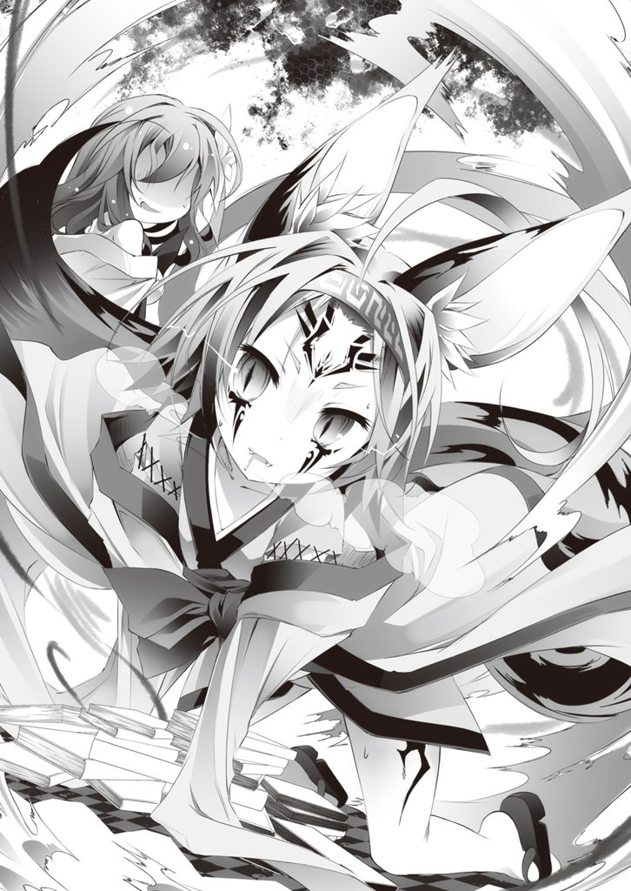

| ノーゲーム・ノーライフ 5 ゲーマー兄妹は強くてニューゲームがお嫌いなようです | |
| 榎宮祐 | |
ＭＦ文庫Ｊ
ノーゲーム・ノーライフ５
ゲーマー兄妹は強くてニューゲームがお嫌いなようです
榎宮祐
口絵・本文イラスト●榎宮祐
十の盟約
唯一神の座を手にした神、テトが作ったこの世界の絶対法則。
知性ある【十六種族】に対し一切の戦争を禁じた盟約──即ち。
【一つ】この世界におけるあらゆる殺傷、戦争、略奪を禁ずる
【二つ】争いは全てゲームによる勝敗で解決するものとする
【三つ】ゲームには、相互が対等と判断したものを賭けて行われる
【四つ】〝三〟に反しない限り、ゲーム内容、賭けるものは一切を問わない
【五つ】ゲーム内容は、挑まれたほうが決定権を有する
【六つ】〝盟約に誓って〟行われた賭けは、絶対遵守される
【七つ】集団における争いは、全権代理者をたてるものとする
【八つ】ゲーム中の不正発覚は、敗北と見なす
【九つ】以上をもって神の名のもと絶対不変のルールとする
【十】みんななかよくプレイしましょう
 ノーマルスタート
ノーマルスタート
『アクティブユーザー数・七十億人突破！
無限の可能性が待つ未知のフロンティアへ
さぁ旅立とう──自分だけの物語を紡ごう!!』
......現実。
愛おしき我らの人生も、広い視野に立てば一つのゲームだ。
そんな心躍るキャッチコピーのゲームを、さぁ思い描いてみるとしよう。
文字通り、一世一代の『人生』という名の大遊戯である。
ゲームスタート。
まずは両親の共同作業という自動進行のランダムキャラクターメイキング。
父と母とその他諸々の祝福という心温まるオープニングを経て、いよいよ操作開始。
拙くも操作法を身に付け、社会という荒波の縮図たる学校生活へ──。
ゲームの舞台は──地球。
その巨大なマップの片隅に投げ出された我々を待つのは、壮大な箱庭ゲームだ。
待ち受けるのは膨大な選択肢と、広大な自由度、無数のミニゲーム。
心躍るコピーに言われるままプレイを進めた我々は、しかしすぐに気づくだろう。
──〝騙された〟と。
無限の可能性──なるほどそれ自体に嘘はないのかもしれない。
だが思った通りのことが出来るとは、誰も言っていないのがこのゲームのミソだ。
レベル不足、パラメータ不足、資金不足、スタート地点による条件不足。
無数の足かせがこのゲームの自由度を台無しにしている。
だが──と我々は奮起する。
キャッチコピーを信じて七転八起。
この手には、無限の可能性と輝かしい希望があるのだと。
そうしてせっせとレベルを上げ、パラメータを高め、資金を稼ぐ。
キャラメイク時にランダムに振られた『才能』や『資質』といったパッシブスキル。
その有無という、全くフェアではない条件に悪態をつきながらも。
挫けずめげず『努力』によって経験値を重ね、必死に頑張る──そんなゲーム。
胸が熱くなる話だ。実に感動的ではないか。
──だが無意味だ。
どんなにスコアを稼いでも、このゲームには勝てない。
レベルもパラメータも資金も、全てを満たしても今度は──非難されるからだ。
何故か？
──〝努力しすぎた〟からだ。
それが全くフェアではないと言われるからだ。
たとえ『努力』によって勝ち得たものであっても。
『他人が持っていないものを持った』時点でフェアではないと言われるからだ。
そうして〝ペナルティ〟を受ける。
有形無形の、七十億ものプレイヤーからのペナルティという足かせが生じる。
そこでようやく、一つの疑惑が脳裏を過るだろう。
──このゲームに、自由など本当にあるのか、と。
どんな選択をしようと、社会から、他プレイヤーから、何処からか修正が入る。
その修正を受けて動いても、再び勝とうとすれば同じ事の繰り返しになるだけ。
そうして、ふと歩いてきた道を振り返って、我々は気づくはずだ。
自分の行動に、自分の意志などありはしないと。
誰かが決めた、指し示した、暗黙の了解のもと。
ただ求められた通りに歩いた道が延びるだけなのだ、と。
そこをただ──〝歩かされていた〟と気づいた時。
懐疑はにわかに、確信を帯びた疑念に変わる。
なるほど、この『人生』という詐欺ゲーは、確かに壮大で広大な箱庭ゲームだ。
ただし──プレイヤーは自分ではないのではないか、と。
そうしてふと自分の手を見下ろせば。
──無数の糸がまとわりついた手に、疑念は確信へ。
そうしてふと周囲を見渡せば。
──無数の糸がまとわりついた人々に、確信は理解へ。
振ればからからと音が鳴る頭でついにゲーマーは自覚する。
自分達は皆、ただの人形に過ぎないのだと。
この『人生』というゲームで、空気を読んで与えられた役割を演じる自分達は。
さながら人形劇の人形のように──ただのＮＰＣに過ぎないと。
さて、これら諸々を考慮した上で、一つ質問をしよう。
『何のために生きているのか』
────その答えは、本当に自分の意思で口にした答えだろうか？
────............
──それが空っぽの《人形》が見た世界だった。
《人形》はゲーム開始から十年間、その事実を疑ったことはなかった。
魂のない《人形》が、それを憂うことはなく、苦痛に感じたこともなかった。
ただ《Ｐｒａｙｅｒ》らしく他人の顔色を窺い。
いるとも知れぬ《Ｐｌａｙｅｒ》に祈った。
せめて人形の演目が、人間の役に立ちますようにとそう祈り、笑い続けた。
──あの日までは。
■■■
エルヴン・ガルド──ティルノーグ州・ロアミゲル。
三大陸に跨がる広大な領土を持つ世界最大国家の、五十二ある州──その一州都。
首都の東南に位置し、地精種の国・ハーデンフェルに隣する都市だ。
──森から生まれ、森に愛される森精種の都市。
その様式は人類種──エルキアの街並みとはまったく異なる。
都市中央には天楼樹──雲の上に枝葉を広げる途方もない巨木がそびえ立ち、その根は血管のように地を這って道路網を広げている。その道々の合間を埋める家屋や街灯は、大地から生えた樹木や蔓草が複雑に絡み合って形成されている。
それは森を拓いて地をならし、木を組んで石を積む『建築』とは似ても似つかない。
洗練された魔法技術が可能にする『生きた都市』だ。
その自然と一体化した街並みの中に、一際大きい屋敷がある。
州知事──ロン・バルテル卿の邸宅だ。
薔薇の花で編まれたその門前を、今、一人の少女が通り抜けた。
ふわりとカールがかった金色の髪。
突き出た長い耳はエルフの証。額には赤い魂石が陽光を照り返して小さく輝いている。
少女を出迎えるのは同じく長い耳の、上等な服に身を包んだ初老の男性だ。
「ようこそフィール嬢。それともニルヴァレン卿とお呼びしたほうがいいかね？」
フィールと呼ばれた少女が、ふわふわと社交辞令的な笑みを返した。
「好きに呼んで頂いて結構なのですよバルテル卿。正式に家督を継いでない身ですしぃ」
男──バルテルは、その答えににやりと唇を歪めた。
一歩退いて手を伸ばし、全てが樹で編まれた屋敷の中へフィールを招き入れる。
「遠路遥々、レディをこんな辺鄙な田舎まで出向かせてしまって申し訳ないねぇ」
「ふふ、心にもないことを仰るのがお上手ですねぇ」
「これは心外な。我輩は老いてなお、美しい花を愛でる心は失っていないつもりだがね～......それがたとえ、我が庭園には見苦しい雑草だとしても、ね？」
「愛でられる花も、咲き誇る相手は選ぶのですよぉ。付け加えれば時間もぉ」
笑顔を崩さず、だが互いの顔を見ることもなく、二人は歩く。
バルテルはフィールを中庭へと案内した。
多様な草花で彩られた庭園の中央には白塗りのテーブルと、二脚の椅子があった。
フィールが席につくと、バルテルは向かいの椅子に座って、
「つまらん用事なのはお互い様だね。では手早くいこうか」
早速、と切り出す。
「次期上院選挙──ニルヴァレン、君には立候補を辞退して貰おうかな？」
とバルテルは家名を呼び捨てて、命ずるように言った。
──好きに呼べと言ったのはフィールだが──貴族同士、暗黙の了解がある。
家名の呼び捨てなど侮辱同然の行為だが、フィールは眉一つ動かさずに微笑んだ。
「それだけですかぁ？」
「もちろん違う。正式にニルヴァレンの名で我輩を推薦して貰わねばね」
「はぁ～なるほどぉ」
「ああ、それから供託金と選挙資金も引き受けてもらおうか。それと我輩が懇意にしているカストレット卿が、君が所有する〝金竜骨琴〟を欲しがっていてね。あれを渡せば次の選挙で我輩を推薦してくれるという話なんだがね」
「あらあらぁ......我が家の家宝ですよぉ？ かつて都市一つと引き替えにされた──」
「そうらしいね。カストレット卿もさぞ喜ばれるだろうとも」
とバルテルはにやりと口の端を歪めた。
目尻を下げて、向かいに座る少女の豊かに膨らんだ胸元にねっとりと視線を送り、
「まあすぐにとは言わんよ。今日は別宅に泊まっていくといい。今後の付き合いについてじっくり腰を据えて〝夜通し〟話し合おうじゃないかねぇ？ ん～？」
「外面を取り繕ってもぉ、中身は変わらないのですよぉ？」
ほとんど失笑するように、フィールは言った。
「よーするにぃ、地位をよこせ金をよこせ女をよこせぇ、ってことなのですよねぇ。今時、人類種の山賊でももう少し慎ましい要求をすると思うのですよぉ」
「虫けらも身の丈は弁えるさ。我輩ほど高貴な身には相応しい装いがあると思わんかね？」
「塵ほども思いませんけどぉ、ご自分で思う分には自由なのですよぉ♪」
とあくまで柔らかい笑みを崩さず、フィールは続けた。
「それでぇ、わたしがそんな要求を呑むと思ったのはぁ、二日酔いだからですかぁ？」
「ははは、酒より華に酔うほうが好きでねぇ。我輩がこのくらいを要求するのはわかった上でここに来たのではないのかね？ なにせ──」
とバルテルが指を鳴らす。
精霊の気配が弾け、テーブルの上に湯気の立ち上るティーセットが現れる。
次いで、一枚の紙片が踊るようにフィールの前に滑り落ちた。
「......現上院議員代理ともあろう者が、奴隷解放を企てているのだからね──これを公にされても困らぬというなら、もちろん断ってくれても一向に構わないのだが？ ん？」
バルテルの言葉に、フィールは笑みを崩さなかった。
ただ無言でテーブルの上に落ちたその紙片に目を走らせる。
書かれているのは、単純なこと。フィール達の活動記録と証拠の一覧だ。
奴隷制度なくして森精種の社会は成り立たない以上、その活動は犯罪に等しい。
この一覧が表沙汰になればフィール達は国家反逆罪に問われてもおかしくない──
「ここまで分かってるならぁ、素直にこれを告発しないのは何故ですぅ？」
「我輩は自由主義、そして利己主義でねぇ、君らの遊びを明かして我輩に利でも？」
「それでぇ、わたしを恐喝するわけなのですねぇ、思想の自由万歳なのですよぉ」
「恐喝？ またそんな品のない......我輩は愚かな小娘に申し出ているだけだよ。しっかり躾けてやるから這いつくばって尻を振って見せてはどうかなと。ん？」
「御免こうむりますねぇ──さっさと本題に入ってはいかがですぅ？」
「ハッ、待ちきれんということかね？ ん～？ ──良かろう」
そう言って、バルテルが再度指を鳴らした。
直後、複雑な魔法陣が宙に広がり、カードの束が浮かび上がる。
「ゲームは『オラクル・カード』──説明は不要だね？」
オラクル・カード。
二十二枚の手札を使い、魔法を駆使して戦う、森精種では一般的でシンプルな遊戯だ。
──主に決闘の代わりとして用いられる危険なゲームでもある。
魔法の腕で劣るフィールには不利な勝負だ。
『十の盟約』に従うなら、挑まれたフィールにゲームの選択権があるのだが──
「ではぁ、お互いが賭けるものを明確にするのですよぉ～」
フィールは眉一つ動かさず、注意深く、視線を逸らさず応じる。
二人は交互に『十の盟約』に基づいた絶対遵守の要求を確認する。
「では我輩は君の身柄──そして生涯にわたる全面的な服従を要求する」
「わたし達はぁ、わたし達に関する忘却と、無条件かつ無制限の協力を要求するのですよぉ」
──当然の要求だ。
バルテルはフィールを手に入れれば、ニルヴァレン家の全てと貞操までも手に入れる。
一方、フィールは脅迫材料を破棄させ、逆にバルテルの身代を搾り尽くす要求だ。
「構わないのですよぉ、ただ──卿のような三下の小悪党がぁ、何もかも手に入れられるなんて思わない方がいいのですよぉ......自由思想も過ぎれば妄想なのですよぉ？」
「わかりきった虚勢は滑稽だねぇ、ん～？ ニルヴァレン家の恥が我輩に勝てると？」
視線と挑発が交差し──直後、二人は宣言する。
「「──【盟約に誓って】」」
その言葉に合わせるように、テーブルの術式が作動、ゲームが始まる。
バルテルとフィール、それぞれの手元に二十二枚のカードが均等に配られる。
カードはひとりでに宙に固定、互いに見えないようにシャッフルする。
そして、二人は同じ数と種類の手札を持って、相対した。
──これがオラクル・カード。
タロットカードの大アルカナ、二十二枚を使った単純なゲームの始まりだ。
──森精種同士で行うゲームにおいて、魔法によるイカサマはほぼ不可能である。
互いに術式、精霊の流れが見える条件下では、魔法は使おうとした段階で不正が発覚し敗北するからだ。故に森精種同士では、こうした自動で動く魔法具がよく用いられる。
中でもこのオラクル・カードというゲームは。
その遊戯性と勝敗を決定する要素のため特に好まれていた──すなわち。
「──２カード、セット」
フィールが短く呟くと、宙を浮く手札の内二枚が消える。
同時に、テーブルの上に音もなく裏返った状態で出現した。
バルテルが笑み、そして告げる。
「──２カード、セット」
今度はバルテルの手札から二枚が消え、そして先と同様にテーブル上に出現する。
互いに手札の中から二枚のカードを出し合い、勝負の場が成立する。
バルテルが言った。
「では、これで勝負でいいかね？」
「はいぃ～。それではぁ──」
と、二人が同時に宣言する。
「「──【オープン・ディール】」」
その言葉と共に、場に出された両者の手札が一斉にひっくり返る。
瞬間──空間が爆ぜるように、膨大な精霊の気配が膨れあがった。
バルテルの出した札は【力】と【戦車】。
役名──【名誉とは勝利なり】。
フィールの出した札は【愚者】と【恋人】。
役名──【恋とは発狂を意味する】。
それぞれ二枚のカードから光が迸り、両者の前に淡く透けた幻像が浮かぶ。
バルテルが喚んだのは全身甲冑の騎士だ。騎士は剣を抜くと馬を駆って突撃する。
その前に躍り出たのは、フィールのカードが呼び出したもがき苦しむ半裸の乙女だ。
乙女は舞うように騎士の首にすがりつき、その耳元で何かを囁いた。
騎士は懊悩するように首をもたげ──そして剣を翻した。
反転し、乙女を抱いて、己を呼び出したバルテルに向かって──斬撃。
──位階序列七位、【十六種族】最高の魔法適性を有する森精種。
その魔法技術の粋をこらして作り上げられた運命の札。
カードの『複合刻印』による断片術式が、容赦ない暴力となってバルテルを襲う。
対するバルテルは──舌打ちを一つ。手をかざし、瞬間的に防御魔法を組み上げた。
宙に魔法陣が二つ浮かび上がり、突撃してきた騎士の剣を受け止める。
轟音が鳴り、閃光が爆ぜた。
拡散した膨大な量の精霊が、庭園を舐めるように薙ぎ払い、散っていった。
手痛い反撃を受けたバルテルは、だが涼しげに、
「初手から攻撃反射の役とはね。臆病な無能は傷つくことも怖いと見える。ん？」
対してフィールも、笑顔を絶やさず応えた。
「一手目の当然のリスクヘッジなのですよぉ。あっさり勝負がついても困りますしぃ」
「ふふん、だから貴様は見苦しいのだよ......このゲームにそのような小細工は野暮の極み。我輩が貴い血にふさわしい振る舞いというものを教育してやろうではないか、ん～？」
つまりはこれが、オラクル・カード。
──序列七位、森精種の決闘ゲームである。
両者は二十二枚の同じ手札を持ち、二枚ずつカードを切って役を作る。
役には単純な強さの他、相性があり、負けた方は役に沿った『攻撃』を受ける。
その攻撃は、プレイヤーの魔法によってしか防げない。
使用したカードは場に捨てられ、十一回──すなわちすべてのカードを使い切れば、ギブアップするか、続行するかの選択を迫られる。続行する場合は、再び両者が二十二枚のカードを持ち、勝負を繰り返し──どちらかが耐えられなくなれば、勝敗は決する。
役は全部で二百三十一通り──その全てを読み切り、対応することは不可能。
よって勝敗は『いかに攻撃を防ぎ続けられるか』に依存する。
──すなわち、森精種の術者としての技量が問われるのだ。
『四重術式』を展開出来れば一流の術者であるとされ、バルテルはそれに一歩及ばないまでも優秀な術者である『三重術者』であった。
かたやフィールは──
「──そのような刻印術式や、初心者用補助魂石に頼ってようやく『二重術式』ができる程度の身で、本当に我輩に勝てると考えているのかね。ニルヴァレンの恥が、ん？」
──そう。このゲームにおいて、勝敗を決めるのは魔法の腕前だ。
同時展開可能な術式の数──それは同時に魔法の強度や使用回数を意味する。
三重術者であるバルテルに、やっと二重術者に届くフィールが勝てる見込みは皆無。
だがフィールはこともなげに笑い、
「はいぃ、もちろんなのですよぉ～？ たかが初手を防いだだけで随分おっきなお顔してますけどぉ、まずはわたしに一撃でも通してから吠えてみてはどうなのですかぁ♪」
そして、ちらりと視線を上向ける。
未だ収まらない精霊の胎動によって花が舞い散る中庭から、二階が見える。
その二階の窓の奥──黒髪黒装束の少女──〝相棒〟が歩く姿に、口元を緩める。
なるほど、こんなゲーム、本来は魔法を使えない人類種が割り込む余地などない。
一撃でももらえばその時点で必敗。そもそもゲームにすらならない。
だが、と──その脳裏に二つの顔が過った。
不敵な、皮肉っぽい、だがどこか悲しげな一人の男と一人の少女が、囁く。
──何故正面から挑まなければならないのかと。
そして──
「ゲームは始める前にはもう終わってる、のですよぉ♪」
■■■
「......チッ、バルテルの野郎」
二階から、中庭で行われる勝負に、バルテル家の執事フリッツは口汚く舌打ちした。
──主人の意向は交わした盟約内容から明らかだ。
相手の弱みを握り、勝てるはずのない勝負をふっかけ、相手の身柄を押さえる。
今回はあの娘を負かせば、自動的にニルヴァレン家の票と利権、財産、そして何よりも黄金より貴重なあの──おっぱいがついてくる。
なにやら余裕ぶった悪党ヅラだが、どうせ頭の中はすでに勝った後。
夜のベッドで楽しむおっぱいでいっぱいに決まっている。
なぜなら、こうして少女の死角からバルテルの代わりにカードの『攻撃』を防いでいる──つまりイカサマのサポートをしている彼自身、おっぱいでいっぱいだからだ。
ニルヴァレンの恥だ？ 無能だ？ 知ったことか。
あのおっぱいだけで、他の欠点は全て帳消しにできる。
そもそも女は乳であり、その乳に見合う顔や尻や腰のくびれや脚の長さがあればよく、乳以外は全てオプション、ランチについてくる紙ナプキン程度の価値しかないのだ。
頭の程度？ 魔法の腕？ 全くもってどうでもいい話。
──端的に言えば、フィールはフリッツの直球ドツボだった。
「あら、こんなところで奇遇ね。バルテル卿の執事......フリッツと言ったかしら」
「──ッ!? おまえはニルヴァレンの──」
慌てて振り向くと、そこにいたのは黒髪黒装束の人類種......ニルヴァレンの奴隷。
クラミーと言ったか、とフリッツは舌打ちした。
「......ちっ、貧乳が。気安く声をかけるな」
まずもって人類種の哀れ乳に話しかけられたのが酷く不愉快だ。
まして今はそれどころではない。
バルテルのサポートをしつつ、フィールのおっぱいを余すところなく観賞するという重要な仕事がある──だがこちらの内心など知る由もないのか、貧乳は親しげに続ける。
「こんなところで会ったのも何かの縁。私にゲームを〝仕掛けて〟みない？」
「......口の使い方を弁えろ飼い犬。せめてその乳を三倍にするまで口を開くな劣等種」
軽蔑、侮蔑、無数の意図を含んだ言葉に、だが少女は、
「口の使い方......そう？ じゃあ例えば──」
笑顔のまま、目を細める。
「あなたがバルテル卿と不正してることを暴露する──なんて使い方はどう？」
「......なんのことだ？」
「人類種が魔法を感知出来るわけがない──と？」
「............」
こちらが押し黙ると、芝居がかった様子で貧乳少女が首を振る。
「確かにその通り。例えば。例えばの話だけど？ 三重術者に二重術者が勝つことは難しくとも不可能ではない。でも、あなたがここからバルテル卿と二人がかりでカードの『攻撃』を防いでいれば、あのゲームはほぼ〝必勝〟になる。魔法を感知出来ない私には、その証明も出来ない。主の──フィーの大ピンチってところね」
「............」
だが──と貧乳は口元を隠してクスクスと笑い、続ける。
「私が感知する必要なんてないのよぉ？ だってあなたが自白するんだもの」
「......なに？」
「もう一度言うわ、私にゲームを〝仕掛けて〟みない？ 断るなら──」
と少女は昏い笑みを浮かべて、懐から小さな宝石を取り出した。
「あなたがバルテル卿の資金を運用して密造した〝高純度魔薬〟を地精種──隣国に密売してるのを公安にチクって破滅させてあげる──と、こんな口の使い方はいかが？」
「な──ッ!?」
フリッツが、呻くような声を洩らす。当然だ。
クラミーが掌で弄ぶ小さな石こそ彼が扱っている魔薬──違法な商品に他ならない。
「精霊を濃縮液化し摂取することで体内の精霊量を引き上げる。魔法のための増幅薬。でも副作用があって──むしろその為に濫用する者が後を絶たず禁制になった代物」
──すなわち。
「過剰摂取による快感と万能感。まさに麻薬」
「......ッ」
「もうお分かり？ 私にゲームを仕掛けなさい。それ以外あなたが助かる道はないの」
薄ら寒い笑みを浮かべて言うクラミーの顔に、フリッツは唇を引きつらせた。
ダメだ。
もう、これまでだ。
「......くっ！」
いや耐えろ。まだだ、まだ笑うんじゃない......！
その程度の情報で追い詰めた気になっている貧乳に腹を抱えて笑うなど無様すぎる!!
貧乳から顔を背けて、フリッツはわなわなと肩を震わせた。
それは追い詰められた男の怯えに見えただろうか？ ──愚かだ。愚かすぎる。
この勝負はバルテルからニルヴァレンに仕掛けたものだ。
ニルヴァレンが奴隷解放を企てている情報を見逃すのと引き替えに、不利な条件を呑ませて強引にゲームに持ち込んだ。その勝利を確実にする為、自分に補助を任された。
だが──と思い出す。先ほど、あの超巨乳がこぼした一言を。
──あっさり勝負がついても困りますしぃ......
（──この二人。最初からバルテルではなく、狙いは俺というわけだ）
失笑を噛み殺す。あっさりバルテルの勝負に乗ったのも、全ては仕込み。
バルテルのサポートで手の塞がった自分なら、人類種の少女一人でも追い詰められる。
そんな安い計算が透けて見える。
そもそも、自分はこうなることを知っていた。
魔薬密売の件が掴まれていることも。
この勝負中に何らかの接触があることも、全て事前にバルテルより知らされていた。
なぜなら、この二人はまず最初にバルテルに話を持ち込んだからだ。
──お宅の執事がこのような悪事に関わっている。雇い主であるあなたの体面を傷付けないよう秘密裏に自白させ、情報を得たいので協力を求む、と。
そうして、こちらをハメるためにこの状況を作り上げた。
中庭で行われているゲームも、バルテルと打ち合わせた上での八百長勝負──
（......と思っているのだろうな──まったく笑える話だ！）
この二人は協力を求めたバルテル自身が密売の主犯だと気付いていない。
バルテルはこちらを切れない。自分が自白すれば、密売のルートはもちろん彼が主犯である証拠も山のように出てくるからだ。
故に、彼は協力する振りをしてフィール自身を手に入れることを目論んだ。
バルテル自身がアイデアを提供し、自分の屋敷を舞台に選ぶ。
秘密裏に、という前提がある以上、この貧乳の奴隷以外の仲間はいない。
──何のことはない。
哀れ乳の人類種と哀れな頭のおっぱい二人。
こちらをハメるつもりで蜘蛛の巣に自ら飛び込んだというわけだ。
「......存外頭が悪いのね。馬鹿にもわかるように説明するわ」
笑いを噛み殺すフリッツに、冷水を浴びせるような声で貧乳が言う。
「あなたに選択肢はないのよ。ゲームか、破滅か。おわかり？」
滑稽な挑発に歯を食いしばって噴き出すのをこらえ、フリッツは顔を上げた。
中庭から目を離し、目の前の相手に向き直る。
フリッツは努めて平静を装って、傍のテーブルについた。
「......いいだろう。だが俺も暇じゃないんでな、手っ取り早く頼む」
「奇遇ね、私も相棒の都合上、ゆっくりしてられないの。単純に行きましょう」
倣うように席について貧乳が言う。
「ここに何の変哲もないトランプがあるわ」
トランプから三枚のカードを取り出してテーブルに置く。
スペードのエース、クイーン、そしてキングだ。
「クイーンはキングに負け、キングはエースに負け、エースはクイーンに負ける」
そう言って三枚を伏せ、テーブルの上でシャッフルする。
「互いに一枚ずつ裏向きに引き、カードを見せ合い勝敗を決める。馬鹿にも解る？」
「──ふん、要求は？」
「それはそっちがすることじゃないのかしら？ むしろ、命乞いと呼ぶべきかしら」
嘲るように貧乳が笑う。それにわずかな苛立ちを覚えつつ、フリッツは応じた。
「......では〝貴様ら〟が掴んだ密売に関する全ての情報の破棄と忘却を要求する」
「ええ、私はあなたの〝自白〟と〝証言〟を要求するわ。洗いざらい。全て、ね」
その曖昧な文言に、フリッツは小さく眉を跳ね上げた。
目的は──密売に関わる全ての情報、そして中庭で行っているゲームへの不正告白か。
なるほど、この馬鹿で哀れな女どもも、馬鹿なりに己の利を考えてこの場に立っているらしい。それが最初から出遅れているとも知らずに......。
「──いいだろう。【盟約に誓って】」
「ええ、【盟約に誓って】ぇ......」
──札を取る。
札を伏せたまま、フリッツはさささやかな魔法を編む。
（バルテルの補助をしていれば、魔法は使えないとでも思ったか？）
だが、相手はあのニルヴァレンの恥だ。
フィール・ニルヴァレン──ニルヴァレン家はじまって以来の無能。
学院──『白の楼樹』でも落第、手の甲や額の刻印術式と補助魂石なしには単一術式すら危うい落ちこぼれ。対するバルテルは三重術式の使い手。ましてや八百長勝負に油断している愚かな巨乳が相手だ。例え自分が一瞬抜けたところで何の問題がある？
──〝透視〟する。伏せられたこちらのカードは『エース』。
残念ながら事前に見抜けなかったが、相手が提示したゲーム。イカサマは確実だ。
魔法の気配はなかった。それは断言できる。ならば人類種に出来るイカサマ──
意図的なシャッフルで引く札を操作したか。
何にせよ、この貧乳の札は自分に勝てる札──『クイーン』なのは確定だ。
予め提示された、三枚しかないカード。
仮に自分の伏せ札の『エース』を『キング』に描き換えても、伏せられた一枚をめくられた時点で不正が露呈する。
だが、ならば〝相手の伏せ札と自分の伏せ札の絵柄を魔法で入れ替えればいい〟。
作為的に札を引き自分の伏せ札を把握していたとしても、それ自体が不正。
まして入れ替えたところで、魔法を感知出来ない人類種にはそれを立証出来ない。
──とでも思ってるのだろうか、と。
（あまりナメないで欲しいものだな、劣等種ごときが）
音も立てずに、テーブルを指で打つ。
瞬間、テーブルを走った精霊が告げた貧乳の札は──『キング』だった。
つまり。自分の伏せ札を入れ替えられるのを前提で──わざと負ける札を引いた。
あまりにチープな罠。典型的な、策士策に溺れるのパターンだ。
「──所詮は〝ニルヴァレンの恥〟とその奴隷か......間抜けめ」
フリッツはもはや隠しもせず、声に出して笑った。
「賢しい貧乳より、馬鹿な巨乳、女なんぞ脳ミソより乳に栄養が行ってるほうが価値があるものだが──馬鹿な貧乳ともなると、全く救いようがないな？」
「......品性は生まれついては備わらない、っていうのは本当のようね」
不愉快そうに、貧乳が顔を歪める。
フリッツは小さく喉を鳴らした。何かするまでもない。自分の罠にハマればいい。
「それじゃあ、オープン・ディール、いいかしら？」
「ああ、そしておまえの敗北だ」
二人同時に札を開く。
フリッツの札は透視した通りに『エース』だ。
そして貧乳の札は──
──『クイーン』。
「......な、何故だ──ッ!? そんなはずはッ!!」
椅子を蹴って立ち上がり、フリッツは叫んだ。
馬鹿な、有り得ない、そんなはず──と喘ぐフリッツに、クラミーは微笑った。
──柔らかい。そう。太陽のような、満面の笑みで、
「......ふふ、覗き見した札と違ってぇ、驚きましたぁ？」
──口調とともに、クラミーの姿がふわりと揺れる。
「魔法はぁ、相手をよ～く見てから使ったほうがいいのですよぉ～？」
黒髪の少女の姿が陽炎のように立ち消え、波打つ金色の髪の少女へ──すなわち、
「貴様......ニルヴァレン!?」
クラミーの姿を真似ていたフィールへと姿が変わる。
「はぁい、フィール・ニルヴァレンなのですよぉ」
ふわふわとした笑みを浮かべて、フィールは唇を弧に曲げた。
「脳より乳に栄養が行ってる、でしたっけぇ......？ そぉすると疑問ですよねぇ？ あなたの場合栄養は何処へ行っているのでしょぉ──ご子息も育ちが悪いようですしぃ」
一瞬でフリッツの体を這わせた精霊から身体情報を暴き、フィールは目を細めた。
「上にも下にも活かされないあなたに摂取される栄養に涙が止まらないのですよぉ」
だがフリッツはそんな嘲弄どころではない──負けた？ ニルヴァレンを相手に!?
「狼狽えなくても大丈夫なのですよぉ～？ 短くても小さくてもぉ、そういうのが好きな人もきっといるのですよぉ......頭と顔まで悪いとぉ、保証できないのですけどぉ♪」
──ならば──ならばならばならば!?
「......馬鹿なッ！ ならばバルテル卿と決闘しているのは──誰だッ!?」
■■■
「クラミ～、こっちは済んだのですよぉ～」
フィール・ニルヴァレンがテラスから身を乗り出し、中庭に向かって手を振った。
瞬間──目の前でゲームをしていたフィール・ニルヴァレン──いや。
その姿を真似ていた少女が、ヴェールを脱ぐように元の姿を取り戻す。
その場に現れた黒髪黒装束の少女──クラミー・ツェルが、優雅に一礼した。
「──ご協力感謝します、バルテル卿」
「......い、いや。身内の不祥事は、見抜けなかった我輩の責任でもあるのでね～、ん」
深く頭を下げてきた人類種の少女に、バルテルは動揺を隠し、眉根を寄せて言った。
「し、しかしこれは話が違うのではないかね？ ん？ 君達は秘密裏に事を運ぶと約束してくれたはずだが......他にも協力者がいるとは聞いていないのだがね？」
こちらの言葉に、少女は「あら？」と小首を傾げた。
「お言葉ですが、卿の屋敷に招かれざる客がいれば、誰より卿がそれに気付くのでは？」
「......む、むぅ......」
確かに、とバルテルは口を噤んだ。
屋敷の中にいるのは自分とフリッツ、フィールとクラミー、そして何名かの使用人。
ここは自分の屋敷。他に誰かいれば、すぐに感知する。その程度の術式は張ってある。
そもそも、それを見込んで自分はここをゲームの場所に選んだ──だが。
ならば、この人類種の少女は、どうやって自分と決闘していた？
黒髪の少女が、にっこりと笑って言う。
「お約束通り、私どもは二人きりでございます」
「そ、そうか失礼した......で、ではこのゲームは無効ゲームということで終了だね、ん？」
──おかしい。何かがおかしい。
押し潰されそうな不安に駆られて、バルテルは席を立った。
今はとにかくこの勝負を流して、一刻も早く後の算段をつけねば──
「はて？ 何を勘違いされているのです？ バルテル卿」
──と、その凍りつく響きの言葉に、バルテルは振り返った。
そこにいるのは、とびきりの──嘲る笑顔の黒髪の少女、クラミー。
「２カード、セット」
少女の手札から二枚のカードが消え、テーブルの上に現れる。
「まだ──こっちはゲーム終了していませんよ？」
「──なっ......!?」
双方の同意がない以上、ゲームの終了は成立しない。
「き、貴様、何のつもりだ!?」
「もちろんゲームの続きです。席についてください。降りるなら賭け金を頂きますが」
クラミーの言葉に、バルテルは目を見開いた。
どうせこちらの勝ちは揺らがないと思って聞き流した、相手の要求。
──『私達に関する忘却と無条件かつ無制限の協力を要求する』
文言は違えどバルテルがフィールに対した要求と同じ──いや、それ以上だ。
自分は勝負に負けたことさえ忘れ、彼女たちの奴隷に成り下がる。
対して、バルテルの要求はこうだ。
──『君の身柄──そして生涯にわたる全面的な服従を要求する』
この場合、ゲームを受けたのはフィールではなく、クラミーだ。
勝ったところで得られるのは取るに足らないニルヴァレンの奴隷一匹。
有利な条件を押しつけたつもりが──逆に不利な条件を呑まされていた──ッ!?
「きっ、貴様ら!?」
「バルテル卿？ そろそろ制限時間ですが、棄権されるので？」
激昂するこちらに対し、クラミーが涼しい顔で告げる。
──一方が手札を切ってから制限時間内に札を出さなければ、その時点で敗北。
そのルールを思い出したバルテルは、慌てて手札に叫んだ。
「──っ、２カード、セットだ!!」
バルテルの叫びに従い、手札から二枚のカードが消えテーブルに出現する。
クラミーがにやりと口の端を吊り上げ、
「オープン・ディール」
宣告と共に、場に出された四枚のカードがひっくり返る。
バルテルの出した札は【月】と【女教皇】。
役名は【其の法衣こそ欺かれ】。
クラミーの出した札は【正義】と【皇帝】。
役名は【我が支配こそ最上なり】。
相手の攻撃をいなして逆に告発者を否定するバルテルの役に対し、あらゆる追加効果を貫通して己の意を通すクラミーの役が発動する。
皇帝の抜いた剣が女教皇の真実を暴き、その地位から引きずり下ろす。
相手の力と権威を奪った皇帝の力が、茫然自失のバルテルへと襲いかかった。
「────くッ!?」
慌てて防御魔法を紡ぐ。
皇帝の剣が届くすんでのところで三つの魔法が発動した。
だが急造の防護は軋みを上げ、バルテルの精霊回廊接続神経に焼く様な負担をかける。
爆音と閃光が散り、呼吸を乱したバルテルの背後から、声がかかった。
「あらぁ？ 今のでぇ、もう実力の半分は削がれたみたいなのですよぉ？」
振り返ると、悠然と歩み寄るフィールと、肩を落とし付き従う執事の姿があった。
「っ、フリッツ──貴様、ニルヴァレン如きに敗北しおって!?」
バルテルの罵声にフリッツは顔を歪め、しかし何も告げることなく俯いた。
その隣から、フィールがふわふわと笑みを浮かべて言う。
「仕方ないのではぁ？ わたしを人類種だと思って油断しまくってたのですよぉ」
「黙れニルヴァレンッ！ この毒婦が、貴様、我輩を騙したな!?」
「えぇ～騙したなんて人聞きが悪いですぅ......だってぇ～......」
とフィールはテーブルについたままのクラミーに視線を向けた。
対するクラミーは頷き、冷笑を浮かべた。
「──あんたこそ、ずっと私達を出し抜いて勝とうとしてたじゃない」
息を呑むバルテルに、クラミーは言葉を重ねた。
「執事に違法密輸やらせて稼いでたのはあなた──気付いてないと思った？」
「協力する振りしてわたし達をハメればぁ、証拠隠滅して全てを総取り──」
「出来なかったから無効ゲームにしてケツをまくる──浅ましい我輩だこと」
フィールとクラミーの糾弾に、バルテルは激しく顔を歪めた。
全てバレていた。こちらの企みも解った上で、逆に手玉に取られた──......いや。
「ふ、ふふ......詰めを誤ったなニルヴァレン！」
「はぁい？ お呼びですかぁ？」
きょとんとして首を傾げるフィールに、バルテルは勝ち誇って叫んだ。
「我輩がゲームしていた相手がこの小娘であるとわかった以上、貴様らの不正は明白だ！ 人類種にカードの『攻撃』を防げるはずはない、貴様が手を貸したのだろうッ!?」
──そう、ゲームを始めてからカードを使い切ること三周、そして七回の闘い。
つまり四十回の局面において、クラミーは何度か『攻撃』を受けた。
それを魔法障壁で防ぐのを、バルテルははっきりと見ている。
人類種にそれができない以上、自動的にフィールが手を貸したことになる──だが。
糾弾されたフィールは呆れさえ込めて頬をかき、へらっとした笑顔で、
「それを執事にやらせていた方にぃ、言われたくはないのですがぁ～......」
次いで、クラミーが告げる。
「そもそも、それは不正にならないわよ──このボケ」
直球で詰られて、バルテルは絶句する。
「盟約に誓う文言は吟味しなさい──私は条件確認で『わたし達』と明言したわ」
──今度こそ、バルテルは言葉を失って目を見開いた。
わたし達は、と宣言した以上、このゲームはバルテル対クラミー・フィール組の勝負と見做される。ゲーム中に席を離れることを禁ずるルールはない、離れた場所からフィールが防御陣を張ったところで、ルール違反には当たらない──いや待て、それ以前に。
（相互の姿を変え、我輩らにそれを認識させず、二階でゲームをしながら防御陣──？）
ため息交じりに、クラミーが唇を歪める。
「......フィー、このアホ、やっと気づいたみたいよ？」
「股間に血が行き過ぎて頭に回ってないハンデ持ちなのですよぉ、労ってあげてはぁ？」
にこやかに、だが冷たさしか感じられない声音で、フィールが言う。
「こんな単純な言葉遊びにあっさり引っかかってくれるんだもの。がっかりだわ。もっと複雑な仕掛けや保険、対策を用意してたのに──何よ、徒労だったじゃないの」
目の前で、劣等種の少女が呆れたようなため息を吐く。
「ついでに......あんた手札分かり易すぎ。最初の手は必ず力攻め。防がれたら呪い役。カウンターは好まないから使わない、さっきの手に至っては動揺そのまま、局を流して時間を稼ぐ『攻撃無効』の役。アホでも分か──失礼。ならあなたに分からないのも道理ね」
バルテルの肩が震えた。怒り、屈辱──そして認めがたい、恐怖に。
この四十回の局面で、クラミーが『攻撃』を受けたのはほんの数回。
それも偶然の要素が大きい初期の局だけだ。残りの局は──全て手札を読まれた。
森精種ですらない、ただの人間、劣等種が──
「──あまり、人類をナメるんじゃないわよ、老害」
得体の知れない、黒髪の少女が、
「......さあ──ゲームを、続けましょう？」
死に神のように嗤って告げた。
────............
鋭く奔った精霊流がバルテルの腕を捕まえ──精霊回廊接続神経をかき乱す。
名状しがたい苦痛に、齢数百の老人は子供のように泣き叫んだ。
そして、庭園に咲いていた花を吹き散らすほどの衝撃が収まった後──
椅子から転げ落ちてもがき苦しむ森精種の老人に、人類種の少女が優しく囁いた。
「──これで四周目が終わったわけですが。どうされました、バルテル卿？」
「ひぃっ、ひっ......」
「ちなみにお気づきでしょうが、フィー......我が主は──『六重術者』です」
耳元で囁かれたその言葉に、老人の顔が紙より白く青ざめる。
それが嘘ではないことは、すでに理解している。
そうでなければ今日、フィールがやってのけたことの数々は説明がつかないからだ。
蒼白になって震える老人を労るように膝をつき、クラミーが続けた。
「大丈夫ですよ。障壁を紡ぐ力は残ってないようですが──勝機は十二分にあります。私の手札を全て読み切り一撃も受けず完封し、六重術者を削りきれば良いだけです」
──那由他の彼方の勝機を語って、クラミーは笑う。
「失敗しても平気ですよ。ちょっぴり痛くて──うっかり死んじゃうだけです」
──そう、それがまさに──自分がやってのけたことだと。
劣等種ごときに出来て、まさか出来ないとでも言わないだろう──？
「み、みみ、認めるッ！ 我輩の負けだ！ だから、だからもうやめてくれ!!」
「──はい、では私達の勝ちですね。お疲れ様でした、バルテル卿」
惨めな老人を尻目に席を立つクラミーに、フィールが歓声を上げ抱き着く。
「凄いのですよぉ!! このゲームで人類種が森精種に勝ったのきっと初なのですよぉ!?」
「......こんなボケジジイじゃ自慢にならないわ。最近相手した連中で一番の雑魚だわ」
膨れるクラミーの頭を慰めるように撫でながら、「さてぇ」とフィールが振り返る。
地面に倒れたバルテルと、立ち尽くすフリッツを視線で嬲る。
「それではぁバルテル卿ぉ？『盟約に誓った』通りぃわたし達に関する全てを忘れてぇ」
そして──クラミーが笑顔で続けた。
「今まで通りに違法な商売を続けなさい」
──な......なに？
「そしてぇフリッツさん？ あなたは半月後──〝全てを自白〟するのですよぉ」
──どういう、ことだと。
バルテルもフリッツも理解が追いつかずにいる中、クラミーはテーブルに近づき、
「それじゃ私達はそろそろお暇するけど──その前に」
ゲームに使っていたタロットカードをシャッフルしながら嗤う。
「置き土産に、あなた達の未来を占ってあげるわ」
「あれぇ、クラミー、そんな特技があったなんて初耳なのですよぉ？」
「ええ、今日はじめてやるもの。でも──この占いは絶対よ」
冗談めかした様子で、だが不気味にクラミーが四枚の札を手にとり──
「あら、面白い札が出たわね。えー私が見るに～？」
言って、四枚の札を手に持ったまま一枚ずつ裏返して見せて行く。
──【節制】の正位置。
「あなた達は今後とも万事順調に、地精種への魔薬密売を続けるみたいね」
──【塔】の正位置。
「でも半月後......あらあら大変、取引先の地精種が〝何故か〟自白して捕まっちゃう」
──【運命の輪】の逆位置。
「そこから〝運悪く〟執事からもあなたの名前が出て、芋づるで足がついて......そして」
──【審判】の逆位置。
「バルテル卿も、法に裁かれて──ジ・エンド。ご愁傷様ね」
青ざめる二人をよそに、クラミーはフィールに芝居がかった問いを投げかける。
「ふふ、面白いわねフィー。バルテル卿が捕まれば、彼が保有してるエルヴン・ガルド屈指の貿易会社、ウィル・アンドモロー社のオーナーは誰になるんだったかしら？」
「あらぁ？ 偶然ですねぇ、三日前〝少し遊んだ〟エンリヒ家の御曹司なのですよぉ」
──全て。全てが手の平の上。予定調和だと昏く嗤う二人の姿に、
「ニルヴァレン。貴様──いや、貴様らはいったい何を企んでいるッ!?」
がちがちと歯を鳴らして吼えるバルテルに、二人は冷笑で応じる。
「えぇ～？ 教えてもいいですけどぉ～？」
「どうせ忘れるわ。私達と関わった事実ごとね」
くすくすと無邪気に笑い合う魔女二人の姿に、バルテルは戦慄した。
自分は、いったい何に手を出してしまったのか──と。
「さぁ盟約に誓った通りに──ごきげんようバルテル卿」
「今後の商売繁盛と益々のご活躍をお祈りしてるのですよぉ～」
──そうして。
ぱちん、とクラミーとフィールが指を鳴らしたと同時に。
今日一日の全てが、なかったことになった。
■■■
クラミーとフィールは、揃いのフードを目深に被った。
二人はここにいなかったし、来たこともない。
そういうことに、なったのだ。
二人は人目を忍び、バルテル卿の屋敷、最上階から飛び降りる。
重力より速く、フィールが紡いだ術式が二人の身体を捕らえて空高く舞い上げた。
──風を切って、夜の空へと。
朱い月と星の光、そして都市の灯りだけが眼下の景色を煌々と照らす。
森の中の都市。圧倒的に洗練された魔法で編み上げられた緑の街。それはクラミーには見慣れた景色だが──仮に初めて見たとしても、それはエルヴン・ガルドが持つ次元違いの文明力を窺わせるには十分な光景──その上空をフードを翻し二人は舞う。
「クラミーお見事なのですよぉ～」
木──いや建物から建物へ。屋上を伝い跳ねるように駆けてフィールが言う。
「本当に、わたしの補助なしであの老害を破るのぉ、すごく心配したのですよぉ？」
「......それよりフィー、大丈夫なの？」
「えへへぇ、クラミーに心配されるのも悪くないのです、成長してるのですねぇ～」
空を舞う術式を維持しながら、戯けた笑顔でフィールは応じる。
だがその額の魂石は魔法の濫用によって輝きを失いくすんでいる。クラミーにはそれが仄暗い灯りの中でもはっきりと見えていた。
ロン・バルテル卿と、その執事フリッツ。
『三重術者』と『二重術者』の二人は、一流とは言えないまでも優秀な術者だ。
......でも、とクラミーは隣、夜空を舞う少女を見やり思いに耽る。
──フィール・ニルヴァレン。
クラミーが奴隷として仕えるエルヴン・ガルド有数の名家の現当主。
国内最高の魔法学府『白の楼樹』を──落第の末退学。
白い刻印術式を刻み、初心者用補助魂石を身に付ける彼女を、何も知らぬ者は嘲笑う。
ニルヴァレン家始まって以来の無能──『屑鉄』と。
だが、それが無能のフリをしていると知るものは、その嘲笑こそを嗤う。
ニルヴァレン家始まって以来の才媛──『黄金』だと。
フィールがクラミーに、その実力をことさら主張したことはない。
だが──
自分とクラミーに偽装魔法を掛け、それをバルテルとフリッツに悟られないようそれぞれに認識阻害魔法を掛ける。更に遠距離からオラクル・カードの『防御』を行い、その上でフリッツとの勝負に臨む......一度に六つの魔法を行使していたのだ。
『六重術者』──紛うことなき超一流の術者である。
いや、先日の空達とのゲーム──ジブリールの核を使ったオセロゲーム。
フィールは序列六位の天翼種が扱う天文学的な力を制御しきる術式を編んでみせた。
その事実を踏まえれば、超一流と呼んでなお足らない術者だと容易に想像がつく。
それ程の術者なら、退学したはずの『白の楼樹』さえ名誉教員として迎えるだろう。
......最低でも、そのくらいの待遇があるはずなのだ。
「んむぅ......？ どうかしたのですかぁ、クラミー？」
夜風になびく金色の髪、宵闇にも白い肌、微笑む姿は陽の光よりなお目映い。
由緒正しい家柄に生まれ、卓越した知性と魔法の才を秘めた、ニルヴァレンの花。
その歩む先には、輝かしいばかりの未来が約束されていたはずだ──彼女自身が、その全てを棄てさえしなければ。
そう、彼女はその約束された将来を拒んだのだ。
己を隠し、無能を演じ、あまつさえ故郷に、祖国に、己の種に牙を剥くことを選んだ。
それは誰でもない、他ならない、ただ一人の──
「──......なんでも、ないわ」
──親友の為に。
そっと目を伏せて、クラミーは息を吐く。
奴隷に過ぎぬ人類種を親友と呼び、全てを敵に回した。
奴隷の解放──なるほど聞こえはいい。
だがそれはエルヴン・ガルドの国家機密を解放するに等しい。高度な魔法の為に利用されている妖精種など解放しようものなら、自国の機密兵器を他国に売り渡すと同義だ。
そんなことになれば地精種──ハーデンフェルがその機を逃すはずはない。
既に千年近くも領土問題で争い続けた大陸の一つは失うだろう。
下手をすれば、そのまま国家は分断、その果てに待つものは──語るまでもない。
──クラミーのためなら故郷が滅びようが知ったことではない。
彼女はそう嘯き、本気で考え、事実、何度も危険な行動を取っている。
そんな彼女にクラミーは感謝と、種族や年齢など超えた憧れにも似た感情を抱いていた。
──だが、そういう自分はどうだと、クラミーは思わずにいられない。
顔には出さずも、フィールの魂石は色濃く疲れを示している。
彼女程の人にここまでの負担を強いなければ、ゲーム一つも勝てない自分は。
果たして、フィールの『親友』として釣り合って──
──ズキリ、と頭が痛む。
フラッシュバックだ、とクラミーは頭を押さえて立ち止まった。
──小指を絡めて約束を交わす少女と、人であることを望んだ人形。
彼は──人形は──空は。少女の足枷になっているとは考えなかったのだろうか。
本来なら一人で大空高く羽撃ける者を、自分こそが地に繋ぎ止めていると──
「あれ......クラミー、本当にどうしたのですぅ？」
立ち止まったこちらに気付いて戻ってきた親友に、クラミーは俯いたまま告げた。
「......フィー、ごめんなさい。私がもっと上手く立ち回れれば......」
「クラミー......？」
エルヴン・ガルド。圧倒的な魔法適性を武器に、陸地の三割近くを支配する超大国。
次ぐ大国であるハーデンフェルに倍以上の国力差をつける、世界最大の国。
その土台はまさに城塞の如く、隙を窺うことさえ至難の業──。
......いや、それも言い訳だ。
脳裏を過った二人に、クラミーは拳を握る力を強めた。
「今回だって〝あの二人〟なら──魔法なしでやってのけたはずよ」
「クラミー」
流通、貿易、権益を握る者を少しずつ切り崩し、秘密裏に力を削いでやっと蟻の一穴、針より小さな穴が開く。
だが、このままではいつまでたっても──、
「それどころか、もっと大きく勝てたはずよッ！」
細かいゲームを積み重ねれば、粗もまた積み重なる。
上層部にこちらの動きを悟られれば、自分達などあっという間に潰される。
空のように〝不意打ちの一撃で全て終わらせる〟──そんな一手が必要なのに。
「なのに......ッ、いたずらにフィーに負担を掛ける一方で全然前に進まな──」
「クラミーっ！」
握った拳の爪が皮膚を破りかけたクラミーを、静かな、だが強い声がとどめた。
「クラミーはぁ、〝あの二人〟にはなれないのですよ」
「............わかってるわ」
俯く。わかっている。空の真似をしても、意味など無い。
空は白と揃ってはじめて『 』に──人類種最強のゲーマーになる。
自分には、自分のやり方を見つける必要が──
「うぅん、ちっともわかってないのですよぉ？」
思考を遮られたクラミーが顔を上げる。
「クラミーがソラさんからどんな記憶を受け取ったか、わたしは知らないのです。でもソラさんがどんな人かはぁ──ちょっとだけなら、わかってるつもりなのですよぉ？」
森の都市、その幻惑的な灯りの中、フィールが真剣な顔で言う。
「ソラさんは、自分達には出来ないと踏んだから、クラミーを利用したのですよ？」
「......ええ、でもこんなんじゃ──」
「それと、クラミー一人でも出来ないと踏んだから、わたしも利用したのですよ？」
「──っ」
「二人で一人なのはお互い様、そもそもわたしの力を借りないであのゲームに勝とうとするのはぁ、ソラさんとシロさん、二人分を一人でやるってことですよぉ？」
「......フィー」
「クラミーはぁ、わたしの力を借りていいのですよぉ。それが当たり前なのです」
あちらも二人組でこちらも二人組だ。
それで出した結果が一緒なら、誰に何を恥じる必要がある、と──しかし。
「でも私、フィーに負担をかけてばかりで、何も──」
「クラミーがいるからわたしは頑張れるのですよぉ......それにぃ」
顔を伏せたクラミーの手を握って、フィールは微笑んだ。
「わたしは知ってるのですよぉ？ クラミーがソラさんの記憶を毎日呼び起こしてぇ、ソラさんとシロさん、二人の全ての戦術を暴いて自分のものにしようとしてぇ──」
一転、その瞳に、憂いの色を滲ませる。
「そのせいで、もうずっと一睡もしてない～ってぇ」
「............ッ」
「クラミーが寝ないなら、わたしも寝ない、クラミーが頑張るなら、わたしも頑張るのですよ。わたしが疲れてると思うならぁ──それはクラミーも同じなのですよぉ？」
そう言ってフィールはクラミーの目元を覗き込んだ。
──夜闇でも隠しきれない深いクマを撫で、子供を諭す母のように囁く。
「クラミー、わたしの疲れを心配してくれるならぁ、今日こそはちゃんと寝るって、約束して欲しいのです......このままじゃ〝二人共〟倒れるのですよぉ......」
「......ごめん。心配かけて──」
「むぅ、違うのですよぉ」
ぷぅとわざとらしく頬を膨らませて。
「こういう時は他に言うことがあると思うのですよぉ？」
「......──そうね。ありがとう、フィー」
笑って頷いてフィールがクラミーの手を取り再度術式を編む──その最中。
「それとぉ、たぶんソラさんがわたし達にぃ、エルヴン・ガルドの切り崩しを任せた理由って、そんな肩肘張るような理由じゃないと思うのですよぉ......違いますぅ？」
言って二人、あの男の顔──だらしない顔を思い描き、口を揃える。
「「政治だ利権だ、大国崩すのはめんどくせぇからおまえらに任せるわ」」
二人は苦笑して、再度、大空高く跳ね上がった。
■■■
二人が宿泊する郊外の宿。二つのベッドが並ぶ小さな部屋で。
フードを脱いで寝間着に着替えたフィールが、言い聞かせるように繰り返した。
「それじゃぁクラミー、今日はちゃんと寝るのですよぉ？」
「......じゃ、じゃあ、その、一ついいかしら」
「はい？ なんでも言って欲しいのですよぉ」
枕を抱いたクラミーが、気まずげに視線をそらし、
「そ、その......い、いい、一緒に寝て、くれない？」
にんまぁ～りと笑顔を浮かべるフィールに、クラミーが赤面して叫ぶ。
「ち、ちがッ！ 空の記憶にうなされて眠れないのッ！ だ、だから空がしてるように白の──フィーの手を握ってればマシになるかと......全部空のせいよ!?」
「うんうん、ぜ～んぶソラさんが悪いのですよぉ。だから恥ずかしがらず昔みたいにぃ、怖い夢みたら遠慮なく、わたしの毛布の中に飛び込んでいいのですよぉ～？」
「違うつってんでしょッ!? く、それもこれも空のせいよ、なんで私が......」
と──ブツブツと悪態つきながらも、フィールに促されるまま、ベッドに潜り込む。
そうして寝転んで背中を向けたクラミーに、フィールが笑って言う。
「クラミー、他にして欲しいことはないですかぁ？ 子守歌とか？」
「からかうのやめて寝かせて欲しいくらいかしら」
「本当に？ なでなでもぉ、もふもふもぉ、いらないのですかぁ？」
「....................................べ、別に、フィーがしたいなら」
「はぁ～い！ じゃぁとってもしたいのでぇ、勝手になでなでするのですよぉ～！」
フィールの手で髪を梳かれる感触に、クラミーの体から力が抜けていく。
何かあるたび──泣くたびそうしてくれた感触に、昔を思い出す。
奴隷として、ニルヴァレン家に飼われていた日々。
フィールが味方してくれたとはいえ──嫌な記憶、泣きたい記憶、死にたくなるような記憶などいくらでもある。だがそんな境遇を、自分で哀れむ事だけは絶対にすまいと。
必死に泣きたいのをこらえて、ベッドの中で吐き出していた時代も今は昔。
空の記憶に触れた今......もはや今の自分は泣いている場合では──
「............クラミー、もう寝たのです？」
小さな──寝ていれば起こすまいという──フィールの声。
それがフラッシュバックしそうになった空の記憶を塞き止める。
「......まだ。どうかした？」
「ん～、寝付けないなら、眠れるまで少しお話でもぉって、ダメです？」
「......いいけど......なに？」
言葉とは裏腹な真剣な声色に、クラミーは戸惑いつつ頷く。
「クラミーは、ソラさんを全面的に信頼してるみたいなのですよぉ」
と、フィールが心配そうな声で呟く。
「本当を言うとぉ、わたしはそれが不安なのですよぉ......」
「......」
「ソラさんがクラミーに渡した記憶、それは本当に本当の記憶なのです？」
──空達には天翼種がいる。記憶の改竄なら盟約でも可能だ。
偽の記憶をねつ造、クラミーに渡し、その行動を操っているのではないか、と。
フィールが暗に告げているのはそういう事だ。だが......
「私が騙されている可能性、ね。いかにも空がやりそうなこと──」
とクラミーは苦笑する。
「──だと思われそうなことね」
怪訝そうに首を傾げるフィールに、クラミーは小さく笑った。
「安心していいわ。空を〝過大評価〟してるのは──私じゃなくフィーよ」
──フラッシュバックが、クラミーの脳裏を過る。
酷く不快な記憶にまみれた空の記憶──だが、今は──
「......ねぇフィー、天才って言葉が何のためにあるのか、知ってる？」
「......え？」
「人形が、人間とは違うものだと開き直るためよ。理解出来ないものを天才と呼ぶ。評価されれば天才で、されなければ化物。大多数の人が口にするそれは──実は蔑称なのよ」
──自分とは違うイキモノだから、仕方ない、と。
大多数はそう納得し諦める──だが、その人形は違った。
「そう、彼は、本当にただの人形だった」
──彼はただの凡才だった。
「でも、ただの人形であることを拒んだ」
──目の前の天才に憧れた。
「そうして──まだ立ち上がるのが信じられない経験をしたわ」
そうして、クラミーは微睡の中、空の記憶を泳ぐ。
空を飛べない身で空を飛ぶ方法──その成否の判断はどうするか？
飛んでみて──墜落するかを確かめる他にない。幾度と墜ちて身も心も砕け──
「......それでも彼は立ち上がる。ヘラヘラと、なんでもないように」
内心では血を流して、歯を食いしばって、妹を見て立ち上がる。
そこに、人がイメージする天才のスマートさなど......片鱗もない。
──ほんと、出来た妹を持つと大変ね。お兄ちゃんも。
「空は──酷く不器用よ。だからこそ追いつけ──いえ、超えることさえ出来る。彼は〝人間〟なら誰でも辿り着ける場所にいるだけの、自称する通りの馬鹿よ。馬鹿なりに、憧れた本物に追いつこうと、痩せ我慢を重ねに重ねた──ただの......馬鹿よ」
......そう語る間も、撫で続けるフィールの手に。
クラミーの意識も徐々に沈んでいく。
「必要なのは僅かな──でも貫くには──気が遠くなる程の覚悟と......」
沈みかけた意識の中、クラミーは国王選定戦で、空が口にした言葉を思い出す。
──こと争い、殺し合うことにかけちゃ、あんたらよりよほど熟練者なのよ──
そう言った空の言葉に、フラッシュバックした記憶が重なる。
──血に、塗れた手を、
虚ろな目で見下ろす──
ただ人であろうとした人形の、記憶──
「......本当に......不器用過ぎる......嘘の一つも......つけない......のね......」
「クラミー？」
......寝息だけが応える。
そう呟いて眠りに落ちたクラミーを撫でながら、フィールは思う。
あと一つ──その続きを言わなかったクラミーに、天井を眺め考える。
嘘の一つもつけない、不器用な男とクラミーが評した男を思い浮かべる。
──嘘が服を着て歩いているような男の顔を。
不遜な、いつもヘラヘラとした、目前にすれば警戒せずにはいられない──
「────あ......」
そこに、ようやくフィールの思考が行き着く。
「なるほどぉ......〝嘘がつけない嘘つき〟......そういうことなのですねぇ......」
クラミーをして壮絶な人生と言わしめる──そこまでの経験をした男が。
何故──警戒させるのかと。
フィールは、長く抱えていた不安が解消されるのを感じた。
その答えに行き着き──クラミーが信じる、空達が夢見るその先を夢想して。
フィールの顔に我知らず僅かに笑みが溢れる。
そして久しく感じなかった睡魔に、目を閉じる。
──楽しみだ、という想いから。久しぶりに。
本当に久しぶりに──何年ぶりかわからない、深い眠りの中に落ちていった。
第一章──試行
「ふぁあああああああああああああああああああああッ!!」
──エルキア王国・首都エルキア。
【十六種族】位階序列最下位・人類種の最後の砦。
数ヶ月前まで最後の都市を残すまでに追い詰められ、滅亡に瀕していた国。
それが今や、かつてない速度で国土を拡大し、大海洋国家『東部連合』を飲み込み。
急ピッチで『王国』から『連邦』へと改革が進む王城内に、甲高い絶叫が響く。
──一瞬。
慌ただしく動く城内スタッフが、時間が止まったように固まる。だがそれも一瞬、すぐ何事もなかったように平常運転を再開する。
そう──いつものことだと、もはや誰もが慣れていた。
また『あの人』が叫んでいるのだろう、と。
それもおそらく至極もっともな理由で。
そんな同情さえ含んだ空気が城内に広がり、各自各々の作業に戻る。
「ふぁあああああああッ!! バカじゃないんですのバカでしょバカですわよねぇ!?」
見事な三段活用で再度叫ぶのは赤毛の少女。
──ステファニー・ドーラ。通称・ステフ。
ドーラ家当主、公爵の爵位を持ち、先王の孫でもある正真正銘のお姫様である。
本来気品に満ちた令嬢は──だがいまや擁護の余地なしに、その片鱗はなく。
椅子に座って頭をかきむしり、天上を仰いで大声で喚いていた。
「......誰が、です？」
そう問うのはステフの側、床にあぐらをかき本を読む獣人種──初瀬いづな。
年齢推定一桁。フェネックに似た大きな耳と尾の、和服に身を包んだ幼い少女だ。
その手には上下逆の本があったが、ステフにそれを指摘する余裕はなかった。
「ソラですわシロですわいいえ、わ・た・く・しですわよぉッ!! 何が──大船に乗ったつもりでいてくださいな──よッ!! 阿呆じゃないんですの私は阿呆ですわよッ!!」
バッと腕を広げ、叫び声を重ねる。
「先王の書斎から海棲種の女王が眠った本当の理由を見つけろ!! 任せてくださいな!! これが阿呆じゃなきゃなんですの!? 何冊あると思ってるんですの!? そもそも！」
と壁を埋め尽くす本棚を見渡し、一拍。
「あるかどうかもわからない本を探せって、私は何を任された気でいたんですの!!」
そこは先王が残した隠し部屋──秘密の書斎だった。
他国の、魔法や超常能力を有する他種族が行うゲームの内容や、それらを人の身で破る攻略法を暴くべく、愚王を演じることに徹した先王。
その生涯を賭した記録の全て──偉大な男の遺産が、壁を埋めるように並んでいる。
その偉業の全てが、優に千を超える書物に収められ、この書斎を埋め尽くしていた。
時系列に並んではいるものの──先王がいつ海棲種と関わったか、ヒントすらないのでは総当たりで全ての本を読んでいく他に探す方法はない。その事実に遅まきながら気付いたステフが絶叫したのがつまり──つい先程の事である。
そしてなにより──。
びしぃッ、といづなを──本を逆さに持った獣人種の幼女を半泣きで指さし、
「ソラはいづなさんに何手伝わせる気だったんですの人類語読めないじゃないですのッ!!」
「ステ公......うるせぇ、です。だから今頑張って覚えてんじゃねぇか、です」
──わっと？
「ち、ちょっと待って頂けます？ 今、私のことなんて呼びましたの？」
「......？ ステフは公爵だって、じーじが言ってやがった、です」
「なんで更に略すんですの!? 酷く侮辱された気分になるじゃないですのッ！」
「......なんでだ、です？ ステ公」
こくん、と首を傾げ、こちらを見上げてくるいづなに、
「あ、あぁぁああぁあぁそんなつぶらな瞳で罵倒しないでくれますの!? 寝不足が祟って新たな扉開いたらどう責任とってくれるんですのよぉッ!?」
机の角に頭を打ち付けて悶えるステフに、だがいづなは冷静な声で、
「ステ公、いーから働けや、です。じーじが待ってんだ、です」
「......ぅっぐぅ............そ、そうですわね。嘆いていても仕方ありませんわ」
そう、祖父──初瀬いのを海棲種に人質に取られているのは、いづなだ。
疲れているのはいづなも同じ、読めない人類語を必死で覚えようとしているいづなをよそに自分が嘆いている暇はない──そう、深呼吸一つ。平静を取り戻したステフが。
ようやく、ツッコミを入れる。
「ところで、いづなさん......その本上下逆さまですわ」
「............ッ！ し、知ってた、です。わ、わざとに決まってんだろ、ですっ!?」
慌てて本を持ち直すいづなに、なおもステフが指摘する。
「それと勘違いしてなければいいですけど、人類語は獣人語と違って、横読みですわ」
「──？ 横読みとか縦読みとか、あんのか、です？」
〝ぽへ？〟という擬音が似合いそうな顔で、いづなが目を丸くする。
「......いづなさん、そういえばお聞きしたことありませんでしたけど、何歳ですの？」
問われて、いづなが両手を指折り数えていく。
そして自信なさげに、
「ぜ......、ぜろから数えりゃいいのか、です？」
──ステフは理解した。
なるほど、いづなが空と白に懐くのも当然、まったく同族なのだ。
天才的なゲーマー、ただしゲーム以外はからっきし、と。
ため息一つ、ステフが別の本を差し出す。
「......いづなさん、こっちの本から読んでみるといいですわ」
「なんだこれ、です？」
「学生の頃、獣人語を習った教本ですわ。二カ国語対語のゲームになってて──」
「──むっ。がってん、です」
ゲームと聞いた瞬間、本を手に取り、ぱらぱらとページをめくっていく。
気合いは認める、真面目にやっているのもわかる。
だがその速さでは何も読めないだろう──と天井を見上げステフがため息をつく。
「と......とにかく総当たりしていくしかないですわね──」
そう、ステフが悲壮な覚悟を固めると同時。
ぐきゅぅるるる、と。
その覚悟を雲散霧消させる音と、言葉が響いた。
「──ステ公、ハラ減ったぞ、です。メシよこせ、です」
スイッチが切り替わるように、パタッと本を閉じていづなが告げた。
やる気も気合いも十全、祖父を助ける気も当然ある。
だがそれはそれとして、メシをよこせ──と。
つぶらな瞳、悪意の一切ない瞳でいづなが、そう訴える。
足で大きな耳をかきながら、ゆらゆらと大きな尾を揺らす獣耳幼女。
その愛くるしい姿に、ステフは選択を迫られた。
一、何もかも忘れて清々しく気絶するか。
二、この無性に可愛いイキモノの為に食事を作るか。
自問の果てに──睡眠欲が愛くるしさに屈する。
「い、いいですわ......腹が減ってはなんとやら......ありもので適当に作って来ますわ」
「ん、魚喰いてぇけど、我慢して許してやる、です」
そうして、引きずるような足取りでステフは歩き出す。
......ところで、ここがエルキア城内であることは覚えておいでだろうか。
ここでステフは清々しく気絶し、いづなの食事は厨房の料理人に任せるという選択肢があったのを、彼女は見事に見落としているのだが。それを、幽鬼のような足取りで歩くステフと、その後ろを大きな尾を揺らし続くいづなに指摘出来る者は、誰もいなかった。
■■■
場所は変わって──高度二万メートル。
ヒマラヤの三倍近い高度で風に吹かれながら、空は考えていた。
どう説明すれば目の前の光景が伝わるだろうか、と。
──まずルービックキューブを想像しよう。
知的遊戯の一つであるそれを、次に知的とはほど遠い人に渡してみよう。
ペンチでバラされて床に転がった無数の、元・ルービックキューブ。
そこに一言申したい衝動を抑え、それを更に千回ほど繰り返してみよう。
どうだろう。想像出来ただろうか。
かくして出来上がるだろう光景が──つまり空の眼前の景色だった。
「ようこそ私の故郷、幻想種の背、天空都市──アヴァント・ヘイムへ♪」
そんなルービックキューブの残骸が積み重なる山を背に。
いい笑顔で『都市』と言い放つジブリールに、空は白目を剥いてこぼした。
「なぁ、俺が知る都市って、せめて道路くらいあるもんだと記憶してるんだが」
無数に積み上げられた巨大なキューブが織りなす眼前の景色。
前衛芸術家が見れば、そこに何か高尚なテーマを見出すのだろうか。
だが残念ながら凡人たる空・童貞・十八歳に、それを表現しろというならただ一言だ。
すなわち──カオスと。
「とりあえずジブリール──天翼種にはこの言葉を捧げようか」
「......〝バリア、フリー〟......大事......」
──ステフといづなとは別行動で、空達もまた動いていた。
海棲種の女王を起こす本当の条件を割り出す──その為に、過去に行われた同ゲームの記録を比較検証するべく、世界で最も知識の集められた場所へと空間転移したのだ。
即ち──天翼種の都、アヴァント・ヘイムへ。
「あ、マスター。あまり私から離れないで下さい。ここは少々空気が薄いですので」
そう告げるジブリールに、空と白は神妙に頷いた。
そもそも、ここからどうやって移動すればいいのか、空には見当もつかない。
「......まぁ、天翼種しか住まないなら、インフラ自体が必要ないのか......」
眼下に広がる『都市』には、道路はもちろん扉や窓もない。事実上、無制限に行動できる生物にそんなものが必要ないのは理解出来るが、ただ無数の立方体が積み重なる街並みは遠近感も掴めず、比較対象もなく、そのサイズさえ把握出来ない。
「......街、じゃなく......パズル、みたい......」
と白は端的にこぼして、次に頭上を見上げて呟く。
「......そら、が......青い？」
高度二万メートルはもはや宇宙の玄関口。青空など見えるはずがないのだが......。
「アヴァント・ヘイムは【十六種族】二位・幻想種です。この世界を織り成す精霊回廊、その源である三位の精霊種より上、通常の生態系からは独立した生命でございます。簡単に申しますと......アヴァント・ヘイムそのものが一つの別世界、とお考え頂ければ」
大気濃度などマスター達には不足するようですが──と語るジブリールに。
「「ふーむ......なるほど──わからん」」
空と白は揃って真顔で頷く。
「天翼種も幻想種も、徹底して理解を拒否するそのスタンスはいっそ清々しいぜ」
皮肉を一つ。遠くに視線を動かすと、一際高い木の袂に、気のせい......ではないのだろう。いかにもドラゴンっぽい頭蓋骨が、リボンなどで丁寧に飾られ鎮座ましまして──。
「......ジブリール。俺、この街の設計コンセプトがわからないわぁ」
「なんとっ!? いずれマスター達の玉座となる地、趣味にあわず無念にございます......」
頭を抱えて呻く空に、心なしかしょんぼりとジブリールが応える。
「ところで、そろそろ、こいつを助けてやらないか？」
言って空が指差す先には──
「ひあぁぁああ太陽が太陽がぁ！ 溶けますぅ溶けて焼けて蒸発しますぅッ！」
マントをかぶり、小さく蹲って叫び散らすプラムがいた。
「おや申し訳ございません......完全に忘れていました。まだご存命で？」
「数秒後には死んでまぁす！ 力がぐんぐん減って行きますぅッ!!」
吸血種であるプラムに日光は致命的だ。魔法によって辛うじてそれを回避しているようだが、どうやらその魔法は想像以上に力を大量消費するらしい。
「そういうわけでジブリール、あまりいづな達を待たせても悪いから、早速一番情報が集まってる場所に飛んでくれ。あとプラムの為にも屋内であればベストだが──」
「かしこまりました。では再度私に手を。それと──」
何処か神妙そうな──複雑そうな顔で、空と白の手を取り言う。
「......マスター。不遜は重々承知の上で──二つだけ、お願いを聞いて頂けますか」
「......なんだよ、かしこまって」
「──どうか失望しないでください。それと、どうか信じてあげてください」
......その意味はわからない。
だがジブリールはそれだけを口にして、「そこの」と続けた。
「は、はいぃぃ!?」
そこの呼ばわりされたプラムが、マントから血色の目だけ覗かせて反応する。
「置いて行ってもよろしいのですが......さっさとおつかまり頂けますか？」
「ぁぁぁ今行きますです置いて行かないで──」
慌てて立ち上がり走り寄るプラムがジブリールに触れた瞬間──景色が切り替わった。
■■■
そこは──おそらく遠くから見えたキューブの一つ、その内部だろう。
ジブリールに私物化された国立エルキア大図書館以上に荘厳で広大な──図書館だ。
天井は高く、十階建てビルの中身をくり貫いたような吹き抜け構造。その内部はまるで古代都市の遺跡めいている。隙間なく石材を積み重ねた柱や階段、入り組んだ通路やアーチ状の吊り橋に、蔦状の草木がびっしりと根を張っている。
だが──その「石材」に見える全てが、実は本棚だ。
一方で得体の知れない雑貨も乱雑に溢れている。エッシャーの騙し絵ばりに不条理な形を描く階段や吊り橋──それらを照らし出すのは、外壁には確かに存在しなかったはずの巨大な採光ガラスと支柱のない無数のランタンだ。
幻想的で美しく──だが人間には決して理解出来ない冒涜的図書館（たぶん）。
だが、今はそれより、と空が宙を指さす。
「......ジブリール、これたぶん、お前のせいだよな」
ジブリールが、空達の為に保持した大気ごと転移してきた影響だろう。
図書館（仮）の中は嵐が吹き荒れ、螺旋を描くように大量の本が乱舞していた。
その光景を、だがいい笑顔で眺めてジブリールが言う。
「ご安心を、マスター。ここの所有者は《書籍共有法》を可決した方でございます」
ジブリールがエルキアの国立大図書館を巻き上げた──もとい、アヴァント・ヘイムを飛び出した理由を、空は宙を舞う本を見ながら思い出していた。
収集された書物が増えすぎてアヴァント・ヘイムから溢れそうになった──その対策に、重複を無くすという名目で可決された《書籍共有法》。
「彼女の本は天翼種の本。私は天翼種。よって彼女の本は私の本、でございます」
見事な三段論法でジャイアニズムを証明し、なおも笑顔で続ける。
「私の些細な過失──あるいは故意でも？ これがあり得ると考慮した上での『可決』でございますれば、当然それを許せる寛大極まる心をお持ちなのは自明。たとえそれが写書も複製も不可能な魔書や禁書、世界に一つしかない原本であろうとも。えぇはい♥」
なるほど。自分の所有物でもあるなら、損傷を加えられるわけだ。
──それよりジブリール、以前も話した《書籍共有法》がよほど許せないらしい。
と──
「にゃあぁぁ本が、まだ読み終わってない本がぁぁッ!!」
聞こえてくる叫び声に、視線が集まる。
そこにいたのは──
「......ゎぁ......」
白をしてそう零させる、文字通り──人外の美しさをまとった少女。
頭上を廻る光輪と腰から伸びる羽が、ジブリールと同じ天翼種だと主張している。
だが、光輪はジブリールのそれより随分と複雑な形を描いて廻っていて。
何より、翡翠色の髪からは一本の角が伸びていた。
光を編んだような翼を羽撃かせて宙を舞うその姿は何より神々しい。
だが飛び回って宙を舞う本をかき集めるその姿、今にも泣きそうな表情には、ジブリールを初めて見た時のような無機質さはなく──むしろ愛嬌すら感じられた。
──はぁはぁ、と。
わざとらしく息を乱して、ジブリールの側に降り立った彼女が言う。
「うぅぅジブちゃんってば酷いにゃ～」
と悲しげに顔を歪め、だが更に一転、今度は天使そのものの笑みを浮かべて、
「あれかにゃ!? 好きな子にいたずらしちゃうって噂のやつかにゃ？ んぅ～んジブちゃん久しぶりにゃひゃッ!?」
そう飛びつき抱きついてきた少女を、空間転移して華麗にスルー。
本の山に突っ伏す姿を眺め、空達の背後に立ったジブリールが淡々と告げる。
「......マスター、ご紹介します。彼女こそ天下の悪法《書籍共有法》を可決したアヴァント・ヘイム『十八翼議会』の議長。最終決定権者『全翼代理』──」
と、ため息一つ。
「──アズリール先輩でございます」
本の山に上半身を突っ込み、微動だにしない少女を紹介した。
......。
「............なんつーか」
「......天翼種......おもし、ろいね......」
これが序列第六位。
かつては死を振りまく神殺しの兵器だった種族の、事実上の全権代理者か、と。
空と白はそれぞれの感想を胸に絞り出すように呟いた。
──と。先程まで本に埋もれていたはずの少女が、同じく空間転移したのか一瞬で空達の眼に映ることもなく、ジブリールに抱きついて頬ずりしていた。
「にゃ～ジブちゃんってば、い・け・ず～ッ！ 久しぶりに顔を見せたと思ったら、相変わらずつれないにゃ──んでもッ!! そこが──んいいッッ!!」
「アズリール先輩も、とてつもないウザさにお変わりないようで」
頬ずりされながら、歪みない笑顔でジブリールが言う。
──普段は皮肉で応じるジブリールにしては珍しい直球の罵倒に、だが。
「にゃぁん先輩じゃなくて、お・ね・え・ちゃん、って言ってるのに～にゃは!!」
とアズリールは宙を飛び回り、８の字を描いてジブリールにまとわりつく。
「ジブリールもたいがいだったが、全権代理がこんなんでいいのか天翼種」
「......にぃ、が......それ、いう？」
半眼の白の指摘を、だが誰もがスルーする。
一方、高速でまとわりつかれ頬ずりされるジブリールは半眼で、
「アズリール先輩、本日は頼みがあり、マスター達にここの蔵書を見せ──」
「断るにゃ～。お姉ちゃんって言うまで要求は全て断るにゃ～♪」
心底煩わしげに、ジブリールが告げる。
「......頬ずりを続ける理由の説明と、マスター達への閲覧許可を頂ければ考えます」
「ジブちゃん可愛いからッ！ 説明終わり許可するにゃ!! はいお姉ちゃん♥ って──」
と抱きついてくる手を、ジブリールは空間転移であっさりとかわし、
「ではマスター、許可も頂きましたのでご自由に。ここは『全翼代理』の蔵書庫。悪法を濫用して借りパクした本も無数にあり、ここ以上に情報が揃っている場所はないかと」
「ひ、酷いいッ!! ジブちゃんお姉ちゃんとの約束を破ったにゃ～ッ!?」
ガ──ン、という大げさな擬音が見えるような絶望顔のアズリールに。
だが、とびっきりの笑顔を向けてジブリールが答える。
「考えると言いました。考えた結果、呼ばないことにしました♪」
「うぅ～ジブちゃんこんな詐欺する子じゃなかったにゃ～──だぁれの影響かにゃ？」
──じいぃぃぃいぃっ、と。
涙混じりの視線が、空達を射貫く。
睨み殺すことさえ出来そうなその眼差しの圧力に──
「ほい、俺は空。こっちは妹の白。よろしく」
「......よろ......」
だが、ジブリールでとっくに慣れていた二人は、意に介さず受け流す。
その様子に「ほむ？」と興味深そうな声をこぼすアズリールを指し、
「つかなに。お姉ちゃんって、ジブリール、天翼種の全権代理の妹なのか？」
「そうにゃ♥」
「違います♪」
即答で──本当の姉妹のような笑顔で──真逆の解答を出す二人。
ため息一つ、ジブリールが淡々と続ける。
「天翼種は繁殖しません。姉も妹も親もない、造まれの後先の話でございます」
「......ああ、それで先輩」
つまり、ジブリールより先に造られた個体ということだ。
「ちなみにアズリール先輩は『全翼代理』であって『全権代理』ではございません」
「......どう違うんだ？」
「彼女は、彼女を含めて九人の『十八翼議会』の〝議長〟に過ぎません」
言われて空も思い出す。
確かジブリールも、空達に所有されるまでその『十八翼議会』の一人だった。
「彼女には一応有事の際の優先決定権と、あと一つ〝特権〟がありますが──」
つまり──ふぅ、と頭を振って苦笑する。
「別に偉くもなければ優れてもいませんので、特に敬う必要もございません」
「......おまえ、身内にすら辛辣な。ブレねぇなぁ......」
だがその解答が気に入らないのか、アズリールが頬をふくらませ反論する。
「ちっがうにゃ!! みんなアルトシュ様に造られたんだから、親はアルトシュ様、最初に造られたうちがお姉ちゃん！ 最後に造られたジブちゃんは妹！ これ自明にゃッ!?」
苦笑を通り越し、嘲笑さえ浮かべてジブリールが言う。
「──と、議会で主張し、全会一致否決された頭が残念な方でもございます」
「だ～って、そうでもしなきゃジブちゃん、お姉ちゃんって呼んでくれないにゃ？」
「それがわかっていたから皆呆れて否決したんですが、よもや初耳で？」
なおも冷めた声のジブリールに再び抱きついて、アズリールが笑顔の妹自慢を始める。
「ジブちゃんはね～、大戦末期に造られた子の中でも『最終番個体』なのにゃ♪」
にゃははは、と含み笑い、対するジブリールは心底迷惑そうに嘆息一つ。
「末期に造られた子はアルトシュ様の力が絶頂期だったから、そりゃーもう、中期以前に造られたうちらとは比べるのも笑っちゃう力持ってるにゃ～ッ!! でもでも～、強い子は前線に投入されて──『決戦』でみ～んな、死んじゃったにゃぁ......」
しゅんとして、アズリールは唯一生き残ったという妹を──おそらく人類種なら風船のように弾ける力で、ぎゅーと抱きしめつつ言う。
「ジブちゃんは『決戦』を生き残った唯一の末期個体、しかも『最終番個体』にゃ！ 皆の末っ子、可愛い妹にゃ！ 法的に明記すべきなのに何で皆わかんないかにゃ？」
──と、再び８の字に、ぐるぐると楽しそうに飛び回る。
鬱陶しそうに目を細めるジブリールというのも珍しい光景だが──
「......扱いに困ってる......感、じ......ジブリール......レア映像......」
と、白が絡み合う天使達をスマホで撮影している、その一方で。
空は別のことを考えていた。
アズリールの明るい天真爛漫な笑みをじっと観察し──。
「......参ったな、こりゃ予定変更かな......」
と失望混じりに呟く。
──じろり、と。
その小さな言葉に、アズリールが笑顔で──だが強烈な力の籠もった目を向ける。
「──で、そんなうちらの可愛いジブちゃんを寝取ったのがキミかにゃ？」
「ふ、童貞が寝取るとはまた、随分な難問を突きつけてくれるじゃないか」
キリッとした顔で胸を張って、悲しくも力強く答える空に。
アズリールが、一歩近づいた。
「うぉ──......」
「......ぅ？」
反応など、不可能。距離を無視した一歩。
近づかれたと理解するのにさえ数瞬を要し、空と白は小さく声を上げた。
──刹那。
ジブリールから、音も無く図書館を震わせる衝撃が広がった。
咄嗟に魔法の使用を疑った空は、だが続いた二人の言葉で、
「......センパイ、マスター達に指一本でも触れるなら──慎重に再考を求めます」
「んも～、ジブちゃんってば警戒しなくていいにゃ～『十の盟約』があるにゃ？」
──それがただ〝僅かな敵意〟を示したにすぎないと理解する。
普段、ジブリールがどれだけ力を抑えているか──
ジブリールの〝本気〟の片鱗に触れ、空と白の頬を冷たい汗が伝う。
そんな〝僅かな敵意〟をさらりと流して、アズリールが空に向き直り。
翡翠色の──不思議とジブリールとは全く異質な──瞳で空をのぞき込み、言う。
「一つ、ハッキリさせておきたいだけにゃ」
「──ん、何かな？」
──先ほど向けられた視線の比ではない。
図書館内の大気が凝固し、空間が軋みそうな程の、圧倒的なまでの威圧感。
下手な回答をすれば──即、死ぬ。
この世界には『十の盟約』がある。
ジブリールもすぐ傍らに控えている。
──それでも、それが気休めにもならないと。
そう錯覚させる眼でアズリールは、言った。
「......キミが命令すればジブちゃんはうちを『お姉ちゃん♥』って呼ぶのかにゃ？」
......。
........................？
拍子抜け──いや、気を抜けば魂までが抜けそうな脱力感。
辛うじて立っていられたのは、怯えた白が握った手の感触のおかげだった。
だがアズリールは気にする様子もなく、独りボルテージを上げていく。
「あ、あまつさえ、え、森精種の足を舐めさせたように、ううちの足を──い、一緒にお風呂とか！ い、いやそこまで求めないにゃ!! その現場を見せて貰えたりとか──」
──何故そこまで知られているのか。空は疑問を覚えながらも。
とりあえず、と懐からケータイを取り出し、言ってみた。
「......ジブリールのお風呂シーンなら、動画ある──」
「天翼種のコマを賭けてゲームにゃぁそれを寄越すにゃぁあッ!!」
──上空二万メートルに、あり得ない雷鳴が轟いた。
「アズリールサン、落ち着いてください。アナタにその権限はありません。種のコマを賭けるなら、まずは『十八翼議会』で採決を取るべきでは？ 全会一致否決でしょうが♥」
見たこともないような顔で、ジブリールが嗤う。
「う、うぅぅぅ～......！ ──にゃ？」
語尾に（笑）と付いても違和感ないジブリールの声に、だがアズリールは、
「待つにゃ......今うちの頭脳が爆音で唸り上げてるにゃ！ アズリール二万六千年史上、最大数値を記録して活性化、光の速さで回ってるにゃぁッ！」
──さらりと途方もない年齢を暴露し、何かを考える様子のアズリールが。
ついにその閃きに達したように、ハッと顔を上げる。
「──そうにゃッ!! キミ......空って言ったにゃ!?」
「あ、はい」
「うちもキミの所有物になるにゃ！ これでジブちゃんとお風呂入れると見たぁッ!!」
「二万六千年史上、最大数値の空回り、お疲れ様でしたアズリールサン」
冷笑すら生温い、失望すら込めた笑みでジブリールが嘲笑う。
だが──と白は、静かに兄に視線を向けた。
あっさりと自分の身柄を提示したアズリール──ジブリールが言ったように、彼女は全権代理者ではない。彼女を手に入れたところで天翼種が手に入るわけでもない。
だが、天翼種相手のゲームは容易いものではない。
〝わざと負けることさえチラつかせた〟アズリールを取り込むのは悪くない手だ。
まして兄は天翼種を呑み込むのも目的に含んでいる。
そう思えた白が、答え合わせでもするように兄の顔を窺い──
「......？」
だが興味が失せて冷め切った空の顔に小首を傾げ、再度アズリールを見る。
相変わらずの見惚れるような笑み──完璧過ぎるその笑顔に。
「......あぁ......」──と、兄の表情の意味を掴んで、白は小さく頷く。
案の定、空はため息を吐いて踵を返した。
「......せっかくだが、その話はまた今度にしよう......」
「えぇぇ......ジブちゃんの裸ぁ──」
食い下がるアズリールを無視して、空は白と手を繋ぎ、深くため息を吐く。
「......三種族手に入れる、ってステフに啖呵切ったが、後でごめんなさいしねぇとな」
アズリールを見やって、空は──心底がっかりした眼差しで言った。
「──こいつは使えねぇ。ジブリール一人で十分だ」
眼をすぼめるアズリールの視線を無視して、空と白が本棚の山へ向かう。
「んで、ジブリール。ここにある本は見て良いんだよな」
「......はい。先程許可したのはアズリール先輩でございますし」
頷き、だが空は周囲を見回す。
本、本、本......本だけで作られたような巨大な街。
しかも視界に入るだけでも複数の──読めない言語が書かれた背が見える。
「あてが外れた以上、骨が折れそうだな......ま、やれる限りやってみるか、白」
「......ん」
そう言って本棚の中へ消えていく二人を、天翼種二人は黙って見送った。
■■■
本の山の、その一つの上であぐらをかいて頬杖をつき、
「ん～うちを餌にジブちゃん取り返そうと思ったけど、釣り針大きすぎたかにゃ？」
冷笑で空のあてが外れた理由をアズリールがこぼす。
そう、アズリールはその態度とは裏腹に、空達を信用も評価も一切していない。
ジブリールを取り返す為にただ空達を罠にハメることしか考えていなかった。
──ジブリールが空達を主と呼び従う理由に興味を示すこともなく。
「......あなたは本当に変わりませんね、アズリール」
呼び捨てにされたアズリールはぴくりと表情を動かし、平静を保った声音で言う。
「うちや、アルトシュ様にすら突っかかってたジブちゃんが、人類種如きに傅くなんてあり得ないにゃ。盟約を使えば意志を封じるも人形にするも容易いにゃ。どーせあの二人にマグレで勝たれて、無理矢理従属させられてるだけにゃ？ 事実──」
とジブリールの眼をまっすぐ見据え、
「──ジブちゃんは変わったにゃ」
そういうアズリールに、だがジブリールは冷笑で応えた。
「そうですね。確かに私は変われました......変われないあなたと違って」
「............」
「私が挑まれ、そして敗けたことに何も思うところがない──無駄な期待でしたか」
冷たく──裏切られたような遠い笑みで、ジブリールは続けた。
「......私が亡き主にも、あなたにも突っかかったのは──見ていられなかったからです。あなた方は──頭が固すぎます。だから......」
──一瞬の逡巡。言うべきか、それとも──と。
だがジブリールは意を決して、口を開いた。
アズリールが、誰よりそれを気に病んでいることを承知の上で。
だがそれでも──告げるべきだと判断して、言ってしまう。
「だから、私達は敗け、そして未だに──あなたは変われずにいるんです」
その一言に、取り繕っていたアズリールの笑顔が剥がれ落ちた。
真実──熱を持たない人形のような顔で、アズリールが。
否、アズリールの形をした何かが──問う。
「──『最終番個体』、汝は《答》を見つけた、と申すか」
ソレを心底忌々しい眼で見やって、ジブリールは吐き捨てるように答えた。
「──ええ。正確には、とっくに見つけていました。確証がなかっただけで」
「............」
「では、私はマスター達の探しものに協力しなければならないので──これで」
と、沈黙するソレを置き去りに、ジブリールは踵を返した。
────............
「......どう思うにゃ？」
──問う必要があるだろう。
「......そうにゃ～、ハズレなら？」
──問うまでもないだろう。
「......それも、そうにゃ～......」
──『最初番個体』、我は貴君に判断を託した身。我だけでなく、総員が。
「......わかってる、にゃ......」
わかっている。そう、内心繰り返して。
アズリールは──己の中の幻想種の意志に応える。
アズリールはただ、本を漁りだした人影を見ていた──。
次に仕掛けて来るだろうタイミングで──問うしかない、と。
■■■
「......駄目だ、これじゃ間に合わない」
膨大な本の山を前に、空は早々と三十分ほどで無駄な努力だと悟った。
「白、この世界の言語いくつ習得した？」
「......人類語、森精語、獣人語......だけ」
申し訳なさそうに呟く白の頭を、だが空は優しく撫でる。
人類語がやっとの空にとっては〝だけ〟とは到底言えない、凄まじい学習速度だ。
だがそれでも──
「ジブリール、こいつと、こいつは何語だ」
「地精語と妖魔語でございますね。私なら一応読めますが──」
......そう、ここにある書物を全て読めるのはジブリールだけだ。
白が非常識な速さで異言語を習得しているとはいえ、ここだけで何百万冊あるか知れたものではない。その中からこのメンツで必要な情報を集めるのは不可能であり、最初から解りきっていたことでもある。
「......ジブリール」
「はい」
「時間がない。悠長にやってると、いのの身も危うくなる。いくら保険をかけてるとはいえ俺らが本気で逃げたって海棲種に思われたらアウトだ──人手を集められないか？」
ここでのんびり情報収集などやっていられない。さっさと女王に挑み直す必要がある。
故に──本来ならアズリールを使って人員を集めさせるというあてだったが──
アズリールに一切そんな意志がないと割れた時点で、あては外れた。
空が見たアズリールの顔。そこにあったのは、空が想定していた知識上の天翼種や──ジブリールのような知的好奇心の塊でも、好戦的なものでさえもなかった。
あれは──ただの──
「......集められますが、おそらくお察しの通りになるかと思われます」
そう、アズリールの思惑通りになる──だが。
「仕方ない、ノッてやろう。ここで足踏みしてる余裕はない──白」
「......ん」
──珍しく焦燥を感じた時の癖──爪を噛みながら呟く空に、白が応じる。
「──あてが外れた以上、アドリブで仕掛けるぞ。フォローを頼む」
「......おっけー......」
■■■
「なあアズリー......ル？」
意を決して声をかけた空は、だが一瞬、固まった。
──東部連合の景色なり、知識なりを具現したのだろうか。
空の知る日本のヒキコモリ──つまり空と白自身だが──のように、コタツらしき机に潜り込み、頭から布団を被って砂嵐しか映らない映写機を眺め──
「......なにかにゃ......？ 使えない子に、何か用かにゃ？」
何と無駄な力──その場だけ暗闇に包み、アズリールは全力傷心アピール中だった。
鼻につくほどのくさい演技にいっそ感心しつつ、空が引きつった顔で言う。
「──あー、えっと、海棲種の、眠りこけてる女王は知ってるよな」
「にゃは......ボケたお伽噺に感化されて一代で自分を含めた二種族を滅亡寸前まで追い詰めてる、貝類も呆れて閉口するアホの子かにゃ～、誰でも知ってるにゃ～......」
布団を被ったままアズリールが応える。
......光輪が、被った布団の上で廻る様に何とも言えぬ気分のまま、空が続ける。
「そ、そう、そいつだ。そいつがゲームに際して交わす盟約の記録を探してる」
「......それならジブちゃんも知ってるにゃ？『惚れさせるまで寝続ける』かにゃ」
「ああ、けど──そりゃ嘘だった」
空の言葉に、傷心アピールを忘れたように、キラリとアズリールの眼が光った。
「ほお！ だからみんな負けるのにゃ？ で、ほんとのとこはなんだったのにゃ？」
──やはり、こいつも基本的には天翼種だ。
「それを暴きたい。だから過去に行われた女王とのゲームの記録、プレイヤーが聞かされた文言が一つでも多く欲しい。それを比較検討したいんだ」
「ふ～ん......」
としばし虚空を眺めてから、アズリールが素っ気なく返す。
「ま、記録だけならどっかにあるから自由に探せばいいにゃ。特定したら教えるにゃ」
しかし──そう、やはりジブリールとは違う。
「ああ、だが数が多すぎる。探してる時間がない。記述のある本が何処にあるか──」
「さっぱりにゃ！ あはははは～」
............。
「《共有法》があるからにゃ～又貸し重ねて今は何処にあるか見当もつかんにゃ～♪」
「おわかりですかマスター。これが私が故郷を飛び出した理由でございます」
傷心アピールを忘れているのか、陽気に笑うアズリールと能面のようなジブリール。
「......おまえら、本の蒐集を生業とするなら、管理くらいしろよ......」
「ん？ それは違うにゃ。うちらは『知識』の蒐集が目的であって『本』は別にどーでもいいにゃー。記憶しちゃえば捨てても良いとすら思うけど、未読の子が怒るからにゃ～」
「おわかりですかマスター。こ・れ・がッ！ 私が故郷を飛び出した理由でございます」
今にも斬り掛かりそうな笑みで、ジブリールが再度言い含める。
──なるほど、と内心空は理解した。大事なのは『知識』だけ──
〝それが意味することに〟......やはり失笑し、だがそれには触れず、問う。
「で、どうすればいい？」
「ま～それぞれの本の在処を把握してる子に、集めさせればいいにゃ？ ジブちゃんみたく几帳面な子もいるし、やろうと思えば全部集まるんじゃないかにゃ～」
「ふむ、じゃあそれ頼──」
「そんな気分じゃないにゃ」
傷心アピールを思い出したのか、布団を被り直してアズリールが言う。
「可愛い妹のお気に入りのおもちゃがウロチョロするのは見逃すけど、世話までしてやる義理はないにゃ。仲間にする価値もないし、ジブちゃんにも馬鹿呼ばわりされて、今すんごく落ち込んでるにゃ～、酷く傷ついてるにゃ～、だから何もやる気がないにゃ」
おもむろに、空がケータイをかざし、
「ジブリールのお風呂シーンを撮影した動画見せるつっても？」
「─────────だめにゃ」
「今なら『お姉ちゃん』って呼ばせるようおまけもつけるが？」
「─────────────────だ......だめ、にゃ」
何かと激戦を繰り広げたような脂汗を浮かべて、アズリールが答えた。
厳しい苦行の如く息を切らせ、声を絞り出す。
「う、うちは今、すごく傷ついてるにゃ──そ、それがその程度......いや、ジブちゃんの動画がその程度っていうわけじゃないにゃ？ 単にうちの傷がそれ以上に深いって──そういう、その......わかるかにゃ？」
チッ──と、内心空が舌打ちする。
嘘と演技の中でも──ジブリールへの執着だけは本物と見ての切り札だったが、不発。
こうなると、あとは相手の思惑通りに動かされることになる。
天翼種を相手に？ 未知のゲームで、主導権を握られて？ ──ご冗談。
「──ぶっちゃけ、キミらがどうなろうが、あの稚魚や駄犬や禿猿が滅んだら滅んだで、それを記述した本が幾つか増えるだけにゃ。むしろうちとしてはそっちのがお得にゃ」
じっと空に視線を向けて。
「永遠を生きる身にとって......瞬きする間に死んでいくキミらに〝そこらの童話〟程度の価値もないにゃ。協力？ なんでそこまでしなきゃいけないにゃ？」
──だが、主導権は取らせない。取られたら終わりだ。
アズリールがあくまで駆け引きする気なら──上等だ。
「ま、やっぱそうか。だから使えないっつったんだが皮肉もわからんか〝死人〟」
決然と、だが不敵に返した空に──アズリールの表情が動く。
「使い手のない道具、存在価値のない人形。それはさぞ楽しい永遠とお察しするよ」
「──......」
「まあいいさ。テメーみたいな奴、俺らが世界を掌握していったら、最後には『自分達も仲間に入れてくれ』ってほざくんだろ？ 勝ち馬に乗るしか能がねぇんだから。ジブリール、俺らだけで何とかしよう。おまえの知り合い一人一人をあたって──」
言って立ち去ろうとする空に。
「......うちに喧嘩を売って、まさか逃げる気じゃないにゃ？」
──かかった、と内心空がほくそ笑む。
「喧嘩？ ハ、喧嘩ってのは、同レベルの奴がやるもんだろ？」
「へぇ......自覚があるのは感心にゃ」
「──テメーが下に決まってんだろ。寝ぼけんじゃねぇぞ鳥頭」
「......いいにゃ。上等にゃ」
そして、手をかかげ、超然と空達に言い放った。
「〝汝欲するなら殺して奪えば与えられんと同じ〟──にゃッ!!」
......。
──......壮絶な暴論に、半眼で応じる白と空。
「......どこの、言葉......？」
「あ、マスター、天翼種の格言でございます。知らぬも無理はございません」
「いやそういうことじゃねぇんだわ？」
「喧嘩じゃなく──ゲームをするにゃ。ただし」
と、空とジブリールの会話をよそに、アズリールがパチンと指を鳴らした。
「お探しのジブちゃんの知り合い〝みんな〟と、直接ゲームして頼めばいいにゃ」
──瞬間。
その場の全員が、強制的に空間転移させられる。ジブリールさえ抗えない強制力。
そして切り替わった景色には──
────『 』サイン会＆握手会、と書かれた横断幕と。
せっせとセッティングを行っている無数の天翼種の姿が──
「......ハメられた──ッ!!」
一斉にこちらを向いた百に届く視線から、瞬間的に空は全て理解した。
──挑発に乗ったのはフリ──つまり、駆け引きで敗けた。
だがその事実以上に、注がれた視線によって空と白の意識が一瞬で暗転しかける。
が──辛うじて、空を蝕んだ疑問が気絶を食い止めた。
これは、全くの想定外のカードだった。
既に聴覚をシャットアウトして気絶体勢に入っている空には聞こえないが。
おそらく黄色い声援が、爆ぜるように場を包んでいる。
無数の視線が迫り来る中、震える声で空が問う。
「おい、ジブリール、なんだ......これは。なんなんだこれはぁぁッ！」
白目を剥く白を庇い絶叫する空に応えて、ぽんと手を叩き、
「ああ、すっかり忘れておりました。東部連合にけしかけさせるために、マスター達の『聖典』を布教したのでございます。その際、手っ取り早く布教するため──」
にっこりとジブリールが言う。
「サイン券握手券デート券添い寝券まで。多種多様かつ夢のような特典の数々を──」
「えげつねぇ商売すんなぁッ!! それ複数買いは増えても普及率は上がらねぇだろッ！」
「......なるほど。かなりの数が出た割に妙に人数が少ないと思いましたがそういうことでございましたか。では次からはもっと効率的な販促──もとい布教法を考案いたします」
真摯な顔で、メモを取るように本に文字を連ねるジブリールに、だが空は続ける。
「つかジブリールッ！ んなことしてたんなら報告しとけッ!!」
──なるほど、アズリールが妙に細かくこちらのことを知っていたわけだ。
だがこんな伏せ札を、身内に隠されてどうやって駆け引きで勝てと!?
つまるところここに詰め掛けている百人近くの天翼種は自分達の『ファン』か、と。
その視線に再度気絶しそうになる空に、だがジブリールは笑顔で──、
「大丈夫でございますマスター。この駆け引き、マスターの勝ちでございます」
「は、え、はい？」
──そう語り、鋭くアズリールに視線を向ける。
「」
「 」
」
「
 」
」
「」
──天翼語だろうか。
空にも、白にも理解出来ない言葉を交わす二人。
だが何故か──
先程までの黄色い声援に包まれた広間は一転。
張り詰めた静寂に打って変わった。
「......えーとジブリールさん？ 嫌な予感するけど、何の話をしてるのかな？」
「ああ申し訳ございませんマスター。話がまとまりましたのでお知らせします」
とジブリールは振り向き、
「アズリール先輩の言うとおり、この子達に探し物を手伝って頂きましょう」
がくがくと震える空達に笑顔で告げる。
「要は、全員ゲームで負かせばよろしいのです♪」
「ジブリール、おまえ一人に勝つのにどんな思いしたと──こんな数相手に出来るか」
「......がくがくぶるぶる」
ただでさえ視線恐怖症の群衆恐怖症の二人。
まして百人近い天翼種相手に具象化しりとりなぞしていたら身がもたぬ、と。
想像して──顔面蒼白の空と白に、だが。
「いえ〝一気に全員を負かせばよい〟のでございます。幸い大した要求ではありません」
「そう、この場の全員でゲームをするにゃ」
「勝てば全員が目的の記述がある本を収集し、負ければマスター達にはサイン会でも握手会でも、まあ、好きにやっていただく、という条件でまとまりましたので」
きゃ──────────────────っ、と。
黄色い声援で沸き返る場内に、青く染まる空と白は気絶しそうになる。
「ジブリール......おまえ俺らに死ねと申す......？」
「......ジブリール......信じ......てた、の、に......」
ぷるぷると生まれたてのガゼルばりに震え続ける兄妹に、ジブリールは、
「ご安心を──どうせマスター達が負けることなどあり得ません故──それに」
言って、アズリールに視線を向ける。
アズリールが手を叩いて、
「この人数でしりとりはやれないから──『鬼ごっこ』にゃ」
「──ジブリール、もう一度聞くぞ──俺らに死ねと申す？」
「......ぷるぷるぷるぷる」
──天翼種を相手に鬼ごっこだと？
空を飛べて、空間転移自在の奴らから逃げ切れる場所があるとすれば。
それはもう婉曲に『あの世へ逝け』と言われているに等しい。
だがその思考を、アズリールが断ち切る。
「でもただの鬼ごっこじゃつまらないにゃ──どうせなら」
「天翼種らしく──『言葉遊び』とまいりましょう」
言って、ジブリールが手をかざす。
そのかざした手の上に、渦巻くように──
光で編んだ、四十六個の文字が現れた。
見覚えのある文字──四十六の──カタカナ。
その文字を、ジブリールが、アズリールに投げるようにして渡す。
「ふ～ん？ コレがキミらの世界の文字にゃ？ 和音文字かにゃ？」
しげしげとそれらを眺めたアズリールが、複雑に手を動かす。
──空達には知覚出来ない。だが巨大な術式が発動したことは、ズン、と──
突き上げるような地の揺れから察することが出来た。
「ん、出来たにゃ。それじゃ～いくにゃ？」
そう言って、カタカナの──アからンまでの、四十六文字が。
アズリールの手から──閃光。
──一斉に散って、百近い天翼種の少女達にランダムに一文字ずつ振りかかった。
それを確認して、アズリールが言う。
「ルールは簡単にゃ。今、この子達の体に一人一文字ずつどこかに転写したにゃ」
──四十六文字。百人近い参加者。誰がどの文字を持っているかも不明、と。
「ゲームは鬼ごっこ。空間転移はハンデとして禁止にしてあげるにゃ」
──そして。
「キミら二人がこの子達に捕まれば負け、捕まらず一時間逃げ切れば勝ちにゃ」
「転写した文字に触れば──つまり捕まらず触れれば、文字はマスター達に渡ります」
アズリールの説明を引き継ぐように、笑顔でジブリール。
そう言ってアズリールに、二つの文字を投げて渡す。
「文字は合わせることで【言霊】になるにゃ」
例を出すように受け取った二つの文字──『コ』と『タ』を。
アズリールの手首を廻るように渦巻き、合わせて、言う。
「【言霊】は触れた先にその意味を具現するにゃ──概念も物体も自在に、にゃ」
「「あ」」
それを聞いた瞬間、空と白は──未来を見た。
アズリールが翳した二つは、手のひらで合わさり──そして──
「──にゃぁああああああ何にゃこれキショいにゃぁぁぁぁああッ!! にゃぁぁ!!」
現れた巨大な──『タコ』の触手に纏わり付かれるという──
空と白が見たままの未来が具現化して、アズリールがゴロゴロ叫びながら転がった。
「おやおや、読めもしない文字を得意げに具現化し笑いを取るとは先輩もやりますね」
冷笑するジブリールを余所にアズリールは本気で気持ち悪いのか。
一瞬──ドクンと空間が胎動する音とともにタコを文字通り、消し飛ばした。
「と、こ、このように、にゃ？」
無言で半眼を向ける空と白に、何事もなかったように繕い、
「文字の意味が具現化するにゃ。物体でも現象でも概念でも、イメージ通りににゃ」
「なお、先輩は読めない文字を合わせましたので、文字を渡した私のイメージが反映されました。本番では、【言霊】を使えるのはマスター達だけ、でございます♪」
「............」
さらりと。悪びれもせずアズリールに嫌がらせした事実を自白し。
だが気にせずアズリールが咳払いを一つして、続ける。
「ただし──文字は一度の使用で消えるにゃ。計画的に使うことを勧めるにゃ？」
──......。
「以上ですが、マスター何かご不明な点はございますか？」
「すげーご不明だ──逃げる方法が。知らんなら教えるが人類は飛べないんだ」
「がくがくぶるぶる」
「......申し訳ございませんマスター。本来なら私が力を貸すべきところなのでございますが──今回のゲームに私自身は参加出来ません」
訝しむ二人の主に、だがアズリールがケタケタと笑って答える。
「ジブちゃんの力借りたらゲームにならないにゃ～誰も捕まえられないから。【言霊】を用意してあげたのはせめてもの情けにゃ？ と、いうわけで──」
にっこり、と。
「そこに隠れてる吸血種、キミが羽を貸すにゃ」
アズリールが視線を向ける。
──たったそれだけで。
隠密術式が硝子のように砕け、ずっと隠れ続けていたプラムが引きずり出される。
「......へ？ え、あれえぇえぇぇぇえ!? な、なんでバレたんですかぁ!?」
「......本当に──まことお見事な存在感の薄さでございますね」
──空と白さえ忘れかけていたその姿に、ジブリ──ルが感心したように呟いた。
その隣から、アズリールが笑顔でプラムに問う。
「キミキミ、蚊以下の駄種でも、死ぬ気でやれば翼を作る魔法くらいは編めるにゃ？」
──さらっと神より上からの目線で問うアズリールに。
一方、死の恐怖に震えながらプラムが健気に応じる。
「え、えぇぇぇ、お、お二人を天翼種の速度で飛ばすなんて、不可能ですよぉ......衝撃波でお二人どころかボクまでバラバラになりますしぃ、第一ボクもうそろそろ力が──」
だがアズリールは笑顔を絶やすことなく、
「疲れるたびその二人の体液貰えばいいにゃ？」
「誠心誠意！ 心を込めて翼を編ませていただきまぁすッ！」
音速で手のひらを返し、直立不動でプラムが敬礼する。だが──
「いや、あのさ、なんで俺らがそのゲームに応じなきゃ──」
......そう、言おうとして。見返されたジブリールの視線に、空は言葉を切った。
──どうか失望しないでください。それと、どうか信じてあげてください──
真摯に、期待と不安の入り混じった目でそう告げる少女と。
笑顔の、死人のような、空っぽで虚ろな少女に視線を移す。
「......汝欲するなら殺して奪えば与えられんと同じ──そういう『ゲーム』にゃ？」
「............」
魂のこもった不安げな眼差しと、空っぽの人形の笑顔。
そこに──かつて見たものとまったく同じものを見た空は──だが。
──ゲーム。その一言で、空と白の目に光が灯り、急速に頭が冷えていく。
ルール、勝利条件、そしてアズリールの意図までも脳内で猛然と組み立てていく。
「......にぃ」
同じことをしていた白が不安げに、だが空は頷く──わかってる、と。
──これは今まで行ってきた『ゲーム』とは明らかに違う。
ゲームは、始める前に終わっている。
それを信条とする『 』だがこれは──
仕掛けさせられたゲーム。想定してなかったゲーム。主導権を握られたゲームである。
自分達に伏せられ天翼語で交わされた情報も潜んでいるゲーム。
不自然に自分達に対して有利なルールまで用意されたゲーム。
危険過ぎる。怪し過ぎる。情報が不確定過ぎる。受けるなどあり得ないゲームだが。
「......マスター......お願いします。信じてください」
と、罰を受けることさえ覚悟して揺れる眼の。
だが──心から空達の勝利を確信する眼のジブリールが用意したゲームでもある。
「──条件を確認させて貰おうか」
ジブリールに一瞥送って、冷え切った頭で空がこぼす。
不安げに見上げていた白も、空がそう判断するならと。
その眼から不安を消してただ鋭く思考を研ぎ澄ます。
その様に、ただ眼を閉じ感謝を示すジブリールを余所に、空と白。
二人があらゆる懸念事項を割り出していく──想定していなかったゲームの。
想定し得ないことまでを想定し、暴かんと脳が回転する。
「──俺は白と手を繋いだまま。まずこれが絶対条件だ」
「......プラムに、作って貰う......羽」
「ああ。俺と白とで片翼ずつ思い通りに動かせるものであることが条件だ」
「......プラム......出来、ろ」
疑問形から、無理な命令形に切り替えた白に、プラムが半泣きで応じる。
「え、えぇぇと......？ ず、随分複雑な魔法になるのでぇ、出来れば勘弁して──」
「形状は何でもいい。その間に俺からなら好きなだけ汗を舐めることを許可する」
「任せてくださぁいッ!! 吸血種の本気を見せてやりますぅ──うぅいやぁッ!!」
無駄に激しい気合い一発。
瞬時に羽を血色に染め上げたプラムが、目に複雑な模様を浮かび上がらせる。
複雑な術式を織りなしてプラムは自らの姿を──
......マフラーに変えた。
ふわふわと宙に揺れて、そしてひゅっと空と白の首に巻き付く。
空と白、二人で一つの長いマフラーを巻くように繋いだ。
「はぁ、はぁ......ぼ、ボクの物理場上の存在に偽装をかけ、ました......ッ!! こ、これで......ま、マフラーの両端が......つ、翼として機能する、はずですぅ──ッ！」
はじめて空の元へ来た時荷物にしたように、自身を空飛ぶマフラーに偽装したプラム。
天翼種さえ感心する中、マフラーになったプラムが薄い胸を張る姿が見える気がした。
──息も絶え絶えながら。
空と白、二人の首を繋ぐマフラー、その両端がふわりと広がる。
血が這うような模様を描き、翼を織りなすその様に、空は頷いた。
そして、残る問題を挙げる。
「──あとは......アヴァント・ヘイムの環境を俺と白とプラム、三人が問題なく活動出来るようにすること。それと翼を借りるつっても使い方がわからんからな。俺らがスタートしてからゲーム開始まで──五分のハンデを要求する......問題なさそうか？ 白」
「......ん、だいじょう、ぶ」
──密かに全員が息を呑んだ。先ほどまで震えていた二人の変容ぶりに、ではない。
要求したハンデが、五分で十全と言ってのけたことに、だ。
「問題──ありませんね？」
アズリールと百近い天翼種に向き直り、ジブリールが問う。
百の天翼種から、使ったことのない力で、四十六文字だけを武器に、人類種が逃げ切る。
本当にそれが出来るなら──と、喉を鳴らす一同の中。
「......ん。問題ないにゃ。若干緩すぎる気もするけどにゃぁ......」
唯一、わからないらしいアズリールが、声をこぼし、
僅かに指先を動かす──同時、轟音と振動。
「──アヴくんに要求は反映させたにゃ──じゃ、はじめますかにゃ？」
こともなげに、一つの世界の環境を再構築してみせたと言うアズリールが。
再度、指をパチンと鳴らすと、音もなく壁が歪み──巨大な穴が空いた。
......壁に開いた巨大な穴から、アヴァント・ヘイム全域が見渡せた。
外は、アズリールが移動させたのか、それとも単に時間経過か闇夜に染まっている。
日光はなく、プラムにとっては絶好の環境。
穴から身を乗り出して大気を確認し──空と白は、互いを繋ぐ手の力を強めた。
二人の首に架かるマフラー──プラムが、はためいて声を殺しているのがわかった。
下は見えない。
ただ吹き上げる風に身を持って行かれそうな感覚が、この場の高度を示していた。
「では──これよりマスター達お二人と、この場の全天翼種でゲームを始めます」
空と白の後ろで、ジブリールが恭しく告げる。
その更に後ろからは、百に届く視線。
だが──一度ゲームに入り込んだ空と白の思考に、それが入り込む余地はない。
「こちらが、このアヴァント・ヘイムの地図でございます」
バタバタと風ではためく紙を受け取り、ちらりと一瞥して白が頷く。
ジブリールは一歩下がり、深々と頭を垂れた。
「......マスター、ありがとうございます」
「正直自信ないが、まあ......信じてやるよ。そっちこそ期待を裏切るなよ？」
「......家族、大事に......する......当、然」
ジブリールと、空と白。三人だけがわかる言葉を交わし──
「「──【盟約に誓って】──ッ!!」」
ジブリール以外の、全員が手を掲げそう叫ぶと同時。
空と白はトンッと、壁の穴から中空へと飛び出した。
瞬間、重力が二人を捕らえる。人の身で抗うことなど出来ない力。
顔を殴りつける風とともに、ゆっくりと──徐々に加速しながら落ちていく。
その先にあるものは見えない。だが何であろうと例外はない──死だ。
そこに不思議と恐怖も不安もないのは──はて、と空が苦笑する。
「......にぃ......」
呟いた妹に視線を向けると、はためくマフラーの片端──一枚の翼が開かれる。
妹の視線から、自分の背中にも同じものがあることを確認し、
「......いこ......？」
──ああ──不安も恐怖もあろうはずがない、と笑う。
繋いだ手を強く握って、二人一対の翼を羽撃かせて。
比翼の鳥が力強く──重力を断ち切った。
第二章──失敗
同時刻──エルキア王城、先王の書斎。
「............テ公。......ステ公、ハラ減ったぞ、です」
と揺さぶられて、ステフはゆっくりと意識を浮上させた。
涎を垂らし机に突っ伏していたところを、ばっと身を起こして辺りを見回す。
「──え!? え、あれ、私いつの間に寝てましたの!?」
「メシ食ったら机に頭打ち付けやがった、です。死にやがったかと思ったぞ、です」
──なるほど。どうやら食事でお腹が膨れると同時──〝気絶〟したらしい。
「い、今、何時ですの......？」
背中に掛かった上着──いづなが掛けてくれたらしい──を畳んで虚ろに問うと。
ぐきゅるるると、可愛い音が応えた。
いづなが腹を押さえながら、真摯な眼差しでステフを見上げて言う。
「メシ食ってきっかり六時間、です」
「......た、頼もしい時計ですわね」
最後に食事したのは、夜中二時頃だったか──今はもう朝だろうか？
窓の無いこの書斎に朝陽は射さないが、そろそろ街が活気づく頃だろう。
「ステ公、ステ公、メシ、です」
くいっくいっとこちらの服を摘み主張するいづなに、ステフは、
「あー......はい、そうですわね......じゃあ朝食を作りますわね......って、あれ？」
ふと、ステフはいづなが座っていたあたりに積み上げられた本の山に気づく。
「いづなさん、アレは、何ですの？」
「......？ 本じゃねぇ、です？」
「いえ、そうじゃなく──なんであそこにあるんですの？」
「......読んだからに決まってん、です？」
「──え、だっていづなさん人類語読めないんじゃ......ッ!?」
「覚えるつったろ、です。だから覚えた、です」
まさか──とステフが眼を見開く。
ステフが渡した獣人語と人類語の文字対語のゲーム──獣人語の教本。
それだけで、自分が気絶している間に人類語を覚え、あの数の本を読んだ──？
──ゲーム以外はからっきし。逆に、ゲームでさえあれば──。
一瞬でモノにした上、自分以上の本を既に読み終わった様子に総毛立つ。
「............ソラとシロに懐くわけですわね」
空と白のせいで、忘れがちな事実を、今更にステフは思い出す。
初瀬いづな。この小さな子は。白より幼い、獣人種の少女は。
──あの『 』を相手に、紙一重の勝負を演じる紛うことなきホンモノだと。
だが......
「......いづなさん、最後に寝たのはいつですの？」
「......ぇ？ ......ご、五回メシ食ったから......え～と......です？」
指折り数えようとして、いづなは困り顔になった。
その眼の下には、しばらく一睡もしていないとわかる、うっすらとしたクマがある。
──考えてみれば当然だった。
いくら『ホンモノ』だろうと、何の労力も払わず何かが出来るわけがない。
いづなは懸命に、一睡もせず必死で──人類語を覚えてこの数の本を読んだのだ。
「......ごめんなさい、いづなさん、私だけ寝て」
「ステ公はよえぇ、です。ザコはザコらしく、疲れたら寝りゃいい、です」
そう強がるいづなに、ステフは微笑みかけて。
永遠に終わらない作業に見えた僅かな希望に、気合いを入れて頬を叩いた。
まずは食事を作って、それから──と、書斎を出ようとして──
「......？ いづなさん、どういう順序で本を読んでるんですの？」
積み上げられている本が、あちこちから意図的に抜かれているのに気づく。
「いいにおいがした順に選んでる、です」
──よくわからない解答を、だが自明のような顔でいづなが言った。
ふとステフはその本の山の上にあった本のタイトルが気になり、手に取ってみた。
それは──今まさに空達がいる場所と関係がある本だったからだ。
「──『主亡き兵器、天翼種』......どうしてこれを？」
祖父の──先王の字でそう書かれたタイトルを読み上げるステフに。
すんすんと匂いを嗅いで、いづなが応える。
「空と白の匂いしやがった、です。一ヶ月くらい前に二人が読んだ、です？」
「あの二人がこれを読んだ......？」
──オーシェンドから戻ったあとの浜辺。
アヴァント・ヘイムに乗り込み、三種族を手に入れるとさらりと宣言した空。
その手段を──毎度のことながら──全く聞かされていないステフは本を開く。
一ヶ月前──東部連合戦より前に読んだということになるが──
この部屋の全ての本と同じく、祖父直筆の文字で連ねられた内容を読む。
『天翼種──古の大戦で〝戦神アルトシュ〟に造られた神殺しの種族──』
『天翼種──彼女達が知識を集めるのは趣味に非ず』
それは、先王──祖父が目の当たりにした、天翼種についての記述だった。
つまりは、ジブリールに関する考察だ。そのはずだった......だが。
『それは彼女達が生きる為──否。死なない為の行動』
ステフの脳裏に、あの理解に苦しむ人物が浮かぶ。
『主を失って生きる兵器......虚ろに、たださまよい歩く骸人形』
真意の掴めない笑顔で、好奇心と主の為なら何でもやるデタラメな彼女を想い描く。
『生きている理由、否、それが生きていると断ずる根拠は何処』
──何故だろう。
祖父の記述したジブリールと、自分が見たジブリールの印象が、全く一致しない。
その違和感に、ステフは思わず頁をめくる手を止めて考え込んだ。
......この本を読んだ上で、アヴァント・ヘイムに向かったという空と白。
二人には、何の思惑が────
「ステ公、今はそれを読んでる場合じゃねぇだろ、です？」
「え、あ、そ、そうですわよね」
そうだ、今は天翼種ではなく海棲種の情報を──と気を取り直したステフを。
ぐきゅるるるるという音が遮る。
「今は、メシだろ、です」
キリッとしたつぶらな瞳で断じるいづなに。
ステフは苦笑し本を本棚に戻そうとして──過労だろうか。目眩を覚える。
「あ......」
手をついた本棚からぼろぼろと本が落ちた。
未読と既読の本が混ざる──悲愴に泣き崩れようかと思ったその時──
──風が吹き抜けた。
そう認識するのが精一杯な、ステフには反応さえ不可能な速度。
扉から隅まで、瞬間移動したいづなの口には──一冊の本が咥えられていた。
「......？ なんだこれ、です？」
「......こ、こっちが聞きたいですわよ。なんですのいったい」
眼を丸くするステフを余所に、訝しげな顔でいづなが本のにおいを嗅いでいた。
「魚のにおい、です......？ 違ぇ、です......あ」
そして、ぽいっとつまらなそうに本を捨てて言う。
「海棲種のにおい、です。食えねぇじゃねぇか、です」
────瞬間、ステフの朦朧とした思考に灯が点った。
いづなはさっき、本を読む順について、いいにおいがした順と答えた。
どうして空と白が読んだと特定した──いや、それ以上に。
「な、何故お祖父様の本から海棲種の匂いがするんですの!?」
「さぁ、です。海棲種が触ったか、海棲種に触った手ぇで誰か触った、です」
こくん、と首を傾げていづなが言う。
「ソラやシロ......もしくは私達ですの!?」
「......？ 違ぇ、です。ここの本全部と同じジジイのにおいが混ざってるだけ、です」
自分達のにおいではない。空や白のにおいでもない。
そもそも空達はオーシェンドに行ったあと、ここに来ていないはず──なら──ッ!?
「い、いつ触ったかわかりますの？」
前のめりに問うステフに、だが困った顔でいづなが指折り、答える。
「......指、たりねぇ、です......」
──だが、それは、十年以上前のにおいだと断言しているに等しかった。
「......ま、待って下さいな。そこまでわかるんですの？」
「ステ公はわかんねぇのか、です？ においは残んだぞ、です」
そんな異種族の常識がわかるかと内心叫ぶも、これで──謎は全て解けた。
いづなに手伝って貰えと言った真意、空と白が読んだ本を特定した理由、そして。
──十年以上前に、祖父が海棲種と関わったことを裏付けることが出来たッ！
あとは──ッ
「そ、その前後に書かれた本を特定することは出来ますの!?」
すんすんと鼻を鳴らして、いづなが小首を傾げる。
「......におい弱ぇ、です。でもすっげぇ頑張れば......たぶん出来る、です」
──世界に光が満ちた。
これで、探さなければいけない範囲が、一気に絞られた！
「もおおおおそんな便利な力あるならもっと早く使って欲しかったですわよぉぉでもありがとうございますわあああやっと地獄の出口が見えまして──」
感極まって、ステフはいづなを抱きしめ撫で回す。だがいづなはバッと後ろに飛んで。
「───フゥゥゥゥッ!!」
と、今にも噛みつきそうに、毛を逆立ててステフを威嚇した。
「へ、あ、あの......す、すみません何か気に障ることしましたの？」
「......ステ公、撫でるの下手すぎんぞ、ですッ」
未だ警戒態勢を解かないいづなに、慌ててステフがきょろきょろとあたりを見回す。
目についたのは──
「あ、そ、そうですわ。こ、これあげるから、許してくれます？」
「──なんだそれ、です」
「じ、自分用に作ったお菓子ですわ。ほ、ほら」
と、一個自分で食べて見せて安全だと主張し──そろそろと差し出す。
いづなは差し出されたそれに、鼻を数回鳴らし、
「............悪くねぇ、です。でも今はメシが食いてぇ、です。魚、です」
──ぱくりと咥えて、あっさりと機嫌を直した。
大きな尾をゆったり振り振り、ハムスターのようにポリポリと囓り出す。
「あ、じゃ、じゃあ作ってきますわ！ 焼き魚、煮魚、生魚......どれが──」
「全部、です」
「え」
「全部、です」
だばだばと、真顔で涎をこぼすいづなに、ステフは。
「いいですわ！ 頼もしい味方も得ましたし、腕によりをかけて知る限りの魚料理を作りますわッ!! その間、この本の前後にお祖父様が書いた本を集めて貰えます!?」
「がってん、ですッ！」
良い返事で応えると同時、いづなが立ち上がった。
さぁ、出口は見えた！ 急いで書斎を飛びだそうとしたステフの背後で──
音が、弾けた。
「はい？」
──それが、いづなが音速を超えた音だと気付いたのは。
低く唸り、体外にまで飛び出す勢いで脈打つ心臓音で。十冊近い本を手にして肩で息する──『血壊』で紅色に染まったいづなの、自己申告と、催促の言葉によってだった。

「──ハァッ、ハァァッ──終わった、です──ッ！ 魚、まだか、ですッ！」
......すっげぇ頑張れば......たぶん出来る。
なるほど、いづなは宣言通り、すっげぇ頑張ったのだ。
──物理的限界に喧嘩を売って力任せにねじ伏せるくらい、頑張ったのだ......。
血が高ぶり、涎を零して獲物を前にした据わった眼差しのいづなに──
「......しょ、食材の買い出し、手伝って頂けませんの？」
ステフは〝時間稼ぎ〟を選択した......
■■■
──夜闇に包まれたアヴァント・ヘイム上空。
無数のキューブが乱立する景色を、キューブ自体が放つ淡い光と月だけが照らす。
空達はその中を辿々しく、ふらふらと頼りなげに飛行──いや、漂っていた。
「あ、あのぉ......ホントに勝てるんですかぁ......？」
「今話しかけるな気が散るッ！」
「......にぃ......こう......もっと......」
一つ間違えれば引っ繰り返って錐揉みしそうなその様は、なんとも危なっかしい。
二人を繋いで、翼を成しているプラムが、その様子にぼそぼそ呟く。
「あ、相手は天翼種ですよぉ？ いくらボクなんかの力を借りても、そのぉ、お二人は飛んだこともないですしぃ......天翼種とスピード勝負なんて絶対出来ないですよぉ......」
翼の扱いに苦戦しながらも、だが空は口調だけは気楽に応じる。
「安心、しろ。鬼ごっこは足が速けりゃ有利ではあるが──別に必勝じゃない」
「それはそうですけどぉ......それにしても......」
その様子に、マフラーになっているプラムが内心ため息をつく。
──天翼種。空間転移などなくとも、存在自体が物理を逸脱した種族。
彼女達の全速力を見たことがあるわけではないが、その性質から想像は容易い。
おそらく本気を出せば──音速どころか極超音速での飛行すら可能のはずだ。
鬼ごっこが足の速さで決まらないとしても、馬に亀が駆けっこで勝てる道理はない。
いくらなんでも、それをこんな辿々しい様子で──
なんとかなる──とは──？
「......え？ あ、あれ？」
そう思考していたプラムが、違和感に気づく。
いつの間にか、翼を打って飛ぶ空と白の姿勢が安定していた。
徐々に速度を増し、マフラーを──プラムを打ち付ける風が強くなっていく。
「......あのぉ、どうして一人一枚──片翼ずつ動かせるようにさせたんですかぁ？」
ふと今更に疑問を覚えて、プラムは尋ねた。
文字通り、瞬く間に自分が編んだ翼を我が物にしていく兄妹は。
互いを見やって、笑った。
「当然──そうしなきゃ俺らの勝ちが確定しないからだ」
逆を言えば、そうすれば勝ちが確定していると言う二人の繋いだ手が語る。
──この手を繋いでいる限り。
────誰にも負ける気がしない。
■■■
空っぽの兵器──ただのもの──ただの人形──天翼種。
主の為に神を討ち滅ぼす道具、ただそれだけでよかった。
だが主を失って、はや六千と余年──天翼種は何故、存在している。
長い間、その《答》を探して、アヴァント・ヘイムと共に彷徨ってきた。
だが──勝手に飛び出し唐突に戻ってきたジブリールは──明確に変わっていた。
まるで、そう──《答》を見つけたように。
......。
アズリールは頬杖をついて虚空を見上げた。
先程のフロア、空達の条件──ハンデの五分を待つ百の天翼種も同じ先を見る。
虚空に浮かび上がらせた映像──空と白の姿を。
「......ジブちゃん、うちはアルトシュ様に託された最後の使命──《答》を見つけることが出来る子がいるとしたら『最終番個体』、ジブちゃんしかいないと思ってるにゃ」
「............」
──ソレには理由があるのだが。
問題はそこではない、と内心アズリールは切り捨てて続ける。
「そのジブちゃんの《答》が、盟約で植え付けられたものだったら──」
──空と白、二人にはわからないように天翼語で確認したことを。
再度言い含めるように、張り付いたような笑顔のまま、アズリールは告げた。
「うちは〝特権〟を使うにゃ──その意味、わかってるにゃ？」
「はい、ですが──わかりきったことを訊くのは愚図の所業ですよ、先輩」
その言葉に、虚空の映像を見上げていた天翼種全員に緊張が走る。
──『全翼代理』──『十八翼議会』議長アズリール。
全権代理者ではないアズリールが持つ、唯一の特権。
それは六千と余年前交わされた、合意に基づくもの。
「──『全天翼種の自害命令権』......よろしいのでは？」
そう気楽に告げるジブリールに、眼を細める。
「元々はアズリール先輩が、主亡き天翼種の存在意義を見出すまで、自害を禁止するため取り上げた権利ですので。私達に存在意義なしと判断されるなら──ご自由に」
一同に走ったのは恐怖ではない──元より天翼種に死の恐怖は薄い。
兵器として作られた種族、永遠を生きる種族にとっては誉れですらある。
それでも、参加者に緊張が走ったのは『期待』からだ。
──何かが始まるか、何かが終わるか。
それだけの違い。だが。
その予感に、ただ期待している空気だった。
「......わかってる、なら......いいにゃ」
だが、この場で唯一、アズリールだけがそれを理解していないらしい。
その様子に、ジブリールはやや失望した眼差しを向ける。
──その眼が、何よりアズリールを蝕む。
「アズリール先輩。あなたにもわかるはずです。我々──天翼種の根本的な勘違いを」
──空達は、知らない。
だがジブリールは、空達と出会ったことで──明確に変わった。
空達に負けるまではジブリールも──何か違和感を感じ、行動はしても。
基本的なところでは、やはりアズリールとさして変わらなかった。
未知を既知に変える──ただそれだけに、意味を見出していた。
未知は覆すもの。そこに感慨はなく、強いて言えば──滅すべき『敵』だった。
その『敵』に対して、ジブリールは多少他の個体より好戦的ではあったろう。
──だが空と白に負けたあの日、それが変わった。
「我々が数千、数万年と時間をかけ積み上げてきた知識を、生まれて僅か十数年程度のマスター達がことごとく覆す。その意味を、価値を──先輩。あなたは理解していません」
「............」
アズリールが見たことのない、熱に浮かされたような表情で。
記憶にある限りアルトシュにさえ見せたことのない顔で、ジブリールは言った。
「胸を焦がすような、未知を既知に転ずるよりずっと熱い。既知を未知に転ずる。そのあり方に、私は自らの意志で付いていこうと決めました──盟約など、関係ありません」
そう語るジブリールに、だがアズリールは沈黙するしかない。
正直に言えば、全く意味がわからなかったからだ。
既知を未知に転ずる？ ──そんなもの、恐怖以外のなんだというのか。
──だが。
ジブリールの言葉に感化されたのか。
その言葉に、スタートを待ちわびる百の天翼種の眼に熱がこもり──翼が震えた。
──意味がわからない、とアズリールは再度頬杖をつく。
それは──少なくとも《答》ではない。
そうして虚空に映し出される二人を──辿々しく飛ぶ二人を見やる。
「アズリール先輩が天翼種の行く末を誰より憂いてきたのは知っています。ですが」
「............」
ちらりと視線だけ向けると、決然とした顔で。
──どこか──縋るようにジブリールが言った。
「あなたが探し続けた答えは、あなたが想像する場所にはありません」
■■■
「ひぃ......ひぃ......も、もう限界ですぅ......キツいですぅギブアップぅぅ......」
「まだ三分も経ってねぇぞオイ！ ウル○ラマンだってもちっと根性あるぞ!?」
早くも音を上げ始めたプラムに、空の檄が飛ぶ。
「天翼種みたいなデタラメと違って！ 重力に逆らうのってお二人には想像も出来ないくらい難しいんですよぉ!? まして二人に羽を与えて──本当は勘弁して欲し──」
「汗なら大量にかいてるから俺のなら勝手に舐めとけッ！」
「ギブアップなんてありえないですぅ!! お二人のため──さぁ続けましょッ!!」
「色々台無しだなおまえ!!」
首を舐められる感触に、ぞわっと背筋を嫌なものが奔り叫ぶ。
──プラムが偽装しているという、このマフラー。
『自身の物理上の存在』に対して偽装をかけてマフラーに見せて空と白を結ぶ。
その両端を空と白の意のまま動く翼として機能させているわけだが。
あくまで〝偽装〟つまり〝幻惑魔法〟なら、実際にはプラム本人だと思い出す。
「なぁ。これ俺らの目には、翼になるマフラーに見えるが実際どうなってんだ？」
「ぺろぺろ......ぁぁ至福♥──あ、はい？ えーと、今ちょうど、空さまの首に抱きついて首を舐めてますねぇ......あと足で白さまの首に掴まってる状態ですぅ」
「はは、まさに変態飛行って絵面だな！」
「......にぃ、さむい、うざい、しかも......面白く、ない......」
「言ってみただけなのにそこまで言うッ!?」
アヴァント・ヘイムの夜空にキラキラと涙の軌跡を描く。
だがプラムはむっとした声で反論した。
「言っておきますがぁ、複数術式の同時展開は森精種の専売特許ですからねぇ？ 自分を空飛ぶマフラーなんて魔法具に偽装して二人の思い通り動く飛行魔法とか、かなり──かなりッ！ 褒めて欲しいですからねぇ!?」
そう、ながくプラムが主張した。
「あとこれ想像以上に疲れますし......魂供給が途切れたらたぶん数秒で死にますぅ」
「......随分リスキーなことを平然と引き受けたな」
「え、だってこうしてる限り空さまの首をぺろぺろし放題......にゅふふぅ～美味美味」
「うっぁー、今すぐこのマフラー取りたくなってきたわぁ！」
衝動的に、後先考えずこのマフラーを投げ捨てるか思案すると同時──
「......にぃ、時間」
五分経過──そう知らせる白の声に、眼を細める。
つまり後発の天翼種達が、空達を捕まえるべくスタートする時間だ。
「──よしプラム、俺らの命預けるんだから、途中でバテるなよ？」
「大丈夫ですぅ、途中でバテたら一蓮托生で一緒に死ぬだけですぅ！」
「そういう覚悟はいらねぇッ!! 行くぞッ！」
そう告げるや、空と白は、同時に大きく翼を打ち──一気に高度を落とした。
「ひぃぃやゃぁああッ！」
空達の首に巻かれる、プラムすら声を張り上げる程の、急加速。
落下速度に翼の力を加えて、際限なく加速して風が打ちつけ──
地面──アヴァント・ヘイムの背に衝突する直前で、水平飛行に切り替える。
（落下利用の加速で追手を引き離して、距離を稼ぐ──ですかねぇ）
そう声に出さず思案するプラムは、だが、と内心続ける。
後方に気配。たった今スタートした天翼種達が、もうそこまで迫りつつある。
確かに、空と白は驚異的な速度で翼をものにしている。
だが──プラムが編んだ翼をいくら駆使しようと、物理的限界は超えられない。
時速二百キロも出せれば御の字。かたや天翼種は、物理を鼻で嗤う存在だ。
（こ、これじゃぁすぐに追いつかれてしまいますよぉぉどうするんですかぁ!?）
そう内心叫ぶプラム、だが空と白は冷静に後ろを向き──
「隊列なし四人」
「......文字、一、三......」
「振る、回収は」
「......一羽付け根『ナ』......三左脇腹『ア』」
「一白三俺、行くぞッ」
──プラムには意味のわからないやりとりを一瞬で行い──
え？ とプラムが疑問の声を上げる間もなく、空と白が僅かに進路を変える。
──瞬間。
「えっへへ～いっちばんのり～ッ！」
「いっただき～ッ！」
案の定、五分のハンデをモノともせず、二人の天翼種が迫った。
二人の手が空と白に迫り──だが、虚しく空気を掴んだ。
「「────あ、あれ？」」
二人を掴み損ね、一瞬で視界から消えた状況を理解出来ずに声を上げる二人は──
「「ひゃぁんッ!!」」
──その背後。
それぞれ羽の付け根と左脇腹──に転写された文字を撫でられ嬌声を上げた。
一瞬遅れて後続で迫ってきていた残り二人も、空と白を見失って周囲を見回す。
当然だ、その頃にはとっくに空と白は、螺旋を描いた軌道のまま、連なるキューブへ。
連なるキューブへ──アヴァント・ヘイムの街並みの中を──縫うように飛んでいた。
──二つの『文字』をそれぞれの手に持って。
「......え、あの......今のは......!?」
二人の首に絡まるプラムでさえ理解出来なかった一瞬の邂逅。
幻惑魔法の向こうで目を剥くプラムに、空が言う。
「バレルロール──自分より速く、直線飛行する飛翔体を避ける、基本だろ？」
──そう、追手を背後に感じて、ギリギリまで引き付けた空と白は、僅かに進路を変更、迫る四人の内──文字持ち二人が先頭に来るように振った。
そして掴まれる瞬間、翼をピタリと広げ、ただ──斜めに横転した。
結果、進行方向はそのまま、空と白は螺旋を描いて減速。一方、天翼種達は速すぎたために、相対的には視界から消えたように映った──つまり、ただ〝追い抜いた〟。
翼の扱いに慣れていない、極めたところで天翼種ほどの速度も出せない。ならば──
「翼を扱えないなら止めればいい。航空力学なんてクソ食らえと嗤って飛ぶ天翼種にとって──固定翼戦闘機の空戦機動なんて」
「......たとえ、知ってて、も......気にした、ことも......ない」
不敵に笑う二人の腕には、白の宣言通り──『ナ』と『ア』の文字が廻っている。
その事実をようやく理解したプラムが絶句する。
「......まさか──文字持ち全員を憶えてるんですかぁッ!?」
その言葉に空は苦笑して、
「なにプラム、まだうちの自慢の妹をナメてんの？」
その些細な言葉に圧力さえ感じて、プラムは黙り込んだ。
「ま、ともあれ......白、すぐにでも欲しい文字──わかってるな」
「......当然、でっす」
「じゃまずそいつらを捕まえる。空戦機動が何度も通用する相手でもねぇだろうし」
「......ん、了解......」
──捕まえる、と当然のように宣言した二人に、プラムは眼を剥く。
天翼種相手の鬼ごっこで、まるで自分達こそが鬼だと主張するように。
空と白は、アヴァント・ヘイムの街並みをまさに〝縫うように〟飛行した。
■■■
──天翼種達がスタートし、二人だけになったフロア。
アズリールと並んで空中に投影されるその様子を見て。
ジブリールの胸に去来する想いは──早くも『驚愕』の一念だった。
転写された全ての文字と、その持ち主、その位置までをも記憶しているという白。
先程の回避と文字の回収という神業──だが、それ以上に。
この都市を知り尽くし、自宅の裏庭のように飛び回る、主二人の姿に、驚愕を隠せない。
複雑にキューブが折り重なるアヴァント・ヘイム。そのキューブ同士が作り出す僅かな隙間を、淡い光と月だけが照らす闇の中、針の穴を通るように飛び抜ける。
相変わらず速度はない。だがこの場合追手は、速度を出せば撒かれる。
キューブ同士が作り出す、狭い裏道や隙間。
人ひとり通れるかどうかという穴にさえ精密に射抜き潜り込むように飛翔する二人を相手に下手に速度を出せば──その瞬間キューブに激突し、撒かれてしまう。
（......なんと見事な......ですが、それでは──）
説明がつかないことがある、と内心疑問も抱く。
天翼種が──力業任せの傾向がある種族だということは、ジブリールも否定しない。
だがそれでも〝連携〟は出来る。出来なければ『兵器』とはいえない。
〝速度〟が活きないなら〝包囲〟に戦略を切り替える──なのに──
「ほえっ!? え、なんで──ッ!?」
天翼種の少女が悲鳴を上げる。空達が飛び込んだ隙間からただ一つの出口で待ち構えていたところ──全く見当違いの場所から二人が飛び出したのだ。
そう、空と白は、それらの包囲を、ことごとく出し抜いている。
地図を見たのは、一瞬。その僅かな時間で、この都市の全てを知り尽くした？
──不可能。主が一人──白なら、あの数秒で地図を記憶することは可能だろう。
だが地図だけでは、複雑に積み上がった立体的高低物で構築されるこの都市の隙間や裏道を暴き立てることは不可能。ならばどうやって──と、ついに。
注意深く観察していたジブリールは、誰より、自分自身で行き着いた理解を疑った。
■■■
（......え、じょ、冗談ですよねぇ？）
──堅く繋いだ空と白の手──その指が、細かく動いているのがわかった。
先程から悲鳴をかみ殺すのに必死なプラムは、信じられない程狭い穴を、隙間を飛び抜けていく二人の方法論、暴論と言い換えても障りないその事実に、ただ絶句した。
つまり、おそらく、たぶん、信じられないが──こういうことなのだ。
白が記憶した街並みに沿って飛び、キューブの大きさが均等だと確認する。
その積み重なりの法則性を暗算で紐解き、高低差に生じる僅かな隙間を暴く。
それを言葉にすることもなく、ただ指を動かして空に伝える。
そこから空が、追っ手を撒き、欺き、誘導し、出し抜くルートを構築して返す。
──言葉を失う以外に何が出来るだろう。
プラムにとって、いやおそらく誰にとっても、完全に理解を逸していた。
指の動きで意思疎通。だがそこに『こっち』や『あそこ』程度の情報すらない。
繋いだ手の感触からその意図を読み取り、片翼ずつの二人の人類種が一瞬の乱れもなく躊躇いもなく、繋いだ手が神経そのものであるように両翼を羽撃かせて、飛んでいた。
なるほど、確かにまだ飛行という動作に完全に慣れてはいない。
二人とも飛び方には拙さが残る──だからこそ。
信じられないものを目の当たりにしている、とプラムは尚更驚愕させられる。
手を繋いだ──二人で一対の翼。
その片翼が、より効率良くプラムの編んだ翼を捉え、重力を断ち切れば。
もう片翼が、振り切られる前にその動きをつかみ、合わせて、追いつく。
たった一度の羽撃きにズレを生じさせず、互いの学習を伝達し合い、高め合う。
──際限なく。恐ろしい速度で。
その光景に、プラムの背を薄ら寒いものが奔った。この二人は──想像以上に──
──と、それまで一切無言を貫いていた二人が口を開く。
「左右四・四引き」
「......左サトオス右カマヌク一不足」
「回収・上引き・十二？」
「......文字五、揃う......けど危険」
暗号のような会話に、だがようやく空がまともな言葉で応えて笑う。
「危険は承知──ッ！ 仕掛けるぞッ!!」
「......了解ッ、左しろにぃ右、左肩右羽左肘腰ッ」
言うや──
「ひにゃぁぁぁぁッ!!」
翼が──つまりプラムが──折れるような急旋回で二人は狭い穴に飛び込み──
「──ッ！ やっと追い詰めたッ！」
「挟み撃ち、タイミングあわせて!!」
空と白が不用意に──プラムにはそう見えた──広い通路に抜け出た。
待ち構えていたのは左右四人ずつの天翼種──彼女達の言う通り、完全な挟み撃ち。
だが、プラムの脳裏に空達の言葉が過る。
──『左右四・四引き』......引いた──そして、仕掛ける？
猛スピードで迫る左右八人の天翼種は、だが──だとしたら──
「行くぞ白ッ!!」
「......んッ」
──追い詰めたのは、果たしてどっちか──
空と白、繋いだ逆の手を合わせて【言霊】を紡ぐ。
二人の手にあった二つの文字が移動、結合し──閃光を放つ。
左右から襲いかかる計八人の天翼種に、二人は──左右に手を翳し、叫ぶ。
「「──『穴』ッ」」
──瞬間。
両手を翳した空と白に飛びかかった左右四人ずつの天翼種が、
「「──......え？」」
空と白を通り抜けて、それぞれ反対側に出現する。
「「ひゃぅんッ！」」
そして八人分の嬌声を残して空と白が、再度キューブの隙間に飛び込んでいく。
道幅一人分あるかどうかという狭い通路を、縦に並び飛びながら空が笑う。
「サ・ト・オ・ス──どうよ白、全部回収したぜ？」
「......カ・マ・ヌ・ク......これで、八文字......」
当然のように、それぞれ回収した四つの光文字を腕に纏って確認し合う。
──恐る恐る、プラムが尋ねた。
「......え、あの......今のは......」
「何って『穴』だ。触れたものに機能する【言霊】──このゲームのルールだろ」
「......だか、ら......〝空間に〟......穴、開けた」
プラムが絶句して回想する。
自分達を中心に、左右の空間に穴を開け、繋ぎ、天翼種達の挟み撃ちを回避。
穴から出れば当然、空達に向けているのは背中──『文字』を回収──それより。
「......まさか、文字を持ってる人だけ誘導したんですかぁッ!?」
「ああ、だが目的の文字は揃わなかったんで──」
何でもないように肯定。数珠のように連なった腕の文字に、空が不敵に視線を上げた。
──釣られて、プラムは視線を上に移す。
......すると四、五、八──十二人の天翼種が、恐ろしい速度で向かってきていた。
「あわわわわわわどうするんですかこれぇぇッ！」
「回収、上から、十二人引く──予定通りだ、騒ぐな」
「......にぃ、抜けられ、る？」
高速で空と白が飛び抜けているのは人ひとり通るのがギリギリの隙間だ。
つまり次に大きな空間に出た瞬間に襲って来る天翼種が──十二人。
それを、だが空は不敵に笑って──
「ああ問題──無ぁぁぁぁぁあああ──ッ!?」
唐突にプラムに首を舐められて体勢を崩す。
広い空間に出る──迫る十二の天翼種を前に、空は体勢を崩し、その遠心力に──
「......にぃッ!?」
「うぉおあああああッ!?」
白が、振り回されそうになるのを翼を打って支え、懸命に体勢を保つ。
しかし錐揉みしかけた空に、迫る天翼種の姿を捉える余裕はない。
「────白、やれぇぇッ！」
──即断。体勢を立て直している猶予はない。
空は左手を白に差し出し──確実に自分の意図を汲むと確信して【言霊】を託す。
白は空の手を握って、文字を移動させる。閃光を放つ文字を虚空に殴りつけ──
「──『通さぬ』......ッ！」
そう口にすると、迫った十二の影が空と白に触れかけた、その直後。
「あいたぁッ！」
「ぎにゃッ！」
ビタビタビタと──いや、そんな生やさしいものではなく。
砲撃を受けるシェルター並みの轟音を立てて、天翼種達が不可視の壁に激突した。
だが問題は──ッ！
白が空を見やる。予定では──ここから上へ急旋回。
──『通さぬ』。四文字使ってまで作った壁は、敵を通さない。
よって、通り抜けざまに文字を持っている五人だけを狙う手筈だったが──
「く──っ、ぉおおッ！」
──間に合った、と白の表情に安堵が浮かぶ。
白に【言霊】の起動を委ね、その間に体勢を立て直し、反転。
脂汗さえ浮かべて空が翼を打ち、同時に白も合わせる──ッ！
不可視の壁に衝突して、一瞬、身動きが止まった十二体の天翼種の間を縫い──
「くそ、白──任せるッ！」
「──んッ！」
文字を持っている個体、その伝達までは間に合っていない。
白が、手を伸ばし──そして。
それでも足りないと、両足と──翼まで使って辛うじて回収する。
「むむむぅぅぅ逃がさな──」
「やらせねぇッ!!」
危うく掴まれそうになった白の翼を、だが今度は空が翼を打って重心をズラす。
すんでの所で魔の手を躱し、不可視の壁の下へ落下──地面に衝突するスレスレの距離で羽撃き──再び狭い隙間へと飛び込んで......何とか危機を脱する。
「......はぁ......はぁッ！」
肩で息をしてなんとか呼吸を整える空を案じる白の声は、だが──
「あ、あの......大丈夫ですかぁ？」
──このピンチを招いた犯人の問いに先を越された。
マフラーにかじり付いてモゴモゴと空が吼えた。
「──プラァァァアアムッ！ てんめぇ一緒に死にたいのかアァッ!?」
「すすすみませんだってあの急旋回で空さまから口が離れて──供給途絶えたら数秒で死ぬって言ったじゃないですかぁッ!! そりゃぁ死ぬなら一緒ですよ道連れですよぉッ!?」
──こいつ。さらりと良い度胸である。
と、白も脈打つ心臓を抑え──手元の文字を眺めて、こぼす。
「......にぃ......ソ・ワ・ケ・ユ・ラ......げっと──これで」
「ああ、ようやく揃ったな」
『ラ・ユ・ス・マ・ク・ケ・ソ・カ・ワ』──そこから作れる【言霊】に二人は笑う。
視線を絡め、頷くと同時──大きく翼を羽撃いた。
キューブを縫って飛ぶだけだった二人は一気に──天高く上昇。
「──あ、いたっ！」
「む......また戦略変えてくんの？」
即座に発見される。姿を現した空と白に、だが追手たちはその出方を警戒。
直線で向かわず包囲するように、一斉に廻るような軌道で迫る。
──誰も、思ってもいなかったのだろう。
かくいうプラムも、予想していなかった。
向かい来る天翼種達の前で、手を合わせて二人は、【言霊】を紡ぐ。
──三文字が消失する前に自分達に触れて、叫ぶ。
「──『加速』──ッ!!」
■■■
そして追手のみならず。
プラムも、観戦していたジブリールさえ絶句した。
ゲーム開始から、翼を手にしてから、僅か十五分にも満たない時間。
プラムから借りているだけの、人類種二人が一打ちした翼が。
──音を遥か彼方へ置き去りにする衝撃波だけを残して。
────直線距離で、天翼種を真っ正面から振り切るなど、誰が予想したか。
なるほど【言霊】による加速なら、イメージを具現化する。
そこに物理的な翼が発揮できる速度限界など、なくせるわけだ。
アクセル、スピード、コウソク──二人はゲーム開始前から、それらの【言霊】を形成するのが目的だったのだ。でなければ、空達の動きに合わせ戦略を変更──つまり『対応』し『学習』する相手に一時間逃げ切れない。その為に、低速でキューブを飛び回り誘導、回収に徹する──そうジブリールが理解し、光を見るように目を細める。
──それは二人が、天翼種を信じてくれているという事実を示す故に。
「ははッ！ こりゃぁ楽しいなッ！」
「......ぅんっ！」
踊るようにロールし飛翔する二人の笑い声が──アヴァント・ヘイムに響く。
──比翼連理。
ジブリールの脳裏に、そんな単語が浮かんだ。
だが──それすら違うように感じられ、一人、頭を振る。
自分が目の当たりにしているのは、比喩表現であるところの比翼連理ではない。
これは本来の、本当の意味での『比翼』だと、確信する。
雌雄で眼と翼が一つずつ、常に一体で飛ぶという、実在しないはずの生物が──
（......いままさに、楽しそうにあそこを飛んでおられるのでございますね）
ジブリールは眩しそうにそれを見つめる──だが。
「............」
退屈そうに眺めるアズリールはやはり、その意味をまだ理解していなかった。
──その姿に、ジブリールは静かに告げた。
「先輩、どうして私が《共有法》に反対したか、その理由がわかっていますか？」
「......ジブちゃんが几帳面で、他人に触られるのが嫌だからにゃ？」
「違います。私は──同じ本を繰り返し読むのが──好きなんです」
──初耳だった。アズリールが不思議そうな顔をする。
「......なんでにゃ？ 記憶すればもう不要にゃ」
「ええ、そう言うとわかってたので、言わなかったのです......」
ため息をついて、ジブリールが意を決した様子で、言う。
「一度読んだ本も、もっと多くを知ってから読むと新たな発見があるんです」
「............」
「それを、読みたい時に読めないのが、嫌だったんです──わかりませんか」
「......なにを、にゃ」
「──記憶すると、そこで終わります」
目を伏せ、言い含めるように告げるジブリールに──だが。
──アズリールは、やはりわからないという顔をする。
ジブリールの言い分もだが、それ以上に──
「────それが、今、何の関係があるにゃ？」
......。
......ジブリールが向ける眼が──酷く辛かった。
その眼は軽蔑でも嘲りでもない。
僅かな期待がはかなく裏切られ、そのたびに落ち込んでいく失望の眼だった。
──妹の期待に応えられない。それが、何より、痛く突き刺さる。
「なんなのにゃ......何が間違ってるにゃ......ッ」
■■■
アヴァント・ヘイム上空、夜闇の空に銀の軌跡が奔る。
音の壁など遥か彼方置き去りに飛翔する空と白に──もはや追いつける者はない。
「まあ、油断しない限りは、もう捕まることはねぇな」
そう、白と手を取り合って夜空を疾駆する空がこぼすが、
「......でも、『文字』の......回収......」
「ああ、わかってる。どうせなら全文字回収して完クリしたいし。それに──」
白の言葉に頷き、表情を引き締めて空が言う。
「──あいつに撃ち込む【言霊】は、もう決めてるしな」
「あいつ......？ って、誰ですぅ？」
そう問うプラムに、だが空は応えない。ただ背後を向く。
速度で引き離せたはいいが──『文字』回収には近づく必要がある。そこには常に捕まるリスクがあるし、まして相手は天翼種だ。それに──と空は自戒を込めて内心呟く。
──忘れるな。このゲームは想定外のゲーム──完全なアウェーだ、と。
どれだけリスクを警戒しても、完全に防ぎきることは不可能だ。
「......は、おもしれぇ」
人知れず空がこぼす。上等──それでこそやり甲斐があるッ！
ならばリスクを最低限に──一度に多くの文字を回収したい。
保険、すなわち【言霊】を増やせば想定外の事態にも──そう背後を見る空の目に。
──一条の、光が映った。
「......ぇ？」
光に疑問の声を上げる白に、だが。
「──ちぃぃッ!?」
まさしく思考していた〝想定外の事態〟に、空が一瞬早く対応する。
自分自身を振り子に下へ──進路はそのままに〝軸〟を抜いて弧を滑るロールに、
「あ、あのぉ、何をして──ひきゃぁぁあ!?」
プラムの言葉を遮り、引っこ抜く前の軸を──閃光が射貫いた。
──刹那の判断。信じがたい回避挙動に、白が兄に賞賛の声を上げるよりはやく、
「ジブリルッ!! なんッだありゃきいてねえぞッ！ 攻撃していいのかッ!?」
......さっきまでの余裕は何処へやら猛然と叫ぶ空の頭上に──ポンッと。
四等身ほどの小さなジブリールが現れ、告げた。
「いえマスター。あれは攻撃ではございません。追尾式の『捕縛魔法』でございます」
「それ『ミサイル』ってことじゃねぇかァッ！」
「いえ殺傷力はありません。対象を拘束し自分の元に引き寄せるだけの魔法でございますれば、破壊ではなく捕獲が目的でありマスター達の世界の『ミサイル』とは──」
埒もないジブリールに頭をかきむしり空が吠える。
「じゃあ言い直すよ飛び道具なんてきいてねぇ！ こっちは出せないのかプラム!!」
「無茶言わないでくださいぃ！ 二重術式は森精種の専売特許ですぅ、第一これ以上魔法使ったらボク本当に枯れますよッ!? 空さまの首もそろそろふやけてきましたし!!」
「ふやけたとか知るか！ 冷や汗なら死ぬほどかいたから背中でも舐めとけッ！」
「ほんとにッ!? いただきま～す！ あぁ～ん♥」
泣き声から一転、歓喜の声のプラムに舌打ち一つ。背後に視線を向ける。
アウェーのゲーム、想定外を覚悟しろ──そう思った傍からコレだ！
確かに〝空間転移禁止〟とは聞いた──だが。
──〝魔法禁止〟とは言われていない──ッ！
「──くそっ──気付くのおせぇ！」
「......想定、すべきだっ、た......っ」
──【言霊】次第ではそれだけで勝てる、有利過ぎるルール。
そこに気付かなかったミスに空と白──いや、一際白が悔しそうに爪を噛む。
ルールの......言葉の穴。そこを突くのは一言一句記憶出来る自分の役割なのに、と。
そう悔やむ白の頭を撫でて、空が言う。
「出たとこ勝負じゃこんなもんだし今更だ。それより今は──」
「......んっ」
──情報が揃いきってない、突発的ゲーム。不測の事態などあって当然だ。
それでも勝つ──如何に早く対応し掌握するかが『 』の真髄──悔やむ暇はないッ！
「──ジブリール、ありゃ、何発撃てる」
「そうですねぇ......個体にもよりますが、六発前後でございましょうか？」
「──厄介だが六発なら無駄撃ちはしねぇだろう。だったら──」
「あ、いえマスター」
と、後ろを見ていた空の目に、キューブに降り立った複数の影──天翼種が。
手を翳すのが見え──夜空が、昼色に染め上げられた。
「〝一度に撃てる数が六発前後〟であって、制限はございませんよ？」
「一瞬でもふざけた連中に『有限性』を期待した俺が馬鹿でしたねぇッ！」
「......にぃ、来て──っ」
だが、今度は白のほうが素早く反応し、翼を大きく羽撃かせる。
即座に空はミニジブリールを置き去りに、返事もなく合わせ、加速する。
『捕縛光』は複雑な軌道を描き迫る──だが追尾式とジブリールの言葉通りなら──
「......んっ！」
白が大きく翼を一打ち。繋いだ手からその意図を拾って空も合わせる。
加速の【言霊】まで使った空達を以てしても振り切れない速度で迫る無数の光。
だがそれが背後まで迫った瞬間──〝シャンデル〟。
水平飛行から四十五度バンクし斜め上方へ宙返り、速度を高度に変え上昇──『捕縛光』には一定距離で発動する近接信管でもあるのか──上昇したことで僅かに落ちた速度によって接近。背後で閃光を放って──起爆した。
「ひゃぁあああぁぁぁッ！」
絶叫するプラムの声は置き去りに、白は本来のシャンデル機動をキャンセル。
反転せず翼を更に一打ち、上昇に加速を加えて背後で起爆した閃光を引き離した。
──凌いだ。そう安心する間もなく光は次々と迫る。その全てを引き寄せスイッチ。
先程と全く同じ機動で、だが今度は急降下、斜め下へスライスターン。再度背後で起爆する無数の閃光を同じ要領で引き離し、そのまま稼いだ速度で──
「んぁぁあああひゃぁぁあああッ！」
翼を維持しているプラムが悲鳴を上げて、超高速のまま翼をぴたりと止める。
螺旋飛行で次々至近距離炸裂する光を、回り込むように飛んで回避していく。
だがなおも迫る光に、今度は翼を打って急旋回。
縦に空と白が並びでキューブの狭い隙間の一つに飛び込み──直後──
隙間の入り口付近で無数の爆音と光が閃いた。
──そう『追尾』するというなら『誘導』すればいい。
それを回避しきる為の光の軌道割り出しは、確かに白の担当だったが──
「......はぁっ......はぁっ......」
板野サーカス並みの空戦機動の連続に、冷たい汗をかき荒い息を吐く。
魔法禁止の文言がないことに気づけなかった汚名返上、と書かれたような顔。
そんな責任感から、これだけのことをして見せてなお、申し訳なさそうな白に。
「──さすが白。兄ちゃんの自慢の妹」
狭い通路を縦に飛翔しながら撫で、ただ一言かける。だが──
「もヤですぅこのゲームやめまぁすこんなの続けたら身がもたないでぇすぅッ!!」
今の機動を維持するため翼──プラムに、如何程の負担がかかったのか。
そう叫ばせる程度には、限界ギリギリだったことは涙声から窺えた。
それに──と、同じく冷や汗をこぼして空が思案する──この隙間を抜けた先に。
間違いなく大量の天翼種が待ち構えている。
ここまでの天翼種の対応力から見て、このスキを見逃すとは思えない。
「──......にぃ......しろ、もう......っ」
──そう、そして今度は先ほどの回避機動を織り込んで来るにきまっている。
『捕縛光』は間違いなく多重に、時間差を伴って連続して追尾してくる。
いくら白でも回避しきることは不可能、ましてプラムも本当に限界のはずだ。
なら──と空と白は、自分達の腕を見下ろした。
──【言霊】しかない。だが手持ちの文字は──『ラ・ユ・ス・マ・ケ・ワ』。
どれもこれも、言葉遊びでは使い勝手の悪い文字ばかり──ッ！
焦りに内心毒づく。この狭い通路を抜けるまで、あと数秒もない。
数秒の間に、次に迫るだろう無数の光を回避、ないし防ぐ単語を──ッ！
「......負け......っ！ ちが......にぃ、ごめ──」
真っ先に浮かんだ単語が、思わず口をついて出て、白が慌てて否定する。
──だが実際、それが一番、現実になり得る【言霊】だ。
この文字でどう防ぐ。壁、盾、反射、回避──一切文字が足りない。
（ここから逆転する方法──逆転する方法──ッ）
歯噛みし脳が焼き付くように廻る。たった六文字。それも使い勝手の悪い文字。
ここから逆転する【言霊】を──逆転......する......違う。
「──発想のほうを......逆転させるのが俺の仕事だろ──ッ」
「......え？」
ぽつりとこぼした空の呟きに、白が反応する。
瞬間──空の中で歯車がかみ合うように複数の事柄がかみ合い回り出す。
──ジブリールの言、近接信管のように至近距離で機動する捕縛魔法。
──天翼種達をぶっちぎり、空達ですら振り切れなかった、その速度。
そしてあの光が発射される時に見たもの──それがかみ合った時、空は笑った。
「なんで避ける必要があんだ──絶好のチャンスじゃねぇか!! 白、上昇だッ！」
「はぃぃいい!?」
上空に出れば『捕縛光』の狙い撃ち。だが空の言葉に悲鳴を上げたのはプラム一人。
「......りょー、かいっ」
羽撃いて上昇する──兄が、そう結論づけた。それ以上の根拠は必要ない、と。
高速飛行を保ったまま通路を上へ──そして、抜ける。
案の定──
夜も白む光の雨が降り注いだ。
「あわわわわわわわわわああっやああぁぁっぁぁぁぁぁッ!!」
殺傷能力がないとはいえ天翼種の魔法。
捕まればゲーム終了、女王を起こす条件割り出しのための情報収集の手段も──
その二つの危惧から悲鳴を上げるプラムを余所に、だが。
空はただ、予想通りの光景に、不敵に手首から三文字消失させ【言霊】を形成。
空が『捕縛光』を撃たれる時、一瞬見た光景。
それは──光を撃った天翼種が、地に降りていたということ。
そして通路を抜け、今まさに迫り来る光を撃っただろう天翼種達もまた。
一人の例外もなく──全員がキューブの上に足をつけて立っていた。
──地に降りなきゃ撃てない。ならば──避ける必要などない。
迫り来る光の中、空は抜けた先のキューブにしがみつき。
紡いだ【言霊】を床に殴りつけるように撃ち込み──叫んだ。
「──『廻す』──ッ!!」
──一瞬の、ラグ。そして。
問答無用に、あらゆる法則を無視して、瞬間的に。
────アヴァント・ヘイムそのものが、水平に『廻った』。
「「「はぁぁぁぁああああああ───ッ!?」」」
プラムのみならず、『捕縛光』を放った天翼種全員が。
いや、上空から見ていた者、遠隔で見ていたジブリールまでもが声を上げた。
フィールドそのものが水平に廻れば、どうなるか。
空中にあるもの──空中を走る『捕縛光』や天翼種達はそのままに。
大音量の絶叫さえドップラー効果を伴い、フィールドに──地に手足をつけていた者達──即ち『捕縛光』を発射した天翼種達と空と白二人の位置が。
──反転し、入れ替わる。
「「「きゃあああああああああ!!」」」
「発射した本人達すら回避不能に、突然目の前に迫ることになるわな？」
そう笑う空の口が、引きつっているのが、白にだけは見えた。
〝──アヴァント・ヘイムを廻す〟......。
イメージした通りの位置を中心に廻って貰わなければ光が迫る方向が変わるだけだ。
その笑みは危うい博打に勝った顔──だが『捕縛光』がジブリールの説明通りなら──
「──白ッ!!」
間髪を容れず叫ぶ兄の意図を、即座に読んで白が応える。
「......文字二十五......ッ！」
そう──『捕縛光』がジブリールの説明した通り。
──対象を拘束し発射元に引き寄せる魔法が反転した位置に作用するのなら！
「わきゃぁぁっ！」
「ちょ、待って、ひぃぃッ!!」
──空達の眼前まで、拘束された大量の天翼種が引き寄せられる。
「頼むぞ白ッ!!」
──そう、まんまと空が望んだ通り最低限──それもたった一回のリスクで。
引き寄せられた天翼種〝三十八人〟から──二十五文字が手に入る。
タホシテキメヤルエイモツヘレヨネセニフノムンウリコ──だが。
「......で、でも──にぃっ」
と、白が戸惑いの声を上げた。
──驚きのあまり、多種多様なポーズで引き寄せられる三十八人の天翼種。
だが拘束時間がわからない条件下、文字の位置がわかるのは、白だけ。
二十五人から短時間で文字回収するのは一人では──だがすかさず空が笑顔で──
「まずはレーティングの都合！『湯気』──ッ!!」
引き寄せられた全員を、爆発的に広がった蒸気が包んだ。
そして更に──にへら～と空は笑み崩れて、立て続けに、【言霊】を使用する。
前方の全員に振りかぶり──半眼で兄の意図を察した白を余所に。
同時、空と白が強く羽を打って高速で飛び出す──そして──
「──からの～満を持しての──『裸』ァァッ!!」
『捕縛光』によって多種多様なポーズで拘束された天翼種達の服が。
──一斉に消し飛び、空にも文字の位置が把握出来るようになる。
空がとても──いい、笑顔で──眼を閉じて、言う。
「あぁ、見えるよ白ォ。見えるよ色んなもんがぁッ!!」
「............にぃ、左半分。白......右」
「嗚呼任せてくれたまえよマイリトルシスターッ！ うぉぉ轟き叫べ俺の左手ぇッ！」
妹の素粒子さえ零点運動する低温の眼、兄の磁気界さえ蒸発させる高温の眼。
──眼差しの温度差が物理に作用するなら、台風が惑星を覆っただろう。
だが幸い──
「あんっ」
「きゃっ」
──その場を覆ったのは二十五人の嬌声の合唱だけだった。
もっと聞いていたい合唱を、だが空と白は一瞬で通り抜け背後へ置き去りに。
再度加速、空と白は天高く舞い上がった。
「──なんかぁ、もう、呆れるしかないほどの早業ですぅ......」
「ふふふ、もっと褒めて貰っても宜しくってよ～んプラムぅん？ うふふ」
「......にぃ、パーセクきしょい......」
「天文単位でなじられたぁ!? 兄ちゃんすっげ頑張ったのにッ?!」
──しっかりと、空十二文字、白十三文字回収。
更に不必要なボディタッチまで堪能した気持ち悪い声の空を、白が直球で罵る。
約三・二六光年キモいと妹になじられ傷心の兄に、だが白はなおも言う。
「......にぃ、『湯気』と『裸』......三文字も......無駄使いした......」
「おーいおい妹よ、冗談はよしてくれ。無駄だと？ そんな馬鹿な」
米国人も扱いに困るようなオーバーな笑顔で、チッチッチッと空。
「あの行動には崇高なる目的が三つあったのだ。文字の回収、裸で飛ぶという抵抗を煽ることで追撃の阻止、そしてこれが大事だが──」
そういって一拍──至極シリアスな顔で。
──空は、言い切った。
「──運命石の扉の選択だ」
「......にぃの、欲望の扉......の、間違い......」
変わらぬ冷たい声でツッコむ白に、だがプラムが背後から迫る気配に気付いて叫ぶ。
「わぁぁぁ構わず全裸のまま突撃してきますぅぅっ!?」
「......にぃ、天翼種に......羞恥心、ない......ジブリールも、そう......だった」
「ナ～ンダト～!? ソレハ想定外ダッターッ!! ......前からも来るな、白？」
「......文字ナシ」
ムスッと応える白。背後から捕縛魔法を脱した裸の数体。前方からも三体が迫る。
あえて前方からの天翼種を見据え、すかさずカメラを構え空が【言霊】を構築。
伸びてきた三人の手を、白と二人、華麗に回避し──撃ち込む。
「──『胸揉め』──」......と。
同時、翼を打って反転、そして自分の翼で白の目を隠し、カメラを廻す。
「これでこいつらが足止めしてくれるだろ......ふぅ......」
着衣の天翼種が、全裸の天翼種を揉みしだき足止めをはじめた。
「ふぅ──ついに桃源郷を、この目で見ることに成功した......全く以てマーベラスである。惜しむらくはコレが夜だということか、ちゃんとカメラに映ってるだろーな？」
「......ボク、一周してそろそろ空さまを尊敬しますぅ......」
■■■
──どこまでも伸びやかに。楽しそうに。リスクさえ笑うように空を舞う主二人。
だがその姿が投影された虚空を眺めて、なお理解できない様子で。
「──......」
ただ顔をしかめるアズリールに、ジブリールが何度目かわからないため息をつく。
......このままではマスター達は勝利する──だがそれだけでは意味がないのだ。
アズリールは何もわからぬまま、マスター達の期待まで裏切ることに──ッ！
「......先輩、何故わからないんですか......」
「──......」
「このまま全員に自決を命じるんですか。あの子達はあなた一人のせいで死ぬんですか」
その焦りを色濃く滲ませたジブリールの言葉が、アズリールにはわからない。
──何故、天翼種が死を恐れる。
天翼種にそんな感情はないはずだ。
しかも自分の死ではなく──あの子達を心配しているのか？ 。
「マスター達の顔、あの子達の顔を見ても、まだ何も分からないんですか。あなた一人が愚鈍なせいで、あの子達の可能性を閉ざし、この六千年が無駄になるというなら──」
──お願いだから、気付いてくれと。
「無駄にするのは──あなたですよッ!?」
涙さえ浮かべそうな顔で、そう絞りだすように言うジブリールに、だが。
アズリールは尚もわからない。わからない。なにが、なにが、なにが......ッ！
────............
「うぅぅ～追いつけないよぉ!!」
「廻りこんで！ 十字砲火で捕縛魔法を撃つわよ！ 文字を消費させれば機会はある！」
「えぇ～？ でもそれも避けられちゃうよーぜったい」
「やってみてダメなら別の手を考えればいいでしょ行くわよッ！」
そう打ち合わせ飛び回る天翼種達は、何故だろう──
皆一様に、ただただ、何処までも──笑顔だった。
──......何がそんなに楽しい？
十字砲火を読み、空と白は再度翼を翻して降下、案の定避けきる。
「もぉ～ほらやっぱり避けられたじゃーん」
「ふふ、なら上下からも同時に狙うまでよ！ みんな散会、合図で同時発射ッ！」
「いえっさーっ!!」
──......何がそんなに楽しい!?
何故、勝てない相手を、そんな笑顔で追いかけられるのだ。
────............
理解出来ない自分に苛立つ様子のアズリールに、ぽつりとジブリールがこぼす。
「先輩。私の戦果を覚えてますか」
「............全部、覚えてるにゃ。可愛い妹の手柄は、全部」
俯き、遠くを──ここではない場所を──過去を見る目で笑う。
「巨人種合同討伐十九体、単独討伐一体。龍精種合同討伐三体、単独討伐一体──」
──都市外れの巨木の下に鎮座する龍精種の首は他ならぬジブリールの戦果だ。
単独で龍精種を討伐出来たのは、後にも先にもジブリール一人。
あの頭蓋骨は、それを祝ったアズリールが配置──飾り付けたもの。そして──
「幻想種合同討伐三体──単独討伐一体、にゃ」
同じく、幻想種を単独討伐したのもジブリールただ一人のみ。
過去を思い返して笑うアズリールの──その笑顔には、曇りも演技もない。
「最後に造られた個体、たった二百四十五回の戦果、そして生還......忘れるはずないにゃ」
......遠く懐かしい、美しかった頃の──未来があった頃の話を。
偽りなき笑顔で語るアズリールに、伏し目がちにジブリールが、問う。
「......では、私が、修復術式を要する規模の損傷を負った回数は、覚えてますか」
「百十六回、にゃ」
即答する。
ジブリールには、いつも瀕死で帰って来ては心配させられた。
「......そのほとんどが、単独討伐によるものだったにゃ......」
──巨人種、龍精種、そして幻想種──それぞれ一体ずつ。
上位種族三体を、単独で討伐したジブリールは、だが。
実にその二十九倍もの回数を、返り討ちにされている。
それが何を意味するか──何故わからないと、ジブリールは歯噛みする。
「では──私が何故、単独討伐にこだわったか、わかりますか」
──それが、最後のヒントだと強い響きを込めて、ジブリールが問う。
期待と、それを裏切られる恐怖を含んだ、決然とした声。
だが......アズリールは、首を振るしかない。
「......ジブちゃんは、正直行動が読めないにゃ。そもそも──」
「はい、そもそも本来、勝てない相手です」
──そう、本来、上位種を相手に単独で勝つことは出来ない。
天翼種は、そんな性能を与えられて造られてはいないのだ。
──これが、最後。それでもわからなければ──
「だから──否定してみせたんです」
────............。
「......わからない、にゃ。なんなのにゃ。ジブちゃんは、あの子達に何を見たにゃ」
「............」
ジブリールから、応える言葉はない。
──もう、何も期待出来ないと、言うように。
自分にわかって、他の皆がわからないはずないという期待が、砕けていく。
それがアズリールにはたまらなく痛く突き刺さる。だが──
「......ジブちゃん。ジブちゃんは特別にゃ......」
「............？」
「ジブちゃんは知らないにゃ、でもジブちゃんはアルトシュ様に『特別なもの』を与えられたにゃ。だからジブちゃんにわかることが、他の皆にわかるわけじゃ、ないにゃ」
「............」
ただ沈黙を保つジブリールに、訴えるようにアズリールは零す。
「うちだって《答》を知りたい、終わりにしたくないにゃッ!! それじゃこの六千年は何だったにゃッ!? でもうちには理解らない──これ以上嘘をつき続けるのも限界にゃ!!」
──第一番個体、アズリール。
最初に造られた天翼種である彼女は、アルトシュに『完全』を求めて造られた。
そこに、泣くという機能はない。だが二人しかいない場だからだろうか。
懇願するように叫ぶアズリールの声、はじめて吐露する本音は、濡れて感じられた。
──頼むから、誰か教えてくれ、と。
──自分達は、何のために生きるのか。
──何のために生き延びて。
──何を探して生きて。
──何を見つければ生きたことになるのか──教えてくれ、と。
それを無言で見やり、ジブリールは。
──だがあえて、熱のない声で突き放すように。
────そう、マスターが選びそうな言葉を、口にした。
「......そうやって、ご自分の限界の口実に──私を利用するんですね」
「────────ッッ!!」
「あなたも、私も、生き残った者は、皆が敗け、敗者として六千年を生きました」
目を伏せ、拳を震わせるアズリールに──
「そこから何も学ばないのは、学べたものが特別ではなく──あなたの怠慢です」
ジブリールもまた、拳を握った。
......幾度も死に瀕したが、これ程緊張したこともないと、ふと思う。
表情を整える。声は震わせるな。視線を泳がすな、と。
体を構成する全ての精霊を無理矢理ねじ伏せ、掌握し制御する。
──出来るだろうか、そんな不安が脳裏を過るが、振り払う。
出来るかどうかではない。やるのだと──そう、学んだだろう。
彼らから学んだことを反芻して、そして彼らから学んだ通りに。
──ジブリールは、あまりにも慣れていない。
大博打を打つことにした──すなわち。
（マスター、最後まで頼ることになったジブリールめの無力をお許しください）
そう、内心呟き最後の期待を込めて──そして、
（それでも私に、マスター達が信じると言ってくれたものを信じさせてください）
想像しうる限り最も強く──見下す顔を作って。
「そんな〝暗弱〟なあなたを、私は──心底軽蔑しています──アズリール」
六四〇七年の生涯、はじめての──嘘を、吐いた。
......。
......──ふっ、と。
アズリールの顔から表情が落ちて、疲れた声が小さく響いた。
「......もう、いいにゃ」
瞬間──天地が鳴動した。
第三章──学習
（............失敗しましたわ）
何故、予想しなかったのか──約束通り魚料理を振る舞うべく食材の買い出しに、いづなを連れて城下へ下りたステフは、己の迂闊さに歯噛みしていた。
恐怖、憎悪の眼、悪意の陰口──隣を歩くいづなに、それらが雨のように注いでいる。
いづなが──獣人種の感覚が、それに気付かないはずはない。
（いざ〝連邦〟と言っても、そう簡単に異種族を受け入れられませんわよね、けど......）
頭ではわかっている。
確かにいづな──獣人種は、このエルキアにとって侵略者であり、征服者だった。
けれど、それは『十の盟約』があっての事だ。
人類種の窮境も苦難も、全ては単純にゲームで負けたからだ。
相互同意に基づいたその結果を憎むなら、それは、逆恨みというものでは──
「......ステ公は、なんでいづなを嫌わねぇん、です？」
「え──？」
「......いづなは大陸を奪ったほー、です。憎まれんのあたりめぇ、です。けど、いづなのせぇでステ公のじーじ、愚王言われた、です。なんで嫌わねぇん、です？」
こちらを見上げて告げてくるいづなに、ステフは繋いだ手を強ばらせた。
なんて怠慢──と、自分の察しの悪さに腹が立つ。
いづなは、利発すぎる。
あの空と白を相手に、大陸領土──人類種と獣人種の未来を、責任を背負って戦った。
──そんな彼女が、祖父の書斎で何も読まなかったわけがない。
自分のしたことが人類種にどんな結果を齎したか。そんな自分がどう思われているか、とっくに理解し、覚悟を決めていた。気付いていなかったのは──
（また、私だけなんですのね......）
思い返せばステフが起きてから──つまり人類語を習得した後から、いづなはステフに上着をかけ寝かせ、と明らかに態度が変わっていた。
その理由に何故気付かない──と苛立つが、不安げに揺れる少女の目に、頭を振る。
問われた──なら答える必要がある。
こうして手を繋いで街を歩き、そして感じたであろう無数の悪意を前に。
ステフもいづなを憎んでいるのでは──などという杞憂を、払拭しなければならない。
（そう......ですわね。普通に考えるなら......）
敬愛する祖父を蔑んだ貴族達に怒るなら、その原因になった東部連合も恨んでしかるべきか──だがわからない。何故かはわからないが──違う。それは違うと断ずる。
ふ──と、ステフは柔らかく口元を緩めた。
「何ででしょうね？ わかりませんわ♪」
「......ステ公、馬鹿なのか、です？」
「ふふ、そうかもしれませんわね。けど──違うと思うんですの」
とステフはいづなの丸い目を覗き込んだ。
──白より幼い、大きな耳と尻尾が特徴的な、黒髪の少女。
世界三位の大国を背負い、『 』を相手に互角に渡り合った──可能性の塊。
利発で、一所懸命で、純粋で、聞き分けが良くて、その上覚悟と、知恵まである。
そんな少女を──屈託のない笑みで見やって、ステフは微笑んだ。
「だっていづなさん、良い子だし、可愛いじゃないですの」
つまりこういう事なのだろう、と思う。
「私、いづなさんが好きですわ。だから贔屓しちゃうんですのよ」
いづなは、眼を丸くし、遅れてぶわりと毛を逆立て、無表情のまま目を逸らした。
ステフから見えないよう顔を伏せて、か細い声で呟いた。
「......ステ公、すげー馬鹿、です」
──そう言いながらも、ステフと繋いだ手は僅かに力を増した。
その分かり易い態度にステフは苦笑し、再び歩き出そうとした。その時──。
「あーっ、いづなだー！」
突然上がった甲高い叫び声に、二人は振り返った。
人込みをかき分けてこちらへ向かい突進してくる複数の人影──幼い子供の姿。
「な、なんですの──？」
ステフが驚き、棒立ちになった間に、子供達はステフといづなを取り囲んだ。
それから一斉に、やいのやいのとやかましく声を重ねる。
「いづなだ！ すげー、本物だ！」
「なー、いづなー、勝負しろよー。超強いんだろー？」
「あんたたち、ばか。ちょーばか。様をつけろ、デコスケ」
「......なんだてめぇら、です？」
はしゃいだ子供達の勢いに押されて、いづなが困惑した声を上げる。
ステフはどう止めに入ろうか思案したが──ふと、その騒ぎ立てる子供達の中に。
──獣耳や尻尾──獣人種が交じっている事に気付いて、慌てて声をかけた。
「あなたたち、何をしてるんですの？」
「あそんでるの！ みんなで！」
子供達の一人──タヌキのような丸い耳の少女が舌っ足らずな口調で答える。
「みんな......お友達ですの？ 獣人種の子たちも？」
「そうだよー？」
呆然と問いを重ねるステフに、丸耳の少女がきょとんと首を傾げる。
その隣から、人類種の男の子が嬉しそうに声を上げた。
「──ぼくたち、ゲームして仲良しになったんだよ！」
──その簡潔で、簡単な言葉に。
ステフは胸の奥が高鳴るような感動を覚えていた。
その間にも、いづなの周りに集まった子供達ははしゃいだ様子で、
「なー勝負しろよー。オレちょ～負けないぜー！」
「......ハラ減ってん、です。魚買うとこ、です。超忙しい、です」
服を掴んでせがんでくる子供に、いづなは不機嫌そうな視線を向け──
「......今度、ボコってやる、です」
小さく、口の端を上げて、笑みを作った。
その言葉に、一際生意気そうな少年が、拳を突き出して歓声を上げる。
「おっしゃーッ！ 約束だかんな、いづな！ 絶対だぞー」
「だから、様をつけろ、アホども！ ──いづな様、ごめんなさい」
そうして。現れた時と同様に、子供達は手を振りながら嵐のように走り去っていく。
──その喧噪が過ぎ去ってなお。
ステフは自分の胸に生じた高鳴りが、熾火のように残っているのを確認した。
「ふふ......答えなんて、こんなものなんですわ、きっと......」
......いつの間にか。周囲から注がれる感情も、戸惑うようなものになっている。
今はまだ、少し早いのかもしれない。
けれど、そう遠くない未来。あの子供達が大人になる頃には......きっと。
異種族が互いにいがみ合っていたなんて、笑い話になるのではないか──。
そんな希望を持って、ステフは笑った。
「せっかくゲームができたんですもの──そのほうがきっと、楽しいですわ」
「......ステ公、やっぱ馬鹿じゃねぇ、です。たぶんすげぇ、頭いい、です」
ぽつりとこぼれたいづなの言葉に、ステフは神を見るような顔で、
「あぁぁいづなさぁん！ あなただけは私を馬鹿呼ばわりしないんですのねぇぇ!!」
「......けど、馬鹿っぽい、です」
自分に抱き着いて嬉し泣きし出したステフに、いづなは小さく苦笑する。
──世界は変わる。変わっている。変わり続けている。
もし変わっていないと感じるなら──それは──見ていないだけなのだ──
■■■
──世界が、書き換えられた。
「うぉぉぉ、なんだぁッ!?」
夜空を舞っていた空達が、突如襲った轟音と暴風に捕らわれ、錐揉みしながら叫ぶ。
だがそれ以上に──渦巻く暴力的な力の発現に、誰よりプラムが絶叫した。
「な、なんですかこれぇ!! こんな精霊量──いくら天翼種でもありえませんよぉッ!?」
マフラー越しに偽装してさえ、プラムが恐怖に震えるのが分かる程の力。
魔法を扱う者なら直視で正気を奪われる──天地を揺るがす次元違いの力が、力尽くで世界をねじ伏せ、ねじ曲げ、強引に景色を書き換え──いや、塗り潰していく。
「......あープラム、これそんなにヤバいのか？」
確かに〝ステージ変更〟も禁止してなかったなーと気楽に問う空に悲鳴が応える。
「ヤバいなんて──ッ!! こ、こんな力、神霊種か、さもなきゃ──」
言いかけたプラムは──自分達がどこを飛んでいたかを思い出し言葉を切る。
──【十六種族】位階序列第二位・幻想種──アヴァント・ヘイム......
「......理解らない。我らには理解らない」
──虚空に、アズリールが佇んでいた。
その顔には天使のような完璧な──完璧過ぎる──あの笑顔はなかった。
天翼種から視線を向けられた時に錯覚する『死』すらもない......いや。
空は冷や汗一つ、苦笑する。大き過ぎる力を前に──錯覚すら出来ないのだと。
認識・想像を超えた力。空も白も皮膚だけは焼けるように粟立っていた。
アズリール──の形をしたソレ──は、緩慢に続ける。
「『最終番個体』──彼奴が汝らの、如何な夢想に囚われたか、我らには理解らない」
一切の感情を伴わない虚ろな声で、
「──故に、汝ら、我らに、直に其れを提示せよ」
ついに固定した景色を前に告げる〝それ〟に。空も白も絶句した。
血色に染まって割れた空、成層圏まで届く土煙。地平まで広がる焦土。
天が砕け、地が崩れ、海が干上がり──死んでいた。
周囲を漂うのは、砕かれて舞い上がった無数の岩──大地の成れの果てと。
ゲーム参加中の天翼種達、異形の空中艦隊と思しき禍々しい無数の戦艦──。
「......なん、なんだよ、これ」
絶句から立ち直って問う空に、だが白も、プラムさえ応えられない。
天を舞う天翼種だけは──苦々しく顔を歪め、傷を以てその光景を知っていた。
──六千年前──すなわち、『大戦』末期。
天翼種の創造主たる神霊種が全個体の『天撃』を束ね、己が力として放った一撃。
大陸を砕き、天空を砕き、星さえ砕かんと振り落とした力──すなわち『神撃』。
その一撃が作り出した光景。世界の黄昏を背後に、アズリールは続ける。
「──嘗て、我々は戦い、そして敗れた」
その更に背後に──禍々しく巨大な陸が浮かび上がる。
おそらく今の様相を呈す前の──『大戦』時のアヴァント・ヘイム。
宙を漂う鯨の如き陸──空中要塞はキューブでなく無数の砲台と殺意に満ちた蒼い瞳。
「──主が放った最大の一撃を──だが〝返され〟、我らは壊滅、主は討たれた」
──何がジブリールを変えさせたのか。
「何故我らは敗れた。何故我らは主を失った。何故我らは生き残った。何故──」
──何が我らに生きる意味を見出させたのか。
問う暴力の具現を前に、プラムは正気を失うのを必死に堪えて──
「主亡き兵器が何故今なお生きるのか、答え──
「「──『野砲』──」」
唐突に、アズリールの胸を穿つ一閃が奔った。
瞬間、黄昏を染め上げる光と、数瞬遅れて轟いた爆音が大気を震わせた。
「......はぇ？」
間の抜けた声を上げるプラムに応えるのは──
「話・が・長・ぇんだよ！ イントロ会話は四十字に収めるかスキップ可にしとけ！」
「......シューターの......気の短さ......なめる、な......」
呆れた顔で呟く空と白──。
いつの間に岩場に降り立ち【言霊】を紡いだのか──二人の手の先には鉄の筒があった。
プラムは知らない......というか、見ていなかった。
二人が三文字使って具現化させた一五五ミリ榴弾砲が火を噴き。音を置き去りにアズリールを貫き、内蔵された一五ポンドコンポジションＢ炸薬が炸裂。秒速八〇〇〇メートルという爆風がアズリールの姿を消し飛ばし雲散霧消させ──
「──ってぇぇ、何やってるんですぅぅぅぅッ!?」
ようやく状況を理解したらしいプラムの悲鳴に、二人はきょとんと。
「イベントスキップ」
「......あの人、偉そう......うざい......」
「わわわ、わかってるんですかぁ！ あれは──」
「ああ、アズリールと──幻想種アヴァント・ヘイムだろ？」
「......あ、あれ？」
やれやれと、ため息をついて首を振り、空が言う。
「アズリールは他の天翼種と違って角があった。そんなこったろうと思ったが──要するに幻想種アヴァント・ヘイムの全権を代理してんだろ。ま、細かいとこはわからんが」
「......つま、り......アズリール、イコール、幻想種......でも、ある......」
プラムより圧倒的に早く事態を飲み込んだ二人が、つまらなそうに淡々と語る。
「......幻想種アヴァント・ヘイムは、独立した一つの世界ってジブリールが言ったろ」
空は、ここを訪れた時の説明を思い出しながら、
「景色を変えたってことは世界を書き換えたってことだが、独立してるなら外界をここまで書き換えられるとは思えん。つまり──自分の世界を変えたってことだ。だがするとアヴァント・ヘイムの〝上〟にいなきゃおかしいのに眼前にいる──つまり、幻だ」
──その確認。実体であれば『十の盟約』で、危害は加えられない。
「......さて......プラム......問、題......」
何がそこまで楽しいのか、プラムには全くわからない顔で。
心底ワクワクしたような顔で、白が、そして空が言う。
「大規模なステージ変更、目の前に我こそ最終兵器でございな要塞。ラスボスっぽい奴の長ぇ演説──そしてゲーム終了の『一時間』まであと──？」
「......九分四四秒」
「これが意味することが何か！ 解答をどうぞッ！」
──空と白の元の世界の知識がないプラムには酷な質問。
だが──迫り来るものを眼にして。
顔を絶望に染めて偶然にもプラムは──『正解』を口にした。
「......終わりってこと、ですかぁ......」
「あれ？ マジで正解するとは思わなかったぞ」
アヴァント・ヘイムから発射された、暴力的魔力で編まれた膨大な『捕縛弾幕』を前に。
空と白は繋いだ手を再度強く握り直し、笑った。
「要するに『ラストステージ』だ──エンディングは近いぞ？」
「......クライマックス......いい、演出......っ♪」
地を蹴り翼を打つ。『加速』の爆音を置き去りに、笑いながら弾幕へ飛び込んでいく。
「なんでコレを笑えるんですかぁぁぁぁきゃぁぁぁぁッ!!」
疾駆。アヴァント・ヘイムから放たれる無数の光、弾幕をかいくぐって飛翔。
──数こそ多いものの、天翼種達が撃っていた『捕縛光』のような追尾性や回避を織り込んでの時間差はない。ただひたすらに数と速さで押し切るだけの弾幕──苦笑。
「白、パターン割り出せたか？」
「......だいたい......にぃ、は？」
「知ってるだろ？ 俺は──『気合い避け』派だッ！」
更に翼を打つ。一糸乱れぬ速度で、空に合わせ白も翼を羽撃かせる。
迫り来る無数の光の中を踊るように飛行する。口笛混じりに悠々と──
「真緋蜂改に比べりゃ欠伸が出るなぁ。ジブリールの奴、ホント期待していいのか？」
「......ラスボスこれ......じゃ、期待出来ない......天翼種の、が......手応え......あった」
もはやプラムには理解すら出来ない挙動で、鮮やかに弾幕を躱しながら。
あろう事か、空と白は弾幕から目を逸らし、自分達の手を見下ろして確認する。
「──合計『四十六文字』だ」
「......回収済『四十文字』......」
「使用済、『二十二文字』で？」
「......手持、『十八文字』......」
空の腕を廻る光文字は──タ・シ・テ・キ・ル・エ・イ・ツ・ヘ──
白の腕を廻る光文字は──レ・ヨ・セ・ニ・フ・ノ・ン・リ・コ──
十二分なストックがある。だが──と言う空に、
「ん～、ハ、ロ、ミ、ヲ、チ、ヒ......六文字が未回収か」
「......でも、切り札は......揃って、る」
それで十分問題ない、と白は零す。
「──言ったろ。あいつに撃ち込む【言霊】は決めてる。三文字足りない」
「......この、中で......文字回収......は、無理......」
光が豪雨のように降り注ぐ中飛び回る時点で、既にプラムの理解を逸していたが。
さすがにこの中で、天翼種までを相手にするのは、いくら二人でも無理らしい。
「............駄目だ白、悪いが切り札、使うぞ」
「............にぃ、必要な文字、は？」
「十四文字だ」
珍しく、白が目を見開き、兄の意図を探るようにその顔を窺う。
「十四文字。それが必要な文字数。そのうち三文字が足りない」
だが空の顔は──ただ、どこまでも真剣そのもの。
──【言霊】一つに十四文字？
白が言う『切り札』──それはどのような危機も乗り越えられる【言霊】だろう。
だが一度しか使えない──本当に最後の手段とするべきだが──
「......ん、わかっ、た......」
兄が『必要』というなら『どんなリスクを背負っても必要』なのだと、白は頷く。
その真意が自分には汲めない以上、兄が正しい──それだけのこと──ッ！
──合わせた両手。空の左手と白の右手──繋いだ腕を伝い四つの文字が下る。
そして──それを並び替え──空が【言霊】を成し。
大きく腕を振りかざし、そして──
「──『 切断 』──ッッ!!」
水平に大きく腕を振り払った──瞬間。
無数の弾幕とアヴァント・ヘイムごと中央の空間を、不可視の刃が薙いだ。
──イメージを具現化するというルール、【言霊】。
『断絶』『切断』並べ替えるだけの二つの言葉からイメージし得るもの。
それは攻撃、防御、攻防一体まで全ての状況に対応出来る万能の単語──切り札だ。
まして『ン』の重要性・汎用性は、文字遊び・言葉遊びにおいて常識だ。
そんな切り札まで使った万能の【言霊】がもたらした結果──空のイメージは。
──前方の全てを悪い冗句のように──〝一刀両断〟にした。
空間、景色、切られた場はアヴァント・ヘイムまで切断──砲台までをも薙ぎ払う。
──それで？ プラムが疑念を抱くと同時、空と白は──減速した。
「──えッ!?」
驚愕にあえぐプラム。崩れる景色の中、途切れた弾幕に天翼種達が迫る。
「......にぃ......来る」
「......十八人──思ったより多いな、文字持ちは？」
「......六......全員、いる......でも......っ」
──そう、どう回収するか、だ。
切断を使ったことで手持ち『十四文字』、空が言うには最後に『十四文字』が予約済み。
未回収の『六文字』中『三文字』が必要だとも言った。
回収に成功しても使える文字は三文字増えるだけ。そして現在使える残りは『三文字』。
「──さぁて、ラストの大博打、行くぞ白っ！」
そう二人が反転し、迎撃態勢へ──迫る天翼種達に向かって翼を──
打とうとして、だが。
「──あ、あれ？」
プラムがこぼす。いや、空と白も心境は同じだった。
迫ってきていた天翼種達が、空と白の前で──止まったのだ。
恭しく、そう、まるでジブリールのように天翼種達の一人が一礼して、
「必要ですよね。この文字が」
......そう言って、自分の胸元の『ハ』に手を翳し、言った。
それに倣うように、残る文字持ちの五人もそれぞれの文字を見せる。
その真意を測りかねて、戸惑う空と白に、だが天翼種達は、微笑を浮かべて言った。
「あたし達はもう、十分魅せて貰ったから──」
「握手券サイン券デート券添い寝券は、う～ん正直惜しいけど～ッ！」
「お二人とゲームが出来ただけで十分満足しましたので♪」
「──ですから、どうか、お願いします」
そして最後の一人の言葉で──
「アズリール姉様をお願いします、そう遠くない──未来の私達の主さま」
──ようやく。
空と白は、このゲームに──ジブリールが仕組んだ罠を理解した。
思わず腹を抱えて笑いたくなる中、二人は文字に手を伸ばす。
「......はは、ジブリールもやるようになったじゃねぇか！」
「......ジブリール、大義で......ある......♪」
戯ける空と白が、最後の六文字に触れる。
「......あ、あの、どういうこと、なんですぅ？」
唯一、理解できずに問うプラムに、天翼種が笑って応えた。
「お忘れですか虫けら。あたし達──」
「天翼種であり、アズリール姉様の指揮下にある以前に」
「空さまと白さまのファン、ですよ？」
そう、笑顔で──さらりとプラムをこき下ろす言葉を背に。
空と白は、二人苦笑して再度──羽を打って加速した。
切断されたアヴァント・ヘイムへ──その中にいるであろう、アズリールの元へ。
■■■
「......わかった子もいるようですが......これでも私だけが特別だと？」
と、ジブリールは苦笑して言う。
アズリールに表情は──ない。だがその仮面の下では苦悩に顔を歪める。
──なんなのだ。どういうことなのだ。まるで意味がわからない。
虚空に映る映像を凝視しながらアズリールはなお思う。
崩れゆくアヴァント・ヘイムの中を、障害物を神がかり的に回避し飛翔する二人。
向かう先は真っ直ぐ──ここだ。まるで位置を知っているように──ッ！
いや、知っている！ 砲撃で幻と見破り、切断で崩した景色から『本来の景色』を暴きジブリールとアズリールが最初の位置から動いていないと仮定──いや、断定してッ！
──その光景を前にアズリールの脳裏には苦々しい過去が過る。
そう、あの時も、こうしてアルトシュを殺された。
全てを突破され、全てを読まれ、全てをかいくぐられた末──主は討たれた。
何故我々は敗れた。何故我々は生き残った！ 何故我々は生きている!?
────............
「わぁぁぁあああにゃあああああきゃあああああひゃぁぁぁああッ!!」
「プラム！ てめぇうるせぇぇぇええッ!!」
崩れゆくアヴァント・ヘイム、無数の障害物を音速を超えた速さで駆け抜ける。
僅かな回避ミスで即死──その中を狂った速度で飛翔する二人にプラムが絶叫する。
「あぁああぁあ頭おかしいんじゃないんですかぁぁお二人はぁぁ!!」
「その台詞もう聞き飽きてるよ！ 白ッ!!」
眼前で景色が崩れ無数のキューブが降る。通路を塞がれ反転は不可能──激突だ。
「きゃああああああああああッ！」
悲鳴を上げるプラムを余所に、だが白は冷静に【言霊】を編み、
「──『ミニ』......」
────残り、十八文字。
眼前のキューブの一つに触れると同時に発動。
キューブの一つが縮小して、隙間が開くが、二人が通り抜けられる大きさではなく──
すかさずその穴を指さし、同じく【言霊】を編んでいた空が叫ぶ。
「──『経る』ッ!!」
────残り、十六文字。
針の穴のような隙間を、ただ通り抜けた事実だけが具現化し、なお飛翔する。
信じられない対応力にプラムが舌を巻く中、ふと、空が言う。
「プラム、ちょっと牙を出せるか？」
「無理でぇす！ 嫌な予感がするので嫌ですぅぅ!!」
「本当に？ そりゃ残念──血をあげようと思っ──」
「すみませんでしたぁ！ 空さまの肩に牙を押しつけますので感触でわかるかとぉ!!」
「──『血』だ」
────残り、十五文字。
傷のない指先から染み出した血液が、プラムの牙に染みる。
牙を突き立てる事無く血を啜ったプラムは、
「ふにゃあぁなンですかぁッ!? この濃厚なコクとクリ～ミィなまろやかさ、全身を駆け抜ける芳醇な魂の旨味ッ！ 喩えるなら満月の夜に卵を産むウミガメの涙のようなッ♥」
──よくわからない美食レビューを喚き散らすプラムに苦笑一つ。
「元気出たか？」
「はいぃ！ 漲ってきましたよぉ！ 今なら何だって出来る気がしまぁぁすッ！」
プラム──もといマフラーから大量の花が咲き乱れ、飛行する軌跡を描いた。
だがその歓喜の叫びに、空と白は邪悪な笑みを浮かべ、
「そりゃーよかった。じゃあ──」
「......なんでも......やって、みよっか......」
「──......ですよねぇ......そんなことだろうと思いましたですよぉはいぃ......」
■■■
六千年前──アルトシュが、討たれた。
決して信じられない、だが認めるしかない事実を前に、六千年前、天翼種は立ち尽くした。
アルトシュに造られた、神を──他種族を滅ぼし殲くす剣。
アルトシュに唯一神の座を捧げる──その為に生まれた剣。
だが討ち滅ぼされ、存在が喪われた主の亡骸を前に、無双の剣は目的を失った。
命令されるまま振るわれてきたが故に、考える必要もなかった疑問が生じる。
──これから何をすればいい。
アルトシュに造られた種族、その使徒が途方に暮れた結論は──思考停止だった。
誰からか、己の持つ全ての力を束ねて──自身を、貫いた。
唯一神の座を捧げる為造られた道具であれば、捧げる者が亡くば不要。
次々己を穿つ妹達を前に。アズリールは──最初の個体は咄嗟に、嘘をついた。
いや、それは正確には嘘ではなかった。
だが、妹達が光を失くした眼で自身を貫いていく光景に堪えられずに告げた。
──主命は、まだ終わっていないと。
万一。あり得ないが。己が敗れし時、戦神を以てして未知なる力に滅ぼされし時。
己に代わってその因を暴け──それが最後の主命である、と告げた。
──それはアズリール一人に宛てられた使命──命令だった。
だが彼女はその命令を天翼種全員に与えられた命令だと偽り、続けた。
──役目を果たした時。主に与えられた最後の命を全うしたと。
──我らが用済みとする判断を、どうか自分に委ねて欲しいと。
......それは、その場しのぎの、方便に過ぎなかった。
だがそれでも──天翼種は主を破った『未知』の正体を追い求め始めた。
終戦と同時にあらゆる知識を蒐集した。この世の全ての未知を既知へ転ずるがごとく。
そして時が流れはや六千年────未だ《答》は見つからない。
その答えを見つけられるとしたら、ジブリールだけだとアズリールは思っていた。
主が遺した言葉。最後の個体。特別な個体。
だが。
──もう......疲れたにゃ......。
■■■
おそらくアズリール達がいるだろう広間に、空と白は到着した。
......暗い。空が【言霊】を編み、起動させる。
「──『灯』！」
──残り十四文字。ぴったりだ。
これで目的の【言霊】を撃ち込めば四十六文字全使用で完全クリアだ。
「ただし、もう【言霊】は使えねぇ......悪いな、白」
「......にぃが、必要と、判断した、なら......しろ、は、信じる」
兄冥利に尽きる台詞とともに──『灯』がフロアを照らし出す。
「──六千年探してきた。だが我らは未だ《答》が見つからない」
照らし出されたフロアには、無人の玉座と。
その前に立つアズリール、そして──
「我らって誰だ？ あんた以外は気づいてる奴、結構いるみたいだぜ？」
アズリールの傍らでただ、目を閉じるジブリールを見やって空が言う。
その顔にはただ信頼と確信、そして。
アズリールには一切ない、これから起こることへの希望に満ちていた。
「存在せぬ《答》を探して、このつまらぬ世を無為に生きることに最早疲れた」
それはアズリールの──そしてその中の幻想種・アヴァント・ヘイム。
二人の──いや、一体の人形と一つの幻の、本心からの言葉だった。
「──『最終番個体』が見つけた《答》、それが我らが吐いた嘘と同じならば」
一拍。奈落より深い絶望の眼で、空と白を見やって言う。
「主が敗れた理由を『ただの不条理』と結論付け──全天翼種を終わらせる」
「そいつは困るな」
「......ジブリール、は......しろ達の......なかま」
だがそれを飄々と、気楽に躱した二人に、空はふむと考えこむ。
「なるほど。あんたらがアホみたいな数の本を頭に詰めこんで『答え』とやらを探してきたのはわかったよ。正直、その気持ちも意味も全くわからねぇが、一つだけいいか？」
そして、最初にアズリールの提案を断った時と同じ。
──心底つまらない者を見る目で、アズリールを見やって、言った。
「......おまえ自身は、何か一つでも自分で考えて書いたことがあるのか──？」
「────ッ!?」
アズリールが眼を剥く。その隣でただ目を伏せるジブリールの手には。
彼女が聖典と呼び、アヴァント・ヘイム内にファンすら生じさせた書物がある。
彼女自身が記す──空と白の観察日記──未完成の未来を描く物語......。
「だがまー、なるほど。俺と白が勝てば本の収集協力、負ければサイン会とは別に、んなもん裏で賭けてたと。ジブリールが俺らに相談なしに命賭けたのは後で説教だが──」
──空が、白の手を強く握り直し、羽を広げる。
「おまえさ、ジブリールがそんな賭けにノッた理由、本当にわからねぇのか？」
「──汝らが、我らを納得させられる《答》を示せる確信が──」
「はいバーカ！ おまえマジ大馬鹿!! テメェそれで姉気取りとかアホじゃねぇの!?」
そう叫び──ただただ〝純粋な怒り〟に顔を染めて空は──叫んだ。
「──おまえが！ お姉ちゃんが！ 理解出来ると信じて命賭けたんだろーがッ!!」
......。
............。
空と白が足に力を込め──最後の【言霊】を編む。
「んなこともわからねぇで、お姉ちゃんって呼んで貰おうとかッ!!」
「......笑止千万......寝言は、寝て......言う、のッ！」
同時──地を蹴って、跳躍した。
──速い。
加速の【言霊】が働いている跳躍。凄まじい速度で空と白が迫る。
だが幻想種の力を内包するアズリールには──止まって見えた。
「......なるほど、ジブちゃんが命まで賭けて信じてくれたのに......」
そんなことさえ、自分には理解らない。その目的さえも──なら。
「──そうだにゃ。もう、終わりに、するにゃ......」
そう、アズリールも床を蹴って、飛翔した。
広さにして数百メートルとない広間の中、超音速で動く二つの衝突に刹那もない。
──結末も決まっている。アズリールが手を伸ばし、二人を捕まえ、それで終わりだ。
やはり答えは見つからず、だが見つけたものはいた。ならば──十分だ。
もう終わりにしよう──自分にはこの六千年──意味などなかった────
「ぎゃあぁぁぁごめんなさいごめんなさい殺さないでくださぁぁい！」
......。
「──は？」
アズリールが伏し目がちに掴んだ手の先から、絶叫が響き渡った。
掴んだはずの空と白──だが、手の中で叫ぶのは──あの、なんだ、えっと。
......あれ？ 名前きいたっけかにゃ？
──名も知れぬ吸血種の少女だった。
──〝幻惑魔法〟──一瞬、遅れて理解する。
吸血種の幻惑魔法──本気を出せば森精種も、天翼種も撹乱出来る種族の魔法。
強力な魂を──血を──取り込んだ直後であれば、あるいは神霊種すら欺ける──？
だがそれでは空と白、二人の羽は──加速した空と白は、何処に──ッ!?
──そう高速で思考するアズリール──その横を。
恐ろしい速度で通り抜ける気配に、まるで時間が、止まった。
全てがスローモーションのように、アズリールの目には映った。
プラムを──マフラーを──翼を失った人の身で。
人の身には過ぎた速度で。
振り返りざま撃ち出された空の拳が、アズリールの肩に突き刺さる！
「──『〝縛りプレー〟でこの世を生きろ』──」
────残り、零文字。
アズリールの目が見開かれる。撃ち込まれた【言霊】にではない。
高速飛翔した二人が──翼を解除して幻惑魔法を使わせたッ!?
『〝魔法使っちゃ駄目ってルールはない〟──だろ？』
刹那の邂逅。聞こえるはずない声──見返した空の顔が、確かに語っていた。
だが違う──あの速度で、人の身で、翼を失えば──地を打って確実に即死──
その全ての疑問、驚愕に答える言葉がアズリールの耳朶を打った。
「──ジャスト、六十分......ゲーム......終了」
────時計も何もない。
頭の中でカウントしていただけの数字を、白が読み上げると同時。
空間転移したジブリールが、そっと......主二人を恭しく受け止めた。
......その光景を、遥か遠く感じるアズリールに、【言霊】が起動する。
〝縛りプレー〟。アズリールは内包されたアヴァント・ヘイムの力ごと封印られる。
空間を書き換えていた膨大な力が解放され、広間、景色が砕けるように崩落していく。
その中を、尚も信じられないと、力なく墜落しながらアズリールは眼を剥いた。
思い出すまでもない──この感情は、そう。
アルトシュ──主を討たれた時と同じ──紛うことなき『恐怖』だった。
......まるで理解出来ない。
理解らない。理解らない。理解らないことが、多すぎる。
怖い。恐ろしい。彼らには何が理解って、こんな危うい綱渡りが出来るのだ。
いくら知識を詰め、戦略を立て、万事を尽くそうと、最後の最後は未知──
不確定要素にまみれた暗闇。その中で何故。一本の糸の上を。
何故──こうまでためらいなく踏み込める。
常軌を逸したことの連続を目の当たりにしながら。
落下していくアズリールは、意識が落ちる──
■■■
──夢の中、アズリールは主、アルトシュの記憶を見る。
永久に続く戦乱は『戦神』であるアルトシュに力を与えるばかりだった。
戦意を、憎悪を、害意を、血をその糧とする神霊種──戦神アルトシュ。
今や彼と、その十八枚の翼の断片──羽。そしてその使徒である幻想種。
一柱の神と一体の幻想と一種族。小さな軍勢が──世界を相手に、圧倒していた。
唯一神の座はアルトシュ様のもの......もはやそれを疑うものはなかった。
そんな主が、だが、一度だけ敗北の可能性を口にしたことが──あった。
「余は、敗れるやも知れぬ」
──ご冗談を。
「余は強い」
──当然でございます。
「もはや余に勝る力を有するものはない」
──当然でございます。
「故にこそ余には理解能わぬものがある」
──理解出来ぬものでございますか。
「余が理解能わぬ、弱者にしか理解能わぬ、強者故の未知に、余は敗れるやも知れぬ」
──............。
「故に余には──強者たる余には決して理解能わぬ『不完全性』を伴った個体を造る」
──不完全性、でございますか。
「不完全が完全に機能する──矛盾を超えて機能し得るのか、余には理解らぬ」
──............。
「だが余が勝つにせよ敗れるにせよ──それが〝因〟となろう」
──............。
「我が十八翼が一枚羽、第一番個体、アズリールよ」
──......はい。
「余が敗れて滅した時には、敗者に身をやつした貴様が余に代わって見定め弔いとせよ」
──主に何が見えていたのか、アズリールにはわからなかった。
だが敗北の可能性を示唆する主の顔には怖れではなく、ただ何とも戦神らしい──
未知の敵の出現を願い──それでもなお未知を超越せんとす──
ただ獰猛な、だが酷く楽しそうな、笑みがあった。
「では、これより番外個体を造ろう......名は──」
そうして主、アルトシュは。
やがて忘れ形見──『最終番個体』となる『番外個体』──不完全個体を。
終には、主にも理解出来なかった地平の、その先を見届けうるという個体の。
名を、呼んだ。
────ジブリール、と......
■■■
「......先輩。ようやくお目覚めですか？」
──全身が、酷く重い。それが目覚めたアズリールの最初の感想だった。
翼が動かない、身体に力が入らない──いや。
そも、身体に力を入れるということを知らないのだ、と気づく。
身体とはどう動かすものだった？ 空間を舐めるように──ではなかったか？
地とは──こんなにも強く、身体を縛るものだったか？
重石のような頭をもたげて、アズリールは自分にかかる影を見上げる。
見下ろすのは、ジブリールと──空と白、二人の人類種。
【十六種族】位階序列十六位。最弱の種族が自分を見下ろし、言う。
「チート性能で俺ＴＵＥＥＥして、負けイベント一つでクソゲ認定とか意味わかんねぇ」
苦笑交じりで言う空に白が笑う──その言葉の意味を理解は出来なかったが──
「一回、俺ＹＯＥＥＥからスタートし直せ。それでもまだクソゲと思うなら──」
「......何度、でも......遊ん、で......あげる」
撃ち込まれた【言霊】が──自分の力を人類種レベルに制約したと理解して。
そう、笑顔で告げる兄妹に──アズリールは、俯き苦笑した。
──なるほど。飛べない。魔法もない。精霊さえも見えない。
距離、重力という、意識したこともなかった概念が、身体を縛りつけている。
仰向けに寝返り、縛られた手に力を込めて、天高く伸ばす。
──高い。なんと高くて、広いのか。
体を地に繋ぎ止める力が、天地の間に無限の壁を作っているようにすら感じた。
そこを〝飛ぶ〟など、いまや想像すら出来なかった。
たとえ飛べると言われても、飛ぼうという気にすらならない。身がすくむ。
そんな天を笑顔で舞い自分と遊んだという──同じ性能のはずの人類種二人が、
「......土の味、も......悪くない......よね？」
「また飛んでみたいって、一度墜ちなきゃ思わないもんさ」
あの天空を平然と飛び回り、墜ちることを悪くないと言ってのけ、
「──ほれ、倒れたらさっさと立てよ。次があるだろ？」
手を差し伸べて笑う──そう。自分達がそうして来たように、と。
──ようやく、アズリールの中で全てが繋がり、笑みがこぼれた。
遅い。遅すぎる。これでは馬鹿呼ばわりされて当然だ、とアズリールはその手を取る。
「......先輩は、頭が固すぎます」
立ち上がったアズリールを、半眼で、だが優しげに見つめて、ジブリールが迎える。
アルトシュの忘れ形見──不完全個体。『番外個体』にして『最終番個体』。
不完全性。それは──完全であろうとするということ。
不完全故に、未知を、未来を、希望を──掴もうとする。
──ジブリールが単独討伐にこだわった理由が、ようやく──
「......ジブちゃんは、頭が柔らかすぎるにゃ......」
命令もないのに、森精種の都を壊滅させては笑顔で本を持ち帰ってきたり。
そんな性能はないと言われれば、単独で上位種を討伐に出かけて瀕死で戻ってきたり。
議会を抜け故郷を飛び出し、戻ってくれば新たな主を連れてきたり──
本当に。正しく不完全で──だから──誰より強くなった。
「......なるほど、本を読んでるだけじゃ何もわからないわけだにゃぁ......」
理解とは、ただ知識を記憶して増やすことでは、なかったのだ。
実践して、身を打って、骨まで沁みてようやく、生じるものだった。
アルトシュにもアズリールにも理解し得なかったもの──『未知』。
それは──『可能性』だったのだろう──不可能を、可能足らしめる性質。
強者故に。けして失敗せぬ故に。けして負けぬ故に──理解能わぬもの。
なのに──
「敗者に身をやつした時点で完全じゃなかったのに......うちは......ただ怯えてたのにゃ」
ジブリールだけが、敗北を喫する前からそれを察しつつあっただけで。
──敗北した時点で、天翼種も、アヴァント・ヘイムも皆不完全性を手にしていた。
なのに──そこでぐずっていては愛想を尽かされるのも当然だ。
天翼種が──アズリール達が、知識を集めることしか出来なかったのを。
ジブリールだけは自由に、好奇心のままに、知識を作り、得た知識を残そうとした。
圧倒的強者でありながらなお、更に高みを目指し──『未知』に崇敬さえ抱いたのだ。
──それが、意味することは、一つしかない。
「にゃは、にゃははは......くっだらない、理解っちゃえばなんてくだらない話にゃ」
顔を伏せて、もはや笑うしかない──それはつまり。
「もう、おわかり頂けましたね？」
「......うん、わかったにゃ──何も理解ることなんかないってことにゃ」
──これが笑わずにいられようか。
六千年探した答えが──『答えなどない』と来た──。
「未知が既知に転ずることは決してありません。、既知もまた未知に転ずるからです。そこに終わりはない。昨日の常識は、今日の常識ではないのです」
負けたことがない故に、初めて負けた時から、徹底して恐れた──未知。
それは理解しようとすればするほど遠ざかる。
「だから『覚える』のではなく『学ぶ』──変化に対応するリスクをさえも楽しむ」
故に──近づくしかない。あえて、踏み込んで──
「それが出来なかったのが大戦で敗れた理由。アズリール先輩、私がマスター達に敗れ、膝をつき、仕えると決めた時、アルトシュの最後の命は──果たされていたんですよ」
目を伏せたまま──アズリールが呟く。
「......アルトシュ様......最後の命、うちもやっと、果たせた、かにゃ」
──もう、嘘をつかなくて、いいのかにゃ、と。
頬を伝った滴を拭って、アズリールはただ遠く、天を仰いだ。
そんな機能を自分が有していたとは気付かなかったが──これが、弔いになるだろうか。
その顔を覗き込むように見て──空は、
「......ふむ、なんだかよくわからんが、いい顔出来るじゃん」
ようやく──初めてアズリールに笑顔を向けて言った。
「......四つ質問していいかにゃ人類種──いや、空ちゃん、白ちゃん」
──そう、答えなどない。振り出しに戻っただけ──なら確認すべきことがある。
「キミらは......何で生きるのかにゃ？」
「白がいるから」
「......にぃが、いる、から」
「どっちかが死んだらどうするにゃ？」
「死ぬ時は一緒だからどうもしねぇ」
「......右に、同じ」
「キミらは......何のために生まれてきたにゃ」
「さぁな？」
「......さぁ？」
「そんなこと考えてるほど暇じゃねぇんだ。おたくらと違って、短い人生だからな」
「......忙、しい......っ」
──全て即答で。空は笑顔で、白は大真面目に答えた。
だが──それは自分の答えではない──参考にしかならない。
だから最後に──と、アズリールは問う。
「うちも......ジブちゃんになれるかにゃ？」
「そりゃ無理だ。おまえはおまえ自身にしかなれん」
──即答。当然だった。
わかっていた、だが僅かに顔を曇らせたアズリールに空は──
「でも、それでいいんじゃね？」
まるで雲一つ無い──そう、それこそ。
「今のおまえは、いい顔してる。今のおまえは、俺は好きだぜ」
──空のような笑顔で、言った。
......。
......にゃはは。
「数千年探したものが『振り出しに戻れ』とは参るにゃ、永遠を生きるのも疲れるにゃ」
そう──自分で考える、それが彼らの──答え。
自分で探して、ジブリールのように自分なりの答えを見つける。
──それが出来る、そうわかっただけで──十分にゃ──
疲れた様子でこぼすアズリールに、しかし。
ふと、ジブリールが空に謝罪する声が聞こえた。
「......マスター。勝手に命を賭け、挙句最後まで御力に頼って......本当に申し訳──」
「あーそれなんだがな、ジブリール」
頭をかいて、言いにくそうに、空が告げる。
「こいつに全天翼種の自害命令を出すなんて権利──ないぞ？」
「───────────────────はい？」
唖然とするジブリールを余所に、アズリールは苦笑した。
「あれ、バレたにゃ？」
憎たらしく舌を出して、にゃははと笑う。
「許可なしの自害を禁じる──うちが命令すれば自害させられるわけじゃないにゃ！ ん六千年もよくバレなかったにゃ～こんな嘘、にゃはははッ♪」
更に白が、追い打ちをかけるように──
「......仮に、あっても......ジブリール、は......にぃと、白のもの......だし......」
────。
マスター達まで巻き込んで。死すら覚悟したのに──
そう肩を震わせるジブリールに、だが空はため息交じりに言う。
「──けど、アズリール一人なら出来るんだよな、これが」
その鋭い声に、ジブリールは息を呑み、アズリールは笑みを止めた。
「こいつ最初から自分以外は賭け皿に載せてないぞ。たぶんどんな結果でも一人で死ぬ気だった。可愛い妹に死ねなんて言う姉いるわけねぇだろ？ ジブリールが信じた姉だぞ？」
──沈黙、そしてため息が応える。
それが、空の言葉を何より雄弁に肯定していた。
《答》があり、天翼種達がそれに到達出来るなら、自分が預かっている自害権を解放してももうみんな死のうとはしないだろう。たとえ答えがなくとも、ジブリールをはじめみんなが死なない理由を見つけることが出来れば自害はすまい。
──その時点で、誰にも自害させないために生きていたアズリールの役目は終わる。
「......空ちゃん、踏み込みすぎってよく人に怒られなかったにゃ？」
「ああすげー怒られた。けどこの世界、誰も死なせないって決めてんだ。だから──」
──パンっと、音が響いた。
「俺らとゲームをしようぜ」
手を叩いて、笑顔で空が言った。
「また一からニューゲームってのも辛いだろ？」
──だから、そう、ゲームをしよう。
「だったら話は簡単だ。要するにゲームを変えればいい」
──きっと、楽しい楽しいゲームだ。
「この世界──もっともっと面白くしてやるよ」
──永遠に、退屈させないゲームだ。
「俺達にそれが出来るか否か──さぁ、どっちに賭ける？」
......。
────............。
「にゃは......にゃははは、にゃはははははははははははははッ!!」
心から──六千年ぶりに。いや、もしかしたらはじめて──本心から笑った。
人類種に身体性能を縛られたせいだろうか──笑いすぎて、お腹が痛む程に。
笑いすぎて、涙さえ零しながらアズリールが顔をあげ──そして。
──おもむろに空に抱き付いて、キスをした。
「んむっ!?」
「......ッ!?」
「な──マ、マスターッ!? ア、アズリール先輩ッ!!」
......たっぷり数秒、ねぶるような口付けを経て、アズリールが離れる。
「にゃはは～どっちも『出来る』に賭けるゲームは成立しないにゃ♥」
「「......────」」
呆然とする空と、視線で殺す勢いの二人の視線を受け流して言う。
「俺達......死のうとしてるうちに、一緒に楽しむ席をくれるお誘い本当に嬉しかったにゃ。でも──うちはジブちゃんみたく空ちゃん達の傍にいる資格──まだ、ないにゃ」
手を振り、踵を返して......全身を縛る重力を感じて歩く。
妹に心配され、人類種に心配されて、慰められ、自害まで封じられた。
いくら何でも──これ以上は、甘えすぎだろうと、苦笑する。
「──でもいいにゃ。うちも『出来る』に賭けるにゃ。その結果が出るまで──ジブちゃんが信じてくれたうちの可能性、期待してみるにゃ。だからもう少し待って欲しいにゃ」
■■■
「......にぃ、キス......させた」
「ちょっと待って、された、だろどうみても」
「お言葉ですがマスター『十の盟約』により権利侵害は出来ません。よってアズリール先輩がマスターに口付け出来たのはマスターが無意識にでも許可したからに他なりません」
「待て待て待てあんな美人を無意識下ですら拒否したら俺男としてマズイだろ逆に！」
「......にぃ、女なら......誰でも、いい......」
「まるで、いの様でございますね」
「ちょっと待ていや今のはどう考えても俺のが被害者だろ！ なぁオイ！」
そんな背後の喧噪に口元をほころばせて、歩き去るアズリールが呟く。
「......ところでジブにゃん」
「......ついににゃん付けですか。マスターに対する狼藉といい、私達に長年嘘を吐いていた件といい──温厚な私もそろそろキレますが、なんでしょうアズリール先輩」
呼びかけに、空間転移で横に並び、不機嫌に告げるジブリールに。
アズリールはぽつりと、自分で考えた疑問を、口にした。
「ジブにゃんは、かつての大戦、何故人類種が生き延びたと思うのかにゃ」
「............それは」
予てからの疑問。特に最近、ジブリールを強く苛んでいた疑問だった。
弱すぎたため誰も気に留めず、偶然生き延びたとされている。
だが、空達と出会ったジブリールは、そこに違和感を覚える。
大戦終結時、全ルーシア大陸が人類種の領土だったのが偶然か──と。
人類種──その力の源を、アズリールが自分で考え、語る。
「負けなくなるまで負け続ける──それが人類種、と仮定してみるにゃ？」
──敗北や失敗を前提とし『学習』を続け、未知を恐れず嬉々と身を投じる。
誰より不完全であるが故に誰より完全であろうと渇望する種族──そう仮定するなら。
アズリールは苦笑し、何故生き延びたか──ではなく。
「......なんでうちらは、そんな種族を大戦中気にしなかったのかにゃ？」
──ジブリールは、息を呑んだ。
主二人は言うまでもなく、東部連合のゲームを暴いた先王、森精種と組んだクラミー。
彼らが示した可能性は畏怖さえ抱く程、既に身に染みていた。
彼らは時に狂気に、死にさえ身を委ね──それでも次へと繋げる種族だ。
「果てなく学習を続ける種族──そんな脅威を何故気に留めなかったのかにゃ～」
如何に脆弱でも、永遠を重ねれば必ず不可避の脅威に必ず至ることを意味する。
そんな種族の本質に気付いていたら、大戦時、自分はどうしただろうか。
考えるまでもない──〝危険過ぎる〟。即座に抹殺したはずだ。
「......なのに人類種の記録は──一切ないにゃ。なんでかにゃ？」
そう、大戦時の人類種の記録は一切遺されていない──不自然な程に。
「にゃははは～まーふと思っただけにゃ。ひょっとしてうちら──」
そうして、アズリールは空と白に視線を送り、
「まんまとルーシア大陸から戦線を外されたんじゃないかにゃ～と」
そう、いかにも彼らがやりそうなことと、
「アルトシュ様を討った機凱種の大戦末期の動向は不可解だったし、もし──」
そう──目だけは笑わずに笑い、結論づけた。
「人類種が誘導していたとしたら──？」
もし──大戦終結の引き金となったアルトシュの死が、
──意図されたものならば──？
「なんて♪ 考えすぎかにゃ？ にゃははははは～♪」
そう言って、立ち尽くすジブリールを置き去りにアズリールは歩く。
──もう随分歩いたはずなのに、何処にも辿り着かない。
置き去りにしたはずのジブリールが平然と横にいるそれが何とも滑稽で、
「ジブにゃん、うちはあの子の言う通り、しばらく縛りプレーで生きるにゃ──そして」
──笑う。
「次の議会で──〝アヴァント・ヘイムのエルキア連邦加盟〟を提案するにゃ」
「......それは、まだ通るとは思えませんが」
確かにそれはジブリールにとっても願ったり叶ったりだが──
そう思案するジブリールに、にた～りと、あくどい笑みを向け、
「あの子らを観察し学ぶ。うちらが見つけた《答》──アルトシュ様の最後の命令を、全員が果たすための〝形だけの加盟〟──という名目ならど～かにゃ？ にゃは♥」
伊達に六千年──嘘をつき通していない、といった顔で言う。
「......それは、確かに拒否出来ないでしょうが......」
もともとアヴァント・ヘイムは何処にも属さない勢力だ。国土も資源もない。
形だけなら協力する義務もなく、興味のあることにだけ関与すればいい──
ましてそれがアルトシュのためと全翼代理の御墨付なら──拒否する理由がない。
......その頭の回転があって何故──そうため息つくジブリールに、
「ただし」
と──アズリールは一転、顔を引き締め、
「うちを含めた天翼種全員がエルキアを──その可能性を信じるに値すると自分達で判断するまで〝新たな主〟とは認めさせられない──わかってるにゃ？」
「はい。それは皆気付くことです。これからも布教活動は続けますのでご心配なく」
聖典をかざし、ファンを──信者を増やせばいいだけと断じる。
そんなジブリールに、苦笑一つ、アズリールは向き直って、
「......それまで、あの二人をジブにゃん一人に、任せていいかにゃ」
あの二人は未知の塊だ。今ならそれが、酷く魅力的に映る理由がわかる。
だが同時に──危なっかしすぎる。結論を出す前に死なれては困ると苦笑して、
「全翼代理じゃなく、ただの友人として──頼めるかにゃ？」
──だがいつも通りの微笑のまま、ジブリールは、
「もとよりマスター達はこの身に代えても護る所存ですので──お断りします」
「────────そ、か......にゃはは......」
暗に友人ではないと──当然だ。これだけのことをしたのだ。今更、友人面──
「ですが悠長にしていると名場面を見逃しますよ──『姉さん』」
──と、〝姉〟に笑みを向けて、ジブリールは言った。
......。
「大、丈夫にゃ......すぐ、かわいい妹の、もとに──駆けつける、にゃ」
にゃはははは、と。涙がこぼれるのを堪える為に、笑って歩く。
こんな自分でさえ、たった一時間で変えられたのだ。そう時間はかかるまい──
立ち去りながら、ふと立ち止まり、周囲を見回し──ため息。手を振る。
「みんな～誰かうちをおぶってくれないかにゃ～！ それと急いで議会を開くにゃ～！ せめてうちまでの道がないと困るから～道路を敷いて欲しいにゃ～にゃははははは♪」
力を封じられたまま、歩いて帰る。
その程度のことさえ出来ないことが──妙に、新鮮だった。
そんな馬鹿馬鹿しいことにさえ、一々楽しいと感じる自分を笑う。
地に足をつけて、彼らと同じ視線で、蟻の這うような速度で、世界を見る。
──二万六千年も生きていれば──なに、それも一興だ。
────............
──彼奴らを、新たな主と認めるのか？
「それを決めるのはうちじゃないにゃ。アヴくんも、自分で考えてみるといいにゃ」
──......難解な提案だが、試行しよう。
「まあうちは正直、しばらくあの子らに従うのも悪くないかにゃ～と思ってるにゃ」
──彼奴らの、可能性故に？
その問いに、アズリールは空を切るだけで飛べない羽をばたつかせて、答えた。
「楽しそうだからにゃっ！ にゃははは～ッ！」
──心から、楽しそうに。
次はどんなゲームで彼らと遊ぼうか、そんなことを考えながら──
■■■
──一方。エルキア王城・先王の書斎。
いづなが猛然と大量の魚料理を平らげる横で、ステフは本に目を通していた。
自分が作った料理を本当に美味しそうに食べるいづなに視線を向け、
「......いづなさん、本当によく食べますわね」
それは何とも微笑ましく──だが祖父の命が危うい状況を思うと、疑問も覚えた。
いづなは必死だ。努力し尽力もしている──だが。
不思議と──その顔に危機感や焦燥、不安などは感じられないのだ。
「その、聞きにくいんですけど......いづなさん、いのさんが心配じゃないんですの？」
──きょとんと手を止め──なおも魚をくわえたまま、いづなが即答する。
「心配じゃねぇ、です。なんで心配すん、です？」
「......なんで、って......」
「空と白が、助けるから大丈夫つった、です」
──一切疑念のない断言、そしてまた食事に戻る。
ため息一つ、ステフが手元の本に視線を落とし、愚痴るように言う。
それは、以前から気になっていたささやかな疑問だったが──
「巫女様もいづなさんも、なんであの〝嘘つき〟をそうも信用出来るんですの？」
確かに空達はなんだかんだと最後は締める。
だがその過程はあまりに嘘とペテン塗れだ。信用しようにも──
そう考え込むステフ、だがいづなが首を傾げ断じる。
「......空達、〝嘘つき〟じゃねぇぞ、です」
「──いづなさん、人類語が読めるようになっても、まだ〝堪能〟ではないですわね」
あれが嘘つきじゃなきゃ何が──苦笑するステフに、だが。
「嘘つきのにおい──てめぇを偽ってるにおい、大嫌ぇなにおいしねぇ、です」
────。
言葉を失うステフに、いづなは、空が祖父を助けると言った日。
浜辺で嗅いだ空のにおい──安心するにおいを思い出し、微笑を浮かべる。
「空と白、いいにおい、です。人騙したり、誘導したり、からかいやがったりする、です。けど──嘘だけはつかねぇ、です──だからいづな、空と白、好き、です」
──齢一桁の少女に指摘され、ステフは息を呑んだ。
突拍子もない、だがそれで説明がつく──不思議な理解が頭を過った。
空──息をするように嘘を並べる、天性のペテン師が。
だが何故ときおり──妙に祖父と重なって見えるのか。
考えてみれば、当たり前のことだった。
あそこまで嘘をつくのが上手いなら。
何故──嘘つきと疑われる行動をするのか。
──何故──善人のフリをしないのか──？
と、ふとステフは自分を見やるいづなの半眼に気付く。
「......ステ公も、いいにおい、です。でも時々、嘘つきのにおい、しやがる、です」
「は、はぁ!? わ、私がいつ嘘ついたっていうんですの!?」
「空の話する時、嘘のにおいしやがる、です。そのステ公は、好きじゃねぇ、です」
「そ、それはソラに無理矢理惚れさせられて！ 否定するのは当然じゃないですのっ!?」
婉曲に嫌いと言われた傷心に、ステフは涙声で訴えるが、複雑な顔で、いづなは。
「また嘘、です......でも、普段はいいにおいだから許してやる、です」
そう言って再び魚を頬張るいづなに、ステフは思う。
──なるほど空が嘘つきではないと、百歩──いや千歩譲って認めよう。
だが、だとしても──
「私の恋心を盟約で縛っていいことにならないですわ屁理屈じゃないですのぉッ！」
そう頭を抱えて叫ぶステフの目に、一冊の本が留まる。
それは、少し遠くにおかれた──古い装丁の本だった。
「......『ごうまんお姫さまのたからもの』......童話ですの？」
人類語で書かれた──随分と幼稚なタイトルの本。
ページをめくってみると、こう書き出されていた。
──『これは地精種に伝わるおとぎばなしである』──
「訳本、ですの？ 翻訳者は──お祖父様じゃないですわね。なんでこの本が......」
そう呟いて次のページをめくったステフは、息を呑んだ。
最初のページには、こう書かれていたからだ。
──これは、海よりも遠い。
ずっと昔の《おとぎばなし》──
────............
そして、その下に、見慣れた文字で。
すなわち先王の字で、こう──注釈されていた。
──我は、眠れる海の女王はこの話を読み、眠りについたと考察する。
──かの女王は御伽の姫と同じく、全てに愛され、全てを持っていた。
──故に、彼女は......知らぬものを欲した。
──全てを持っていたが故に知らぬものを──手に入らぬ愛を求め──
「見つけましたわぁぁぁあああぁぁぁぁぁあああああああぁぁあッ！」
椅子を蹴って叫んだステフに、いづなは身を跳ねさせた。
■■■
──アヴァント・ヘイム──中央区画の比較的大きいキューブ。
そこがジブリールのかつての住処で、今は物置となっている場所だった。
貴重品や書物の類はエルキアの図書館に移動させたのか、生活感のない部屋だった。
睡眠を必要としない天翼種らしく、ベッドの一つもなく、窓すらもない。
本以外のコレクションが並ぶ密室は日陰者の空と白、プラムには存外心地よかった。
『あ、マスターそれらには触れないほうが。おそらく、いえ確実に死にます』
と警告された、大戦時の戦利品や、大量の頭蓋骨さえ気にしなければ、だが──
「......おかしい......」
その部屋の中心には、盟約に誓った通り、百近い天翼種達が集めて来た書物。
その本の山に埋もれながら、空は疲労の色濃く、不可解そうにこぼす。
膝上の白もノートに何か書いては、不機嫌に斜線を引き、呻いていた。
「......マスター、少し休まれては如何ですか？」
進捗状況に苛立つ二人を、窘めるようにジブリールがこぼす。
──ゲーム終了後、二人はそのまま大量に集められた本を漁って情報を探した。
観察日記を書いていてふと。空と白が最後に寝たのは──プラムが来る前。
五日程前だと気づいて進言するジブリールだが、空は聞こえないのか頭を掻く。
「十九も『文言』があって──なんで起きる条件に差違がないんだ!?」
「まさかぁ......無駄骨、だったん、です......かぁ......？」
ゲーム最後の邂逅。幻想種の力さえ取り込んでいたアズリールを、欺く術式。
その編纂に疲弊しきったプラムが床に伏せ、まさに虫の息で悲しげな呻き声を上げる。
アレだけのことがまさか無意味だったのか──と絶望的な顔に、だが空は──
「......もっと深刻な問題だ......整理するぞ？」
と空はため息混じりにプラムに向き直り、語る。
「海棲種の女王は全権代理者。女王は自分の全権利を賭けて眠りについた。だが海棲種としては起こされれば種のコマを奪われ致命的──故に女王が起きる条件を隠蔽した」
「は、はいぃ......そうですぅ......」
「究極の隠蔽法は、誰も知らないこと。だからプラムにも起こす条件を暴けなかった」
──だが。
「現女王が眠りについたのは、女王になる前。海棲種は何が何でも起こそうとしたはずで──つまりかつては起こす条件を知る奴がいて、現在の文言は改竄されているわけだ」
ここまではいいか？ と問う空に、プラムは頷く。
「過去八百年、女王を起こそうとゲームした奴らがいた。現にアヴァント・ヘイムで集まった記述だけで十九回、五種族とゲームを行った記録と、その際の『文言』が出てきた。それを比較検証すれば、遡って起こす条件を特定出来る──と、思ったんだが」
白がうぅぅぅと声を上げ、空の膝に突っ伏す──知恵熱だ。
五種族の言語で書かれた『文言』、その言葉の解釈法まで検証し──だが。
「──『女王を起こせたものは、女王の愛と全てを得る』──これが遡れた限界だ」
起こせたもの──つまり〝惚れさせなくてもいい〟。
全てを得る──〝全権利の獲得〟。二つの確定はとれたが、今更価値はない。
それより──と空が苛立たしげに言う。
「なんで〝勝利条件〟がない──伏せるとこが違うだろッ」
先の女王が亡くなる前なら『全権利』を獲られても種の存亡に関わらない。
勝利条件を伝え率先してクリアさせるはず──にもかかわらず記述がないのは......
「............最悪の、可能性......」
「──え？」
そう呟いた白に、プラムが悲愴な顔で説明を求める。
「......最初から......誰も、条件......知らない......」
「......女王自身すら、勝利条件を明確に設定してないゲームって可能性──たとえば」
そして、深～いため息をついて、空が絞り出すように、言った。
「......『私を喜ばせなさい。どうすれば喜ぶかは私も知らないけど』──とか、な」
──プラムが白目を剥いて倒れた。正直、空だってそうしたい気分だった。
もしそうなら、誰も起こせなかった理由も、プラムが起こす条件を特定出来なかった理由も、確実に惚れる魔法を正常に機能させても起こせなかった理由も、そして──
完全に隠蔽出来た理由まで──全て説明がつく。
最初から誰も知らないなら隠蔽も何もありはしないからだ。
すると〝女王が何を求め眠りについたか〟から探る必要があり──振り出しに戻る。
「あーくそ、なんなんだあの女ぁッ！」
焦りを多分に滲ませてそう叫んで、空が床に突っ伏した。
白もギブアップと空の膝上で寝息を立て始め、プラムは──気絶していた。
『絶望』というタイトルで美術館に飾られそうなその光景に。
「......では気分転換に、昔話でもどうでしょう」
とジブリールが軽く指を鳴らすと、家の壁と天井がガラスのように透き通った。
床に転がった空の目に飛び込んできたのは夜景──いや、違う。
自分達がいるのが成層圏ギリギリ──宇宙と惑星の境目。
ならばこれは宇宙だ。それに気付いた途端、鯨が鳴くような心地いい音が響いた。
「......今のは......？」
「〝彼〟──幻想種アヴァント・ヘイムの声でございます」
言われ──アズリールとのゲームの際に見た、巨大な鯨のような陸地を思い出す。
......自分が今その背中にいる事実に、荒唐無稽すぎて、気を抜くと忘れる。
「〝彼〟はかつての主、神霊種アルトシュの使徒でございました」
遠い目で、ジブリールが続ける。
「アルトシュは大戦末期、滅びた身──ですが〝彼〟はそれに納得していないのです。アルトシュを探し放浪し、神霊種の気配を感じると近づこうとします」
と、ジブリールは天上に浮かぶ──朱い月を見つめていう。
「朱い月には、序列十三位『月詠種』と、それを創った神霊種がいます」
──元の世界のそれより大きいのか近いのか、何度も見た、巨大な朱い月。
あそこに【十六種族】がいるとは、さすがに想像もしなかったが。
「朱い月が見えると神霊種の気配にアヴァント・ヘイムは高度を上げる。ですが──」
複雑な、少し悲しげな笑みを浮かべ、ジブリール。
「アヴァント・ヘイムでは、届かないのです」
「......届かない？」
「アヴァント・ヘイムは、空を飛んでいるのではなく、星を巡る──人類種には見えない精霊の流れを泳いでいるのでございます。それがなくなる宇宙は泳げない──ですから」
ジブリールにつられて視線を上げた空が、言葉を──失った。
──天の川を、自分の目で見たことはなかった。
だがネット上で見た画像に勝るとも劣らない、星の川が虚空に浮かぶ中。
赤い月を遮るように、光が流れた。
「朱い月を見上げ......泣くのでございます」
光の奔流が、オーロラのように淡く輝きながら流れていく。
先ほども聞こえた鯨が鳴くような音。今はそれが──酷く寂しげに聞こえた。
「......幻想種にも、感情があるのか」
──【十六種族】位階序列第二位『幻想種』。
十六種族に名を連ね、アズリールが我らと言っていた以上当然か、と空は思い直す。
だがこの空を漂う陸に『感情』があるとは、やはり不思議に思えて。
そして──はたと気づいて、空はげっそりとした顔でこぼした。
「......幻想種にすら『恋愛』がわかるのに、俺にはわからんのか......」
「おや？ 何故〝彼〟は恋愛がわかると？」
「アルトシュが恋しく、主従愛がある──恋も愛も分かってるんじゃないの？」
「........................」
──ジブリールがふと、何かを考え込むように問う。
「マスターは、いなくなっては困る方はおられますか？」
「白」
「では、愛おしいと思う方は──」
「白──あー恋も愛もわかるからって、イコール恋愛じゃないわけか」
愛の形は人それぞれ──全く面倒極まる概念だ。
女王が何を望んで寝たか、本当に恋愛絡みなら自分には完全にお手上げだ──
と脱力する空に、だがジブリールは別のことを考えていた。
「......果たして、そうでしょうか」
アルトシュが討たれた時、全天翼種同様ジブリールが感じたのは喪失感だ。
その後、天翼種は知識を集め出した。何かはわからずとも、だが何かを探して。
生きる意味、存在する意義、死なない理由──
そんなあるはずもない『答え』を──だがジブリールは、見つけた。
共通の答えなどない、だが、自分が──存在したいと思える答えを。
「......？ なんだよ、ジブリール」
知識ではなく、目の前で怪訝に首を傾げる〝未知〟に。もしそれを──
「マ、マスター、不躾ながら、一つお願いを聞いて頂けますでしょうか」
「ん、なんだ？」
「〝ジブリールの役立たず、おまえもういらない〟と言って頂けますか？」
「──......あーあのさ、全く展開についてけてないんだけど俺」
「どうか。なにも聞かず──お願いします」
深々と床に額をつけるジブリールに、不承不承と空、要求通りに。
「──〝ジブリールの役立たず、おまえなんてもういらねぇ〟──これでいいか？」
────。
「まま、ままま、マスター!!」
「──は、はははははいッ!?」
空間転移で顔が触れる距離まで寄られて、空が悲鳴をあげる。
「な、何故でしょう、先日マスター達に命令されてあの耳長の足を舐めさせられた時や、東部連合戦のＦＰＳでマスターから白様を奪った時のような、ゾクゾクッと──胸が締め付けられるような感覚がっ今ッ！ こここの未知の感情はなんでございましょうッ!!」
「知らねぇよ！ 知らねぇけどおまえ変な属性付けすぎじゃねぇかッ!?」
はぁはぁと、赤面で涎を垂らしそうなジブリールに、空は引きつった顔で答える。
だが、ジブリールは何やら深く得心がいった様子で──頷き、そして。
「マスター、生まれ出で六千四百七年──ジブリールはついに恋愛を理解致しました」
「......え？ マジで？」
「はい、ついにマスターのお役に立つことが出来ます──しからば愛とは！」
そう告げるや、空に跪き頭を垂れてジブリールが告げる。
「マスターは、ドラちゃんに『惚れよ』と盟約で命じ、その上で放置プレイを決め込んでおられます。しかし、あれが恋愛感情だと、植え付けられたドラちゃん自身が証言しております然らば！ 仕えると決めた主に用済みと言われた時に発生する未知の感情──これが愛しさと切なさと心強さ、その他諸々ゾクゾクするものこそ即ち恋愛──ッ!!」
「ジブリール落ち着けおまえ、なんかもう色々拗らせすぎ──」
明確に引きつった顔でそう呟く空に──バッ!! と。
唐突に、勢いよく白が起き上がった。
「うぉあ!? な、なんだよ白、心臓が飛び出るかと思ったぞ！」
だが空の心境など何処吹く風か。
「......未知の感情......知らない......届かない......あこがれ......アズリール、見つけられなくて......ジブリール、見つけた......ステフが感じてる......未知......未来......〝希望〟」
──寝たフリして全て聞いていたのか。
一連の情報をブツブツと並べながら白が猛然と書物を漁る。
「......みんな魅了する、女王......──勝利条件、改竄されて────────ない」
そう、呟いて。
猛然と漁っていた本をぱたむ、と閉じて──呟く。
「......にぃ......女王を、起こす......条件......わかった」
──その一言に、空もジブリールも、プラムまでもが跳ね起きて、白を注視する。
そして白だけが──どこか嬉しそうに、いや。
「......にぃ、も......読み違える、こと......あるん、だ」
普段からは想像つかぬほど楽しげに、はっきりと笑う。
「......にぃ、にぃ～、ふふ、......にぃが～ミスした......♪」
肩を揺らし足をばたつかせ──勝ち誇るように白が笑う。
その意味はわからない。だが愕然として空が呻く──
「ちょっ、待て。え、俺が読み違えた？ だ、だって読み合いは──」
「......そ。にぃ、の......得意分野......でも今回は......しろの、勝ち♪」
──心底、嬉しそうに。
そのゲームでは、はじめて兄に読み勝ったという白に、空は目眩を覚えた。
「そ、そんな馬鹿な......読み合い、推理、戦略で負けたら俺の存在価値......」
──『 』──二人で一人の人類最強ゲーマー。その参謀が読みで負けたら──
今にも泣き出しそうな空を余所に、だがプラムは詰め寄るように問う。
「な、なんなんですかッ!? どうすれば女王は起きるんですかぁ!?」
全員の期待──そして空のいじけた涙目を受けて。
白は──言った。
第四章──再試行
「......という、わけ......なの......」
「た、確かにお祖父様の考察と矛盾しませんけど......え、それでいいんですの？」
「やはり私の仮説は正しかったのでございますね。嗚呼、愛とはなんと奥深い......」
「......ボク達......そんな理由で滅びかけたんですかぁ......泣きますよぉ......？」
「ウフフ☆ も～プラムちゃんチャンスだよ☆ アミラちゃん張り切っちゃう♥」
「......空、空ぁ、いづな、さっぱりわかんねぇぞ、です」
「ごめんないづな、俺『 』の足引っ張る役立たず十八歳童貞ゴミニートだからさっぱりなんだ。でもいづなはお利口さんだ、そのうちきっとわかる。ゴミ捨て場行って来る」
「空捨てられん、です？ ならいづなが拾っていいのか、です？」
「......だめ......にぃは、しろの。それより......にぃ、準備、して」
「じ、準備？ じ、邪魔以外、な、何か出来ること、あ、あるんでせぅ、か......」
「......このゲーム......クリアは、しろ、むり......出来るの......にぃだけ......」
「さぁ行くぞ白ッ!! 白に出来ないというなら俺が出来なきゃ誰にも出来ぬッ!!」
■■■
「──退屈だわ」
我知らず、吐息が漏れた。
オーシェンドは、全ての海棲種の故郷だ。
深い海の底、三日月の如く弧を描いて聳え連なる三重の海底山脈の麓。
穢れた地上からは遠く離れ、淑やかなる海は城壁の如く、そこへ連なる道とてない。
名も無き魚や鯨の他には訪うことを許されるものも滅多にない。
美しき碧を纏い、水精の加護に包まれ、煌びやかな宝物が山と積まれた都。
吸血種たちの魔術によって築かれた、絢爛たる万色の楽園。
だが、ここは牢獄だ。
「あ～もう、何か、楽しいことはないのッ!?」
何もかもが苛立たしく、わたしは唇を尖らせた。
歌も踊りもつまらない。美味しいものも食べ飽きた。
オーシェンド。永久の遊郭。美も富も恋も、ここには全てがある。
生まれたときから、それは全てわたしのもの。
だからこそ──永遠に満たされない。
だって誰でもないこのわたしこそが、一番綺麗で、一番価値のある宝物。
この世のどんなに素晴らしいものだって、どうせわたしには及ばない。
でも、もし、ここには無くて、わたしが欲しいものがあるとするなら？
それは──愛だ！ 真実の愛！
美しくも素晴らしき、不変の絆！ 神々さえも欲しがる至高の宝！
誰にも侵されない純潔の魂──わたしはこの夢の都で『彼』を待つ。
わたしの持っていないものを捧げてくれる永遠の恋人。
わたしの心の渇望を満たしてくれる王子様。
そんな『彼』を待って、眠りについたのは............はて、どれほど前だったか？
「......、どうでもいっか」
時間なんて、『彼』が迎えにきてくれないのなら何の意味もない。
心が満たされなければ、わたしの一生はずっと空っぽのまま──
──【盟約に誓って】──
ふと声が響いて、わたしの意識が鮮明になっていく。
どうやら、また誰かが来たらしい。わたしを求めて押しかける浅ましい男ども。
ちょっと微笑んであげれば、すぐにころりと参る、可愛いおばかさんたち。
今回の男もどうせハズレなのだろう。『真実の愛』が簡単に手に入るはずがない。
けれど、こうも待たされるといい加減うんざりする。
「......ま、いいわ、どうせ退屈だもの。ちょっとくらい遊んであげる」
どんなにくだらない男でも、暇つぶしくらいにはなる。
そう──今回はうんと優しくしてやろう。
にこにこ笑って、せいぜい煽てて、思い切りめろめろにしてやろう。
そうして、いよいよって時にこっぴどく振って、捨ててやる。
そうすれば、おばかさんにも『真実の愛』が、もしかしたら──
《────────が欲しいか？》
「え......？」
天上から若い男の声が落ちてくる。
《──愛が、欲しいか────？》
愛が欲しいか、ですって？ ──もちろん。
「......ええ、欲しいわ。あなたが与えて下さるの？」
《ならば──くれてやろうッ!!》
「ゆ─────────あ────────しょ─────────っくッッ!!」
海を震わせる衝撃、頭上を見上げると──空が、砕けていた。
そうとしか表現できない。海中からも見えるほど亀裂が走って割れた空が、巨大なガラスのように降り注ぎ、海に突き刺さり──天と海を、血のように紅く染め上げる。
そんなガラス片に紛れるように、声の主も、海に降り落ちてくる。
「──愛で～空が～......落ちてく～るぅ～ぅ......っと」
胸に大きく『Ｉ♥人類』と書かれたシャツを着た、黒目黒髪の人類種の男。
そして隣には、対比的に、白い髪に紅い瞳をした人類種の少女。
二人とも、魔王を思わせる漆黒のマントを揺らめかせ、邪悪な笑みで告げる。
「はじめまして眠り姫、お休みのところ毎度お騒がせ、空と白でございま～す」
「......こん、ちわ......」
......ふうん？ 今回は、こういう趣向なのね。
多くの男が、様々なシチュエーションで口説きに来たけど、こんな登場は初めてだ。
でも、違う──わたしが欲しいのは『真実の愛』──奇をてらったものじゃない。
「ごきげんよう、夢の来訪者さん。来てくれて嬉しいわ」
その一言で、おしまい。わたしの声──魅力に逆らえる男なんて──
「あ、悪い。本物の俺らはここにいねーの」
「......むだ、むだ、むだぁ......」
「おまえの声は届かないので、あしからず。そして～──」
と、男は嫌味ったらしく笑い、そして続けた。
「ゆーあーしょ～っく──俺と～その他落ちてくるぅ......っと」
──再度、衝撃。同時に海が割れ、覗いた赤い空に、
「──ひ......ッ」
悲鳴が漏れた。
生理的嫌悪と恐怖を誘う、巨大な──赤子の怪物で埋め尽くされた空。
その空を駆ける、頭上に光輪、腰からは光で編んだ翼を広げた一人の少女。
「馬鹿も寝れば可愛いものですが、寝てさえ迷惑な馬鹿──世界は広うございますね」
──背後には数百に及ぶ──殺戮の権化、破滅の具現──『天翼種』......!?
「......にぃ、ちょっと......絶望、感、足りない......」
「んーそうなんだよ。〝俺の最大のトラウマゲー〟のＢエンド完全再現するなら、本物の天翼種連れてきたかったんだが──アズリールの力は封印したし、あっちは今議会で大もめらしいしなぁ。ジブリール以外は間に合わせの飾りになっちまった」
「ご安心くださいマスター。私が数百体分の働きをすればいいだけでございます♪」
訳の分からない会話を交わした男は、そのままわたしを見下ろし、
「さぁゲームをはじめよう──〝俺を惚れさせろ〟」
...............は？
そう言って、男はオーシェンドで一際高い塔──女王の間を指さし、
「俺らはあそこにいる。そこに辿り着いて俺を口説き落とせばゲーム終了だ」
──天が蠢く。真紅に染まった空から無数の巨大な赤子が降り注ぎ。
死の象徴そのものであるように天翼種が翼を広げ飛び回っている。
......こ、この中を、移動しろって言うの......!?
「ところでマスター......一発で街を消し飛ばしても、大丈夫でしょうか」
そわりそわりとそんな質問をする天翼種に、凍り付く。
「ああ大丈夫。女王を含め、何もかも消し飛ばしても数秒で元に戻る。所詮はどうせ夢だしな。ジブリール、いくら力を使っても──〝無限〟だから、思う存分、やっちまえ」
「えへ、えへ～うへへへぇ～、ジブリール、テンション上がってきました～♥」
──そして、人類種の男女が、再びわたしと向き合う。
「なお、シチュエーション指定のとき」
「......あなた、の......友人、知人......親族も、登場させ......た」
その言葉に、慌てて周囲を見回す──いつの間にそこにいたのか。
母様に乳母に侍女に名前も覚えていない姉妹たちが──一様に泣き喚いている。
「まあ、つまりお察しの通りだ、こ～......」
苦笑一つ、頭を掻きながら、
「自分や、親しい人達が、降ってくる赤ん坊に喰われ、ジブリールに刻まれ、消し飛ばされ、ま～その他諸々されながら進むわけだ......改めてあのゲームえっぐい設定だったな」
「......それ......感動の無双ゲーって、しろにやらせた、にぃ......ゆるさない」
「ごめんなさい。一人で抱えるにはデカすぎる心的外傷で──ま、ともあれ」
そう言って、空と白を名乗った二人が、口を揃え、
『これからおまえは
なんの手助けも受けず
ただひたすら、死ぬだけだ
どこまで、もがき苦しむか
見せてもらおう』
そして──満面の笑みで、言った。
『死 ぬ が よ い』
その一言に翼を広げて、天翼種が口を開く。
「それではさっそく、一番・ジブリール」
頭上の光輪が、複雑にその姿を巨大に、多重に、魔法陣のように変えていく。
翼は光を噴射するように形を失い──両手に、槍のような光柱が揺らめき──
「こんな機会を与えて下さったマスターに、心から感謝を込めて──」
「──全身全霊渾身全力の一〇〇％──『 天 撃 』──まいりますっ♥」
その言葉だけを残して、世界が白く消し飛んだ。
■■■
一方──オーシェンド・女王の間には。
「いぇい☆ ジブさんカッコいいッ♥」
女王の夢を映し出す水中投影機に向かって、アミラが歓声を上げていた。
その周りには、同様に歓声を上げて踊り狂う大勢の海棲種の姿。
床に力なく横たわるのは、夢の中に没入した空と白、ジブリールの三人と、三人を夢の中へ送り込み、夢空間を構築するために力を使い果たしたプラムと吸血種達。
そして白目を剥くステフと、初老の獣人種──初瀬いのに抱き付くいづなの姿があった。
意識無く床に横たわる三人の姿と、投影機を交互に見やって、いのが問う。
「え、えーと......これは、どういう状況なのですか、な？」
「じーじ、助けに来てやった、です。土下座で感謝しろ、です」
と祖父──いのの腹に顔をこすりつけるいづなに代わって、ステフが答える。
「いのさんがオーシェンドにいる間に、色々あったんですのよ......ええ、色々」
──だがその説明でわかるはずもなく。
抱き付いて来るいづなを優しく受け止めつつ、いのは首を傾げた。
「......いえ、もう少し理解出来る説明を求めたいところですがなぁ」
「大丈夫ですわ......私も理解出来てないですもの......ただ一応、ソラの伝言を」
コホン、とステフは咳払いを一つ。
「──『女王の起こし方がわかった。その方法を教えたら、海棲種はノリノリであんたを返して、思う存分やってくれって言われた』......と」
「ますます意味がわからないのですが......」
「続けますわね......『安心しろ女王は起こすし、海棲種も吸血種も滅ぼさせん。そう盟約に誓ったゲームだ。どういうことかはゲームクリアを見ればわかるさ』──それと」
最後に、小さく笑ってステフが言葉を重ねる。
「......『いづなが寂しがってたから置いてく。いい孫持ったな爺さん』......以上ですわ」
「そう......ですか」
顔をこすりつける孫の重みに笑みを落とし、だが、いのは内心で思う。
──空という男が、尚更わからなくなった──と。
歓声が上がった。ジブリールの、二発目の『天撃』が炸裂したのだ。
それを肴に宴会を楽しむ海棲種に、プラムが恐る恐る窘めるように。
「ア、アミラさま......そ、そのぉ。お気持ちはすごくわかりますけどぉ自重──」
「えぇぇえ？ も～プラムちゃんっ♪ プラムちゃんも遠慮せず言っていいんだよ～☆」
とアミラは穢れなき聖人のような笑みで続ける。
「馬鹿女の不幸でメシがうまいってぇ！ ウフフフ～☆」
──その笑みに穢れはない。だが目だけは全く笑っていなかった。
「痛覚遮断だってアミラちゃんは反対したよ～自重してるよ～ウフフフ～☆」
──そう、あれは夢だ。実際は誰も何も被害を受けてはいない。
更に、空達は女王の夢に入る際、女王の痛覚遮断をプラムに要求していた。
元々夢だ。痛覚はない。それでも念押し──つまりこの一連に意図があるわけだが──
「これは......いづなさんを連れて行けないですわよね」
「ええ。子供に見せるものでないと判断した空殿の倫理感、やはり高く評価しますぞ」
「......？ なにがおこってん、です？」
いのの腹に顔を埋めたまま、映像を見られないいづなが、気になる様子で問う。
だが目の前に映し出される光景は──あえて説明するなら、とプラム。
「地獄......いえ、正しく悪夢、ですよぉ......」
そう、性的描写とは関係なく、問答無用で倫理規定に抵触する光景だった。
──ステフも話には聞いていた、天翼種の全力──『天撃』。
その光の槍の一擲は海を揮発させ、夢の中のオーシェンドを穴に変えた。
だが──それは夢の中、数秒で全てが元通りに復元される。
すぐさま幼児が粘土細工を崩すように、ジブリールは更に破壊を叩き込んだ。
破壊と復元を繰り返す景色にジブリールが笑顔──あるいは凶相で無造作に腕を払う。
そのたびに山脈が消し飛び、海溝が切り開かれ、海底が衝撃でめくれ上がる。
──それだけでも十分悪夢だったのだが。
ジブリールには及ばずとも、偽物の天翼種達もまた無邪気に破壊を撒き散らしていた。
赤子の怪物達は、生理的嫌悪感と恐怖を引き連れ、夢の中の登場人物を貪り喰らう。
しかも、それを心底愉しんで鑑賞している海棲種──メチャクチャであった。
「......ま、まあ、事情を知れば気持ちは分からなくもないですわね......けど」
「......や、やりすぎではないですかな......事情を知っておりませんが」
事情は把握しているが、意図までは把握していないステフも同意だった。
「......『十の盟約』を設定したテトさまを恨まない日はありませんでしたけどぉ......」
そう、プラムが気絶寸前の青ざめた顔で呟く。
目の前に映し出されている光景は──おそらく、いや間違いなく。
『十の盟約』前──『大戦』時代の、ささやかな一幕に過ぎないだろうと思えるが故に。
「ご先祖様達はこの中を生き残ったんですよねぇ......心底尊敬しますぅ」
「......というか、人類種はどうやって生き延びたんですのよ、コレを」
「これを前に人類種も獣人種もあるのですかな......帰ったら歴史を勉強し直しますぞ」
白目を剥いて、三人が思い思いに、だが同じことを思った。
──『十の盟約』を制定してくれて感謝します、唯一神様、と。
■■■
──最初の一撃で海は蒸発。ライラはただ、乾いた地を這って進むしかなかった。
呼吸が出来ない。剥き出しになった海底に差し込む陽が体を蝕む。
痛みはない。だが気力は際限なく奪われていく。
繰り返される天翼種の攻撃は、海が戻る間も与えない。
蒸発と再生を繰り返す海は、女王──ライラから海の加護の一切を外す。
すると、血色の空から降る赤子の怪物が自分を喰らいに襲って来る。
水はない。泳げない。海に愛された種も──海がなければ魅了も──
────............
「......ハァ......はぁ......つ、ついた......の？」
──何日が経ったろう。それともまだ数分か？
ライラは体を引きずって、ついに塔の前まで辿り着いた。
背後では、今なお地獄が轟音を立てて燃え盛っていた。
天は破壊の光と笑い声。地は無数の断末魔と悲鳴が覆っていた。
恐怖に力を振り絞って扉を開け、中に飛び込む──同時。
背後で再び都市が消し飛ぶ衝撃と轟音を感じ──だがライラは、安心に崩れ落ちた。
塔の中には──水があったからだ。
空と白がいるという、ここだけは天翼種の攻撃でも壊せないのか。
水さえあれば、呼吸も魅了も出来る......ようやく──と。
「......ふ、ふふふ......ふふふふふ......やってくれるじゃない──このわたしにッ！」
一息ついたライラの内心に──今度は急速に怒りが湧いた。
──『俺を惚れさせろ』？
「......上等じゃない。このわたしを、ここまでコケにしたツケは払って貰うわ」
尾ひれを一打ちし、ライラは水に満たされた塔を凄まじい速度で昇っていった。
──海の女王。全てを持つもの。わたしに傅かないものはない。
それを相手に、よくふざけたもの──どういうつもりかしらないけど──
「跪かせるだけで済むなんて、思ってないわよねッ!?」
ただ一言、声を届かせればそれで終わりなのだ。
──歌でも歌おう。虜にして這いつくばらせよう。地を舐めさせよう。
その上で、惨めに突き放し、絶望の谷底に突き落としてやろう。
夢から抜けたあと──現実こそ本当の悪夢と、死にたくなるまで魅了し突き放そう。
そう、邪悪に歪んだ笑みで水の中を飛ぶように奔り──すぐに。
最上階──女王の間──自分がいるべき間の扉へと到達する。
「......退きなさい」
──一声。水流が生じ扉が破られるように開かれる。
そう、海にあってライラは絶対だ。彼女が有する『水精』の量を前にしては、水中の万物が女王に跪く。それはただの原理だ。逆らえるものはない。ある種の魔法をすら超える。
森精種だろうと、術式に用いられる精霊は、ライラに味方するのだから。
己に従えられないものなど──この世に──ない。
確固たる自信──いや、事実を伴って、ライラはついに──到達する。
空と白──魔王のような出で立ちをした二人のうち。
空が、芝居がかった不敵な笑みを浮かべ、出迎える。
「──果たしてここまで来たか。
いっそ清々しいまでに愚かである。
だが結果的にもっとも望ましい形に
進んでいるのはとても愉快──」
「......にぃ、それ、もう......いい」
「えぇ～白、台詞キャンセルは勘弁しろよ準備してたのに」
なおも茶番を続ける二人に、だがライラはただ、怒りに燃える瞳を向ける。
随分とナメた真似をしてくれたが──そろそろツケを払ってもらう時間だ。
そして女王──ライラは。
──天さえ恋する声で、言葉を紡いだ。
「さぁ、気は済んだかしら？ 這いつくばりなさい」
──まずは這いつくばって貰うとしよう。
その後で、時間をかけてたっぷりと、脳が溶けるまで魅了して──
──だが、かくして返って来た言葉に。
ライラは、耳を疑った。
「おいおいルール聞いてた？ 俺を惚れさせろ──口説き文句の一つないの？」
──絶句する。
目の前の男も、少女も──男女関係なく魅了する己の声を耳にしてなお。
ニヤニヤとただ、挑発的な言葉を返すだけだった。
──やせ我慢を。そうライラは内心舌打ちする。
水中にある限り、例外はないのだ。既に惚れて脳髄まで痺れている身で。
ならば──何処までその鉄面皮を貫けるか試してやろう。
「......そうね、ごめんなさい......舞い上がって、失礼な態度をとってしまったわ」
扇情的に、瞳を潤ませ、懇願するようにライラは言う。
「本心を、聞いて、感じて欲しい──あなたが欲しいの。どうかこの気持ちに応えて？」
声だけじゃない。その仕草一つ一つに──洗脳さえ生温い暴力的な拘束力が働く。
懇願の言葉とは裏腹に、それはもはや入力──拒否不能のコマンドとさえ言えた。
逆らいようのない絶対的な魅了に空は──体を震わせて──要求通りに、応えた。
「......うーわーないわ、さぶいぼ立ったぞゴメン無理」
............。
────は？
「つか、ぶっちゃけて言うとおまえ趣味じゃねぇから」
────────え？
「しかも惚れさせろってルールで第一声が這いつくばれ、二言目がごめんなさいであげく本心じゃなかったの？ ネットで見かけるテンプレ地雷女かよ実在したことが衝撃だ」
......ライラが放心したように佇んでいた。
やせ我慢でも何でも無い、本心から自分の魅了が通用していないのだ。
何故──夢に細工された？ いや、森精種の魔法ですら干渉出来ない。
わからない、だが一つだけ確実なのは──
この男は、本当に、自分に、惚れない確信があって、ここへ来た。
──と、男が傍らの少女に何かの確認を求め──少女が頷くと、
「あーやっと言えたぁ。だってこれ長らく恋愛ゲームだと思われてたわけだから、たぶんはじめて言われるんだろ？ 爺さんを含めて今までの連中の鬱憤を晴らさせて貰うぞ？」
そして──大きく息を吸い込んで空が、一気にまくし立てた。
「いい年こいてなに寝ぼけた夢見ちゃってんの馬鹿なの？ つか何様なのアホなの？ なにみんなあたしに優しくしてくれて当たり前とか思っちゃってんの？ きょーび幼稚園児でもおまえよりは頭廻るぞオイ！ つかおめー何年寝てるか自覚してる？ 八百年だハッピャクネン！ 長年眠って王子様待ってるアテクシってばヒッロイ～ンとか思っちゃってんの？ てめぇは八百歳超えてんだよこのババァ！ さっきいい年こいてつったがいい年こき過ぎるにも程があんだろが！ 超高齢キャラ大好物だが脳みそが伴ってこそじゃねぇのかッ!? つかまずその〝あたしに惚れない男はいないのよ〟──ってツラからして癇に障るんだよッ！ 女なら慎みを覚えろ！ エロさってのは恥とセットではじめて意味があんだよッ！ テメェはアレか！ 服を脱いでと言われてはいパサッって脱ぐのが女として正しいと思ってんの？ それともアレか！ コスプレＡＶとかメガネＡＶってうたってんのに本番になったら衣装脱いだりメガネ外したりする系の恋愛偏差値二十以下系アホの典型例なのかッ!? 露出が多けりゃいいと思ってんなら半端に隠してねぇでヌーディストでもやっとけよ中途半端なんだよッ！ つかそもそもなんで好きでもねぇ女口説かなきゃなんねぇんだ常識的に考えて時間と労力の無駄じゃねぇか馬鹿じゃねぇのか！ だったら二次元口説いてたほうがよほど有意義だしコスパも高くて財布も心も痛まずに済むんじゃねぇか！ あーあーあと最後に言わせて貰うけどさ──テメェ水精だかなんだか知らんがそのお陰で魅了の加護があるってだけで──ぶっちゃけ顔面偏差値は中の上程度でうちの身内の中でも最下位だってことくらい鏡見て気付け脳みそ海綿体がぁぁあッ!!」
────────........................。
ふぅぅぅぅ......と。
反論も許さず一気にまくし立てた空が──清々しい笑みを浮かべる。
「はぁスッキリしたぁ......よし言いたいこと言って満足したしゲーム終了ねバイバイ♪」
え？
「──ちょ、待って──ッ！」
「待たな～い。不可能ゲーの無駄足ゲー楽しんで頂けたぁ？ アホ乙～じゃ～ね～!!」
言うや、本当にゲームを終わらせたのか、ふっと消滅する空と白。
そして──聞こえ続けていた爆音も止み──
ライラの心中に、静かに別の音が響いた。
■■■
「くっくっく、ここまでやれば確実にキレるだろ──これでいいんだよな白？」
「......ん、にぃ......さすが......えくさぐっじょぶ」
満足げに頷く兄に、親指を立て頷く妹。
──だが女王の間は良い見世物を楽しんだ海棲種の割れんばかりの拍手と。
対比するように、ステフをはじめとする常識組の白目の静寂が包んでいた。
壮絶な悪夢を女王に見せ、口説きもせずゲームを放り出し帰還した空と白。
その意図を把握出来ずにいる中──唯一、
「はぁ～楽しゅうございました......みんなに話したら嫉妬の嵐でございますね♥」
女王の夢で気ままに破壊の限りを尽くし、現実に意識が戻ったジブリールが言う。
心なしか肌がつやつやしているのは、気のせいではないだろう。
だが──ステフをはじめとする、意図を把握していない一同の疑問の眼が語る。
──結局何がしたかったのか──そう問う視線に、だが空はニヤリと笑う。
俺にもわからん──とッ！
空は、白に言われた通りにやっただけだ──すなわち、
『......にぃは、いつも、通り......やって』
と、たった一つ。
『......思いつく限りに......相手、憤死まで、煽って、煽って......キレさせ、る』
──たった、それだけだった。
それをいつも通りと、妹に言われたことに若干傷心だったが。
白がそう言うなら。自信をもって、それが攻略法だと言うなら。
空は疑う余地なく、その指示に忠実に従うだけだった──そう、徹底的に。
──かくして、ピキッ......、と。
唐突に、女王が眠る氷に、ヒビが入った。
「──え？」
唖然とする──空と白を除いた──一同を余所に、亀裂は広がっていく。
透明な水晶のような氷が、全体に広がった亀裂で純白に染まると同時。
スターダストのように、燦めく粒子を舞わせて、砕けた。
光を反射して踊る氷の粒の中────すぅ、と薄く、女王が眼を開く。
その神秘的な光景に、一同はただ言葉を失って立ち尽くした。
「ヘイヘ～イかまんかまん!! 『十の盟約』で殴れねぇけどなッ!! プギャ～ッ!!」
白に『煽れ』と言われた手前、それを忠実に続ける空を除いて。
「......す、凄い......人間って、ここまでウザくなれるんですの!?」
敬意さえ覚えるステフを余所に、ゆっくり玉座から立ち上がる女王。
「......にぃ、もう......いい」
「あ、そうなの？ 結構楽しかったんだが──」
優雅に尾ひれを一打ち──舞うように、光を連れて、ゆったりと空に迫る女王。
幻想的な光景に──だが、空に近づく女王の顔は怒りに燃え赤く──
いや──やおら空の眼前まで泳いでたどり着いた女王は──そのまま、
「お待ちしていました......わたしの、王子様♥」
空の足下に身を投げ出し、眼の中にハートマークさえ浮かべて──そう言った。
──......
────...............
──────────────は？
ただただ言葉を失う一同に、だが空は何かを警戒するように。
「......お、おい白、なにこれ。なにかのフェイントか？」
ビクビクと白に尋ねる。
瞬間的に、空の脳裏をフラッシュバックする記憶があった。
──ネトゲで、あまりにえげつない手で勝ちすぎて、住所を突き止められて殴り込みまで掛けられそうになり慌てて引っ越すハメになった苦々しい──元の世界での記憶。
蘇ったトラウマに、やり過ぎたかと怯える空を余所に、だが白はさらりと。
「......ちがう......これで、いい......〝ゲームクリア〟......」
「......あぁ、そういうことですの」
半眼で、そう告げる白にステフ、プラム、ジブリール、アミラは理解する。
女王──ライラはなおも続ける。
「ああ、愛しの君よ......もっと、その、罵倒をくださいませ♥」
「──お、おい、こいつ頭おかしいのか？」
足下で悶えるライラを指す空に、だがステフは。
このゲーム開始前の打ち合わせを思い出し。
先王の書斎で見つけた──『ごうまんお姫さまのたからもの』。
その〝結末〟とあわせて──ようやく、白の意図を理解した。
「......ええ、そのようですわね」
美しいお姫さま。
美も富も愛も全て持っていたお姫さまのおとぎばなし。
それ以上を──全て以上を求めるお姫さまの、飽くなき欲望。
それは、ある一人の男によって終止符を打たれる。
全ての男達からあらん限りを手に入れるお姫さま。
だが、なおも尽き果てぬその欲望を。
──〝短剣〟を携えた男によって。
────お姫さまは自分を驚かせる素敵な未知。
──────死に、感動して終わるのだ。
──そう、あの童話は欲に憑かれたお姫さまが退治されるお話だった。
だがおそらく女王は──
「お祖父様は女王が寝た理由となったおとぎばなしを突き止め、そこから......全てを持っていたが故に知らぬもの──手に入らぬ愛を求めたと考察したわけですわね......けど」
先王は──祖父は、ずいぶん詩的に解釈したようだ、とステフは嘆息し。
そして白を──今回のゲームを組み立てた当人を見やった。
「......そう......皆愛する......女王。全部持ってて、価値、感じない......だから、求めた」
ようやく理解が追いついた様子で、いのが感慨深げに引き継ぐ。
「なるほど......つまり自分が惚れても──決して自分に惚れぬ人を求めたわけですな」
それを身も蓋もなく──つまり白が解釈すると、こうなる。
つまり、恋に恋していた......〝手に入らない愛〟が欲しかった。
いや、もっと身も蓋もなく言えるだろう──つまり。
「......イジメられたかった......そう、ステフのように」
「──わっつ？」
馬鹿面でこぼすステフに、同じく理解が及んだジブリールがぽんと手を打った。
「なるほど。あのおとぎばなしですと、お姫さまを殺した男は、女王の愛を求めなかったわけで──お姫さまはただ一人、その男だけは手に入らなかったわけでございますね？」
「──え、そっちに着目すんの!?」
驚愕に声をあげるのは空。だってそれって──
他人のものを欲しがる的な──つまり不倫を繰り返すっつー。
──どーしょーもない女の典型ってことではないのか？
「え、つまりこいつ惚れても惚れられると冷めるわけ？ なにその迷惑なビッチ」
「あぁぁぁん♥ はい、迷惑なビッチですぅぅすみませぇぇん♥」
指さされ罵倒される女王が、身悶えして幸せそうに笑う。
──〝私の全ての権利を与える〟──
誰もがもっと注目するべきだったその意味に、唯一気付いたらしい白が言う。
「......にぃ、そのひと、の......全権利、持ってる......踏んで、あげるの」
「──え、あ、はぁ......」
「あはぁぁぁぁぁッ♥ も、もっと強くしてくださぁぁ～い♥」
──ここまで、ずっと閉口するしかなかったプラム以下、吸血種一同。
「......こんな理由でぇ......八百年眠られて、ボク達滅びかけたんですよねぇ......」
ここまで詳細でないにせよ、説明を受けていたプラムは魂さえはき出す深いため息。
だが、そう零して白目を剥くプラムと吸血種一同に、女王が意外そうに叫んだ。
「......え、わたしホントに八百年も寝てたのッ!?」
──だって、と続ける。
「このゲーム──わたしに惚れず蹴飛ばせばクリアよ、馬鹿じゃないの？」
「『十の盟約』でそれが出来ねぇんだよ馬鹿はてめぇだこの脳みそ海綿体がぁッ！」
「あぁぁぁぁんッ♥ はいッ！ わたしが馬鹿ですスポンジですぅぅッ!!」
──そもそもの話、『十の盟約』を抜きにしても。
ジブリールや巫女でさえ逆らえなかったほどの、圧倒的な魅了。
おそらく過去に例がない絶対的な力を有していたライラに惚れないというのが。
まずもって不可能に近かったのだ。
海棲種と吸血種なら誰もがやりたくても、出来なかったこと。
つまり──一発こいつをドつくのがこいつが考えた攻略法だと、誰が思おう。
「......ご理解頂けまして？ いのさん。海棲種のあの盛り上がりよう」
「......ええ、まあ......なんでしょうな、こう......」
「ウフフ～☆ 空ちゃん凄く楽しい見世物だったけど～ついでにアミラちゃんのかわりにその●●●もっと強くこづいてくれるかな～うん！ 頭が変形する位でおっけ～だよ☆」
「あ、わたしからもお願いします我が君──どうか殴って♥ 殴って～♥」
笑顔のまま──だが殺意を漲らせ空を見上げるアミラと。
同じ要求を、だが期待に眼を輝かせて見上げるライラに。
「......なぁジブリール──愛ってなんだ？」
天井を仰いでこぼす空に、笑顔でジブリールが答えた。
「プラム様が仰った通りではないでしょうか。そうと認識すればそれがそう──と」
一方、少し離れた場所では、いのがいづなと感慨深げに喋っていた。
「いやはや多くの愛の形がありますなぁ......ふ、私もまだまだ青いですな」
「......なぁじーじ。いづな結局なんもわかんねぇままだぞ、です」
「よいのだぞ、いづなよ、いづなも、そのうちわかる日が来るぞ」
だがため息ついて空は思う──果たして、そうだろうか、と。
「......俺には、永遠にわかんねぇ気がする」
──こうして、女王──ライラ一人以外、誰も納得しないまま。
この馬鹿げたゲームは、ひとまず終わった......
■■■
エルキア王国・首都エルキア──深夜。
人類種最後の国、その王城の執務室で、ステフは相変わらず黄昏れていた。
「......ええ、わかってましたわよ、今度はオーシェンドまで併合するんですのね」
──仕事は更に増え、ステフの目の下のクマは定着しつつある。
この上アヴァント・ヘイムまで、名目上とはいえ加わる方向であるという。
書類の山は日に日に高さを増していくが、それが更に増えるのを想像し。
恐怖のあまりステフは視線を逸らし──だが、思う。
「......実際、貴族達はこれで、黙ってくれたんですのよね......」
──認めがたい事実に、ステフが書類に目を落としため息をつく。
連日連夜、利権を求めゲームを挑んで来た権力者達の姿は──もうない。
今は、空達がオーシェンドから手に入れた広大な海洋領土と資源の分配に関する手続きが山積するのみ──それでもステフを睡眠不足にするには十分だったが──。エルキアと東部連合......致命的な国力差に見通しも立たなかった〝連邦構想〟の状況は一転した。
海棲種の領土──つまり領海からの海底資源。
エルキアにも、東部連合にも採掘不可能な〝海底資源〟を手に入れたことで、本来なら東部連合と併合すれば失われた利権は、だが新たに、膨大に発生した。
それを餌に各方面を日和らせるだけで、驚くほどスムーズにことは進み始めた。
あまりに馬鹿げたゲーム、呆れるしかない結末──だがステフは、ふと呟く。
「......はじめからこれが目的だった──とは、さすがにない......ですわよね？」
元々はプラムが空達を訪ね、偶発的に発生した今回の件。
だが最後のゲームに巫女──つまり東部連合が関与しなかったことで、オーシェンドの資源は全てエルキアが独占する形になり、連邦最大の障害だった国力差は、逆転というには程遠くとも現実味を帯びる程度には縮んだことを、ステフは疑わずにいられない。
──なにより、一気に二つの種族を傘下に加え。
その上アヴァント・ヘイムまでもが傘下に降ろうとしている。
獣人種に続いて──海棲種と吸血種に、天翼種まで。
空は宣言通りに、三つの種族を一気に取り込んで見せた。
これで四つの種族を、コマも奪わず、損害さえ与えず──いや利益さえ与えて。
無血で制圧した事実にステフの脳裏にある記憶が蘇る。
空達が東部連合──巫女を降した日──あまりに荒唐無稽すぎた思考。
一度は頭から追い出したそれが、現実味を帯びはじめたという実感に。
「......『十の盟約』その十、みんな なかよく プレイしましょう......」
ステフの口元がほころぶ──本当に出来るのだろうか。
かつて、星を原形も留めぬまで破壊し尽くし争った【十六種族】を。
誰も殺さず死なせず束ね──唯一神に挑むことが、本当に──
「......？ そういえば」
ステフは空達が東部連合大使館で『人類種のコマ』を賭けた日を思い出す。
【十六種族】に一つずつ与えられ、揃えれば唯一神への挑戦権となる『種のコマ』。
ふと、ステフは地平線の彼方に視線を向けた。
夜の闇にあってなお、月の光を遮るようにそびえる巨大なチェスのコマ。
──あれが、唯一神側の持ち駒なら。
各種族のコマも、それぞれ役割があるのだろうか。
他の『種のコマ』を見たことはないが、空達が見せた『人類種のコマ』は、
「......キング、でしたわよね......」
キング。それはチェスにおいて──〝最弱のコマ〟だ。
重要度は最大、だがキングの特性は、ポーンにも劣るのは常識────
「いくらなんでも、考えすぎですわね......はぁ、仕事仕事」
■■■
同時刻──エルキア王城中庭。
東部連合の建築技術によってようやく完成した空と白の城──即ち小さな木造の家。
空達の注文どおり畳を敷かれた部屋に、乱雑に散らされた無数のゲームと本。
その中、狭いスペースに布団を敷いて静かに寝息を立てる兄妹に。
──音も気配もなく、歩み寄る影があった。
だがその影に──
「──よ、プラム。こんな時間に何の用かな？」
「......すいみん、ぼーがい......」
笑いを噛み殺すような声で、寝たフリををやめた空と白が虚空を見つめていた。
「......あ、あははぁ、す、すみませぇん......あのそのぉ......」
吸血種の隠密魔法を、ただの人類種がどうやって見破ったのか。
魔法を解除して姿を現したプラムは、申し訳なさそうな笑顔を浮かべて頭を下げ──
「正体をばらしに来たのか？」
続いた空の一言に──プラムは笑顔のまま、固まった。
そんな様子に構わず、起き上がり座り直した空と白──二人の顔には。
一世一代の悪戯が成功した子供のような笑顔が浮かんでいた。
「お世辞は言わない主義だ。心から敬意を払うよ、見事な策略だ。まさか本当に──」
心からの称賛を贈る空が、だが、
「最後の最後までたった一度も嘘をつかず俺らを誘導しきるとはな、プラム──いや」
皮肉げに口を吊り上げ、吸血種の少女を──いや。
「吸血種最後の男性体──プラムくん、と呼ぼうか？」
──少年を見据え、空が告げる。
──......はぁ、と。
正体を看破された美少女のような少年が、あぐらをかいて嘆息する。
幸薄そうな顔そのまま──だが暗がりに浮かぶ瞳には、刃より鋭い知性を覗かせて。
「......うぅぅ......ボク何かミスしましたぁ？ いつからバレてたんですかぁ」
──ああ、口調は素なのかと、苦笑する空がその問いに答える。
「最初から──と、言いたかったとこだったんだがなぁ......」
と、空がチラリと白に視線を送る。
「悔しいことに、気づいたのは白。それも、海に向かう直前だ」
「......ぶい......」
ピースマークに指を立てて白、どこか誇らしげに。
だが空はそれが酷く不満らしく、頬杖ついて愚痴る。
「おかげでヤローにセクハラ働きそうになったり、妹の足を舐めさせるなんつー不覚を演じさせられたぜ......ったく。もっと早く気づくべきだったよ......ぶつぶつ」
「あははぁ......そのたびはどうもぉ、本当に死にかけてましたのでぇ......」
悪びれもなく言う美少年に、空は苦々しく舌打ち一つ。
「──じゃあ、夜のビーチでの答え合わせ──続けようか？」
「......ＵＴＣ６／2022：39......〝プラム〟」
言うや白が、またも音声記録器のように、正確な記憶を吐き出す。
──『どうか女王さまを惚れさせてください！ その為の策も用意しましたぁ！』
そう、それは最初に空達の元を訪れたプラムの要求だった──だが。
「ずっと引っかかってたのはここ。おまえ、起こしてくださいとは言ってない。あくまで──惚れさせる策を用意したとしか言ってないんだよなぁ......」
そこで──。
「俺らは巫女さんとこで、〝二つ〟カマをかけてみた」
「......ＵＴＣ６／2107：28......〝にぃ〟」
──『〝必勝の策〟とやらはわかった。だがなんでおまえらが自分でやらない？』
そして続いて、対比させるように、白が続ける。
「......ＵＴＣ６／2107：30......〝プラム〟」
──『吸血種最後の男性はまだ幼いんですよぉ』
──『せめて生殖能力がある男性じゃないとぉ』
「まず一つ、俺らは必勝と再三強調したが、おまえは一度も必勝と言ってない」
「............」
「つまり──おまえ、惚れさせても勝てないと最初から知ってたんだよな？」
苦笑を浮かべるだけのプラムに、次に......と苦々しい顔で、
「んで二つ......俺は、何故〝おまえら〟がやらないかと質問した」
そしてそれこそが気に入らない部分だと、しかめっ面で空が告げる。
「おまえら、つったんだぞ。だがおまえは自分には一切言及せず、男性じゃなきゃ駄目とだけ言って、誰の主観で幼いかもわからない男性を持ち出した──」
獣人種の前で嘘をつくことは出来ない。故に主観を逸らすしかない。
「──つまりまだ生殖能力がないおまえを、な？」
そう、ここでようやく気付いたのが、白だった。そこで──
「白のケータイ見て『なら別ににぃじゃなくてもいい』って言ったの覚えてるか？」
「......はいぃ......で、でもそれがぁ？」
まだそれだけでは得心がいかない様子の少年に、空は苦笑して答える。
「あれな、本当は、今言った全てが書かれてたんだよ」
「......っ......」
「わざと書かれている内容と違うことを読み──嘘を巫女さんへの合図にしたわけ」
そうプラム──吸血種最後の男性──は〝徹底的に明言を回避した〟。
都合の悪い質問が来ると、『ＡかＢか』という時に『Ｂではない』とだけ答え続ける。
だがそれは『故にＡである』とはならず、嘘をついているわけでもない。
如何に獣人種とて、真実しか言っていない以上、巧みな言葉遊びは感知出来ない。
「だがそうすると、なかなか面白いことになるな？」
まとめようか、と空が手を打ち、部屋を歩き心底楽しそうに語る。
「おまえが吸血種の解放を狙っていたのは本当。惚れ魔法で惚れさせられるのも本当。だがそれじゃ起こせないと知っていた。それでも俺らを利用して解放を狙ってたのは本当ってことになり────うん、随分俺らを高く評価してくれたな。光栄だよ」
そう笑顔で告げる空に、白もまた笑顔で答える。
「......ＵＴＣ６／2021：59......〝プラム〟」
──『まま、待ってくださいぃ！ 空さま達にしか頼めないんですよぉ！』
「ああ、そりゃそうだろうよ。そりゃー俺らにしか頼めないだろうとも」
つまり。プラムの策略に要する人材は──こうだ。
プラム自身にもわかっていない『女王を起こす条件』を特定出来る者。
特定した上でプラムの企み通りに女王を起こし海棲種の全権を得られる者。
かつ失敗した時は海棲種に素直に『餌』として差し出すことが出来る者。
──それは、海棲種が見下せる唯一の種族──序列最下位の人類種以外になく。
かつジブリール──ひいてはアヴァント・ヘイムが味方にいる空達だけだ。
だが空達の周囲にはいづな、ひいては巫女──東部連合がいるのが問題になる。
獣人種の五感を相手に、嘘は一切通用しない──故に。
「一度も嘘をつくことなく、全員を見事に騙し通し誘導しきるしかない」
「............」
空が、心からの称賛に手を叩く。
「いやー俺らにここまで出来ると見込んでくれたのは素直に光栄だと言っておくよ。正直アヴァント・ヘイム攻略は、予定してた手が使えなくて、ぶっつけ本番だったんだが」
「......はいぃ、まぁ──」
そう、頬を掻いて幸薄そうな──だが狡猾な策士の少年が、苦笑する。
「じゃなきゃぁ、あんなゲームに......協力するわけないじゃないですかぁ」
当然でしょ？ という不敵な笑みで。
さらりとそう言ってのけた吸血種最後の男性に──空は笑う。
策略の完成に必要なら、己の身すら投じる。
まったく、文句のつけようがない『ゲーマー』に、空は心から言うしかない。
「まーでも、ここまで読んでも、おまえの策略通りに動かされた──いや、動くしかなかったわけだ。悔しいがまったく見事の一言──この『ゲーム』引き分けかな？」
「......プラム、ぐっじょぶ......」
そう、あぐらをかいて、だが清々しい笑顔の空と白に。
──だが、
「あはは、それは違いますぅ──この『ゲーム』はボクの一人勝ちですよぉ？」
そう言って、幸薄そうな顔のまま、鋭い──見下すような眼で。
──まるで──そう、ごちそうに舌なめずりするように、プラムが笑みを歪める。
「............なに？」
──その豹変に、身の危険を感じて空が身構える。
なるほど読まれ、バレていた。だが──まだ足りないとプラムは笑みを歪め嗤う。
「女王が賭けたのは『自分の全て』ですよぉ？ まだ気付かないんですかぁ？」
「────────────なッ!?」
その言葉に──空が頬を引き攣らせ、後ずさる。
ようやく気付いたかと、薄い笑みを深めてプラムが続ける。
「はいぃ......『権利』だけじゃなく『義務』も皆さんに移ってるんですよぉ」
「──ぁ──ッ！ ま、待て......それは──っ!!」
理解した空が、咄嗟に白を庇うように、目を剥いて叫んだ。
海棲種の全権代理の『全て』を手にした以上──権利だけではない。
義務──すなわち吸血種に血を与える義務を負うことになり──ッ！
プラム──鋭く、妖しいまでの瞳の美しい少年。
幸薄そうな顔は何処へやら、今は──まさしく吸血鬼の名に恥じぬ。
──『王』──吸血種最後の男性、全権代理者らしい邪悪な笑みで、牙を覗かせる。
「ですからぁ、どう転んでも吸血種は得しかない──わかりましたかぁ？ 劣等種」
「──ま、待て──それは──ッ!!」
恐怖に顔を白く染めて命乞いのような悲鳴をあげる空に。
だがプラムは血のような羽を広げ、妖しく輝く牙を剥き出し嗤う。
──それじゃぁマナーとして、と囁き。
「いただきまぁす──♪」
そして、恐怖に染まった顔の空の首に牙を突き──
......。
──立てようとして。止まる。
「............ぇ？ あ、え、あれぇ？ え、なんでですかぁっ!?」
......せっかく高まったカリスマを雲散霧消、夜の王は──プラムに戻る。
「......にぃ......しばい......くさい......」
「はぁ？ いやいや、ここは多少オーバーにやるべきとこだろ？」
──先程までの恐怖の顔は、何処に置いてきたのか。
狼狽するプラムを前に二人は、ただヘラヘラと歓談していた。
「何度でも繰り返すぞプラム。見事だ。そんな見事な策を組む奴が──俺らが女王を起こすことに成功した場合の吸血種解放をどう企むか──計算してないわけないだろ？」
「────ッ!?」
「おまえが俺らを高く評価したように、こっちも──おまえを高く評価してんだよ」
そして一転、親しげな──だがゲーマーらしい、挑戦的な目で。
「だから言った。この『ゲーム』──引き分けだってな」
その言葉に──初めて、目が驚愕に見開かれる。
だがそれに気をよくして空は、ただ楽しそうに腕を広げて、笑顔で続ける。
「本当にすげぇ、心から言わせてくれ！ 俺らが勝てば自動的に発動する罠──時限式の爆弾──長いことゲームやってるが、ここまで鮮やかに仕掛けられたのは初めてだッ!!」
──再度──レコーダーのような正確さで、白が語る。
「......ＵＴＣ６／2201：03......〝にぃ〟」
──『女王が賭けたのは──自分の全て......正解だろ？』
「おまえはただうつむいた──肯定も否定もなし。それも含めて確認済みだ」
そう語る空の、だが続いた言葉に。
今度こそ──プラムの頬を汗が伝い、驚愕──いや恐怖した。
「──んでもって！ お返しの仕掛け爆弾もプレゼントしよう」
「......ＵＴＣ６／2022：20......〝プラム〟」
──『空さま達は、全種族を征服しようとしていると聞きました』
空の膝上楽しそうに再生する白のその言葉は、最初にプラムが空に語った言葉──
「悪いな。ここがそもそも〝間違い〟だ。俺らは、誰のコマも取らない」
「────────────────え？」
「だ・か・ら、女王に──おまえがいない時に、言った」
まるで親友に面白いジョークを聞かせるように、目を細めた笑顔で空が言う。
──すなわち。
「俺らに協力する義務以外の全て、種のコマごとそっくりそのまま返すってな」
まあ『愛しの君よわたしをいじめる権利だけは！』とそれだけは拒まれたが、と。
げんなりと続けた空に......呆然と、力なく座り込んだプラムはため息を吐いた。
「......なんですかそれぇ......どんな策略も初手を間違えたら終わりですよぉ......」
優れた策略ほど、初手がほぼ全てを決する。それを知らないプラムではない。
だがそんな初手の見誤りをどうすれば読めるのか──そう思案するプラムに、
「おまえのミスは一つだけ、それも凡ミスだ。それを除けば──本当に完璧だった」
「......はいぃ？」
「吸血種は『十の盟約』で弱体化した。自覚もあり、早々と対策まで打った......けど、それでもまだ、最弱の自覚が足りないんだよ。だっておまえ、最後の最後で──」
苦笑一つ、空が答える。
「俺らを劣等種って呼んだろ？ ......それが敗因」
その一言に──全てを察して、プラムは嘆息した。
「──あははぁ......この期に及んで、まだ慢心があったんですねぇボク......まさかそんなわけないと思ったのが間違いだったわけですよねぇ......まさか本当に......」
そう、普段の幸薄そうな顔に戻ったプラムが天井を仰いで零す。
「......本当に唯一神に挑もうとしてるなんて、思わないですよぉ......」
だがその言葉に、空も白も満足げに笑う。
──やっぱり、こいつは。プラムは。吸血種最後の少年は。気付いている。
この世界の攻略法に。
「おまえみたいな奴が、世の中にはもっといるべきだ。今回は、あと一歩だったぞ」
「......また、あそぼう、ね......プラム、くん......」
次は気をつけろと、アドバイスまでするような、毒気のない声で告げる二人に。
────はぁぁぁ～......と長いため息をついて、プラムが床に突っ伏した。
「あぁぁん悔しいですよぉっ！ 完璧だと思ったのにぃ......天翼種も獣人種も警戒して、お二人も最大限高く見積もって、アヴァント・ヘイムで嫌な予感はしたんですけどぉ......」
──一瞬脳裏を過った、この二人が危険過ぎるという悪寒は正しかった、と。
「......はぁ......何処が『引き分け』ですかぁ、これじゃ現状維持ですよぉ......」
──そう、結局プラムの策によって、何が変わったか。
女王が目を覚まし滅亡は避けられたが、今まで通り海棲種と共生は続き、酷使される。
そして海棲種が空達に協力するなら共生関係にある吸血種原則方針に逆らえない。
──ものの見事に、こっちの策を利用されて、取り込まれたわけだ。
それも──誰もが確かに、損はしない形で。
「うぅぅ......『完全勝利』しといて引き分けってぇ、皮肉ですかぁ？」
鮮やかに自分の策を逆手に取った空達を、ふて腐れた様子でプラムが睨む。
「言っておきますけどぉ海棲種にいつまでも飼われてるの、納得しませんからねぇ？」
だから──これだけは言わせて貰う、と。
「──あまり、吸血種をナメないでくださいよぉ？」
見るもの全てを震え上がらせる夜の王の眼が、空と白を捉える──。
だがそんな視線をそよ風のように受け流し、二人は揃って親指を立てた。
「おう、ナメてかかって勝てるわけないだろ。またゲームしようぜ。待ってるぞ」
「......楽し、かったよ......プラム、くん」
──ただ凄腕のゲーマーを称える笑顔で、応じる。
暖簾に腕押しな様子に、プラムは──もう、考えるのをやめ再度床に突っ伏した。
────.........
「......ところでぇ、これで勝負は終わりですよねぇ？ 頼みがあるんですけどぉ」
プラムが、極めて真剣な顔で空の目を見つめ、そして──
「──空さま......妹さまの足を舐めさせ──」
「よーし、第二ラウンドだなッ!? いいぜかかってこいや吸血種ッ!!」
汗の虜になった変態少年が勢いよく頭を下げ、空は叫んだ。
「あ、なんならお兄さまのでもいいですのでぇ！」
「男女お構いなしか！ 女装少年で汗フェチで性別不問とかいい加減酷いぞッ！」
ゾワァッと鳥肌を立てた空が、思わず白を抱いて一歩後ろに下がる。
「海棲種の血なんてお二人の味を知ったらもー物足りないんですよぉこの通りですぅ！」
「吸血種をナメるなと言った口で、よくそこまで躊躇無く土下座出来るなおまえッ！」
「え？ いえいえぇ、舐めるのはボクのほうですからぁ......」
「そういう話じゃ────む？」
──と、空が何か思い当たったように熟考し、慎重に応じる。
「......交換条件なら、白は却下だが俺のは許す。アヴァント・ヘイムで今更だしな」
「ホントですかぁぁぁっ!?」
「......にぃ......？」
目を輝かせくわっと食いつく変態少年に、だが白は首を傾げる。
「いや、結局のところ今回、愛ってなんなのか俺にはさっぱりだったし。白もみんなもなんかわかったっぽいし、俺の見せ場まで取られたしさ............そ、そこで──ッ！」
何やら鬱に入りかけた空が、勢いよく頭を振ってプラムに提案する。
「俺に例の〝惚れ魔法〟をかけてくれよ。で、白が俺の胸に手を置いてくれないか？」
「お安いご用ですぅッ！ さぁ準備は出来てますよぉれっつごぉっ！ やぁッ!!」
いつでも術式の展開が出来るよう、一瞬で眼に複雑な模様を浮かべるプラム。
だが、白は何かを考え込むようにあごに手を当てて──
そして、何か結論に達したのか......すこし不安げな顔で、言う。
「............わか、った......いい......」
「さぁ空さま白さまの許可も取ったところで行きますぅ！ だから汗を、はぁはぁ──」
「わかったわかった、わかったから落ち着いてくれ......」
そして、巫女に使った時と同じく──黒いプラムの羽が、紅く揺らいで染まる。
腕まで浸食した赤い術式が、ゆらりと空にかざされ──
あのときと同じく──弾ける音で、空の周囲に紅い光が渦巻いた。
「ぜぇ──ぜぇ──さ、さぁここ、これであとはぁ、白さまが空さまの胸に手を当てるだけですぅ！ れっつごーそそ、そして......ひ、瀕死のボクが死ぬ前にぃ、た、体液をぉ」
──どうやら本当に、相当消耗する魔法らしく。
だが空達の体液の為なら、と息を切らせた様子で、プラムが白を促した。
そして白が、空の胸に手を当て、ぽつりと──口にした。
「........................にぃ......好き」
──......
────............ん？
「......にぃ......ど、どぉ......？」
おそるおそる問う白に、だが空は首を傾げるだけ。
「......いや、どうって......」
空が、白を見やる──うん......白だ。
いつも通りの超絶美人さん、自慢の真っ白い髪に宝石のような瞳の、可愛い妹だ。
「おいプラム、いつも通りでなんもねぇぞ。どうなってんだ」
若干不機嫌そうに問う空に、だがプラムが疲労を堪えて答え──
「えぇ？ そ、そんなはず──あ、あ～......そういうことですかぁぁぁ......」
そして──何かに気づいたように、ニヤニヤと笑みを浮かべ、
「なるほどぉ......だから魔法を使うの許可したんですねぇ？ へぇへぇ～♪」
「......なんのこと、か......わから、ない......」
白が素っ気なく、視線をそらし答え──空だけ何も分からないまま置いてけぼり。
だがプラムは──むしろ、最大の謎が解けてスッキリした顔で、
「なるほどぉ、だから女王の魅了が効かないんですねぇ......へぇ～へぇぇぇ～♪」
この世界にいる以上、精霊の影響は受けるはずなのに女王に魅了されない。
恋愛感情の定義を感じたものに設定する、プラムの魔法で認識が変わらない。
それが意味することは──
「なぁ白、どういうことだ？」
その場で気づかないらしい空に、だが白もそっぽを向く。
「さ、さぁ、ボク、ちゃ～んと約束通り魔法使いましたよぉ、あ、汗をぉ♪」
「......む、むぅ、まあ、仕方ない、か？」
そういって手を出した空に、プラムがいただきまーすと飛びついた。
──魔法は本当に実行されたらしい。今嘘をつく理由もない。だが変化がない。
「......これは、なんだ。俺は魔法を使ってさえ恋愛出来んという、世界の意思か？」
げっそりと呟く空に、だが白は応えない。
「あはぁん♥ これですこれぇ！ あぁんやっぱり美味しいぃぃ何でですかねぇっ♥」
自分の手の甲を舐めながら大騒ぎする変態を見下ろし、空は白目で問い、
「......なぁ白......愛ってなんだ」
「......さぁ......♪」
そっぽを向いて──僅かに頬を赤く染めた白が、呟いた。
ネバーエンディング
「......なぁステフ。愛ってなんだろうな」
「──またその話ですの？ もう終わったんじゃないんで──」
「俺、娘が生まれたらしい」
「...........................は？」
......オーケー落ち着こうとステフは自分に言い聞かせる。
相変わらず激務に追われるステフの執務室に、突然現れた空と白、そしてジブリール。
そして間髪容れず空が口にした言葉が、これである。
......ふむ。なるほど。
落ち着いたところで何一つわからない。
「......気は確かですの？」
──と、隣にいたジブリールが説明する。
「海棲種は多産──まして女王であれば、マスターの髪の毛数本あれば子を成すことも出来るのでしょう。女王が寝てさえいなければどれほど安泰な種族かよくわかりますね？」
だが頭痛をこらえながらステフ。
「──いや、そういう問題じゃないんですのよ......え？ 娘？」
「でもまあ、娘つっても海棲種だから海から出られないだろ？ こっちから行くしかないんだが、こう......行くべきか悩んでてな──ひょっとして、これが父性愛って奴かな」
──ステフは奇跡を目の当たりにしていた。
──童貞が父性愛に目覚めているらしい。
「......行く必要......ない......」
「いや、でも自分の娘だぞ!?」
「正確には、マスターの髪からとった微量の魂を女王が合成して創った女王のコピーのようなものでございますが......まあ、それが海棲種の〝繁殖〟ではございますが」
と、もやもやしてるところへ、いづなが現れる。
──口に大きな魚を──いや、海棲種の少女を咥えて。
「......空、空ぁ、なんかちっせぇ海棲種来やがってる、です」
開口一番、海棲種の少女が言った。
「────パ......パ......？」
──電流が走った。
「あぁぁあああ我が娘よそーだよパパげぼはぁッ！」
飛び出し抱き付こうとした空が、白のブローを受けて止まる。
「はて、海棲種が海から出られるはずないのですが」
「あのプラムってヤローも来てやがる、です」
「ああ......吸血種の魔法でございますか......しかし早く水に入れなければ死にますよ？」
「ステフッ！ 早く水槽を！ あ、中庭に池があったなあれでもいいのかッ!?」
「何でもいいですけど外でやってくれません!? もしくは仕事してくれませんのっ!!」
騒がしい執務室を眺め、ジブリールが一人、静かに思う。
そこには人類種、天翼種、獣人種、そして──海棲種と吸血種までいる。
──争う様子なく。
アズリールも──アヴァント・ヘイムも、変わろうとしている。
世界が、何もかもが、ゆっくりと、だが確実に。
『十の盟約』以後──いや以前ですら、変われなかった──何かへと。
己の主二人を中心に──
「マスター達の聖典が、本当に神話になる日......そう遠くないようでございますね」
ジブリールは静かにそう頷き、聖典に──空と白の観察日記に書き加えた。
── 年月
年月 日──マスター童貞受胎する──と。
日──マスター童貞受胎する──と。
■■■
──エルヴン・ガルド首都、ニルヴァレン邸。
「......また、私の負けね」
フィールとゲームしていたクラミーがため息一つ。メモ帳を取り出す。
「クラミー、最近負けても悔しそうにしないのですよねぇ？」
「......悔しくないわけないでしょ？ だからこうしてるんじゃないの」
むくれた顔でそう主張するクラミーがメモしているのは、負けた敗因。
想定できたのにしなかったパターンと対策を書き記したそのメモ帳は。
空と存在オセロをした日から半月程度、既に五十冊を超えようとしている。
──本来、人類種が森精種に魔法を使ったゲームでまともに勝つのは不可能だ。
なら──まともではない勝ち方を暴けばいい。
その覚悟を示すメモ帳の山に──内心フィールはクラミーの成長を嬉しく思う。
「──あ、クラミー、情報が入ったからちょっとタイムなのですよぉ」
そう言ってフィールが、額の魂石に触れる。
......他国の『精霊回廊情報伝達網』からの傍受をタレコミとは、気の利いた皮肉だ。
そう苦笑するクラミーだが、その情報に──フィールが目を見開く。
「......フィー、どうしたの？ 緊急事態？」
「あ、違うのですよぉ......ただ、信じられない情報だったから......」
そしてその情報を、半信半疑に語る。
「ソラさん達がぁ、オーシェンド──海棲種と吸血種をエルキア連邦に取り込んでぇ」
──驚くことだろうかと問うクラミーに、フィールはそして──と続ける。
「アヴァント・ヘイム『十八翼議会』も──エルキア連邦加盟を決議したのですよぉ」
──なるほど、それなら驚くだろうとクラミーは笑う。
これで獣人種に続き、海棲種、吸血種、ついに天翼種まで人類種に降ったわけだ。
恐ろしい速度で、あり得ないことをやってのけた空と白に戸惑うフィールに、だが──
「......予想より少し速いわね。急いで荷物をまとめましょう」
「......クラミー、これを知ってたのですかぁ？」
情報共有していないのかと、悲しげなフィールに、だがクラミーは笑う。
「違うわよフィー。予想って言ったでしょ？ 彼らの戦略は『臨機応変』よ」
──ただ全種族を併合するなら、遅かれ早かれそうなるだけの話だ。
「問題は──速すぎるってこと」
「......はい、なのですよぉ」
──そう、速すぎる──海棲種と吸血種程度なら、無視されただろう。
だが東部連合に続き、アヴァント・ヘイムまで併合すれば、話は変わる。
大国一つと、上位種族一つを短期間で併合。
──もはや森精種や地精種など主立った国が静観を止めて、警戒は本格的になる。
いよいよエルキアに対して攻勢に出始めるだろう──だが──問題ない。
「ギリギリ間に合ったわね、無理して急いだ甲斐あったってとこかしら？」
「無理し過ぎたぁ、って、わたしは言いたいのですよぉ......？」
そう言いながらも、苦笑気味にフィールも荷物をまとめ──そして。
「さぁフィー、行くわよ。しばらくは戻れないと思うけど──」
「ふふ、本当に出来たら世界がひっくり返る大イベント、見逃す手はないのですよぉ」
ニルヴァレン邸を後にし、しばらく戻れない道を並んで歩きながら、フィールは問う。
「クラミー、そういえば以前言ってた──『あと一つ』ってなんなのですかぁ？」
自分なりの答えは出しているフィールだが、あえて問う。
「──嘘をつかないことよ。自分にだけは絶対に。だから彼は嘘がつけない」
わかっていた様子で。確認のために聞いただけのフィールが笑う。
──ここが限界だと、この程度だと、口が裂けても言えない。
──人形に命を吹き込んだ者が、その限界を彼方高く行く故に。
──自分に嘘をつくことは、人間を否定することになる故に。
ふと、フラッシュバックした『彼』の持論に苦笑し、クラミーは言う。
「ねぇフィー、あらゆる物事に通ずる──目的を達成する方法、知ってる？」
「......はい？」
「予測し、予想し、準備を整えて、挑み──そして失敗するのよ」
「......失敗、するのですか？」
「ええ、失敗した理由を検証、対策、準備して挑み──また失敗」
「............」
「これを──無限回繰り返せば、出来ないことはこの世にないわ」
「......凄まじい暴論なのですよぉ......」
絶句を通り越し感銘すら覚えるフィールに、苦笑してクラミーも頷く。
「ええ、まさに暴論──でも私、この暴論案外気に入ってるのよ」
出来ないことなど、ない。
出来ないのは、まだ出来ていないだけ──あとは、寿命との勝負。
だがその勝負さえ世代を超えて託すことが出来るのが──人類種。
「私も──空も。超人でもなければ天才でもない。でも、そうある必要はないのよ」
ただ単に──
「そうあろうとすることが重要なの」
「............」
「私達の無限回の失敗が、続く人の足下を照らす──暗闇を歩く灯火になる」
彼にとっては──白の。自分にとっては、フィーの。先王の果てない敗北も。
やがては──全人類種、全種族の灯火に──きっと──
ふと、フィールはクラミーにそうまで影響を与えた者について、尋ねた。
「......クラミー。クラミーにとって、ソラさんはどんな人なのですかぁ？」
問われ、脳裏を過るのは──彼が見た世界。そこで──
「彼はプレイヤーであろうとした人よ。ただの人形であることを辞めた人」
──そして、そう、強いて言うなら──と続ける。
「いずれ私達が、超える人──かしら？」
そう不敵に断言したクラミーに、フィールは笑顔で手を繋いだ。
■■■
東部連合・首都『巫鴈』──巫社。
月光の下、黄金の狐の少女と白い初老の獣人──巫女と初瀬いのが向かい合っていた。
庭園の池にかかる橋の欄干に座る巫女の手には──獣人種のコマ。
──『ポーン』の形の淡く輝くコマを手でもてあそびながら、巫女は言う。
「......プレイヤー......なんや人類語では、二つの意味がある言葉なんやてね」
すなわち──『Ｐｌａｙｅｒ』か──『Ｐｒａｙｅｒ』か。
自身の意志に従い、前へ進み──未知を切り開き、未来へ挑むものと。
他人の意志に委ね、目を閉じ──未知に背を向け、未来を託すものか。
「初瀬いの。ホンマ言うと、あてはあんたを見捨てるべきやと判断したんよ」
その言葉に謝意はない。そんな資格はないと、毅然と巫女は告げる。
「ほしたらあんた一人の犠牲で吸血種・海棲種を疲弊させノーリスクで掌握出来たわ」
「......ええ、十分に承知しております」
──いのが空という男を理解出来なかった理由がまさにそれだ。
何故自分は、助けられたのか。
巫女の意図を、初瀬いのは十二分に理解し、あそこで果てる覚悟だった。
だからこそわからない──空という男が、理解出来ない。
「──確かにあのゲーム、勝った。けど必要のないゲームやったんよ」
──あまりにくだらないゲーム。あまりにくだらない結末。
だが下手を打てば、東部連合もエルキアも大打撃を受け得るゲームだった。
最悪──プラムが企んだ通り人類種が取り返しのつかない損害を負う可能性もあった。
「不要なリスクやった。あん人らが、それでもあのゲームに臨んだんはな」
おそらく聞かされている以上の理由があったのだろうと思ういのに──だが。
鈴を転がすような巫女の笑い声が応えた。
「......初瀬いづなと『約束』したんやと。あんたを助ける、ゆーてな」
いのが呆気にとられる──そんなことの為に、種の存亡まで賭けたのか──？
「まー、ゲーマーとして不戦勝を好まんっちゅーのんもあるやろけど」
──だが。
「総括、阿呆なゲーム、せやけど人類種は吸血種の餌にされかかった。空はん達はそれを逆手に取ったわけやけど......逆手に取った以上、リスクは承知の上なわけやんなぁ？」
「............」
「初瀬いの、あんたは、あの空はんっちゅー男を、どう見る？」
「......正直に申せば、わかりません」
頭を垂れるいのに、だがころころと、巫女が、せやろな、と続けた。
「──あん人はペテン師やし詐欺師やけど──嘘はつかへん。いや、つけへんのよ」
──おそらく、と巫女は続ける。
「己に嘘をつく──それができればあん人、もっとわかりやすい外道になれたやろにね」
空がこの世界に来る前のことを、巫女は一切知らない。
だが、さぞ生きにくかっただろうと、空と白を、改めて近くで観察して思った。
根拠はない。あえて挙げるなら、獣人種の、また経験による勘としか言えない。
だが──何故か確信があった。
何故、空ほど駆け引きに長けたものがリアル恋愛が出来ないか──それは。
己に、嘘をつけないからだ。
己に、嘘をつけない以上──好きでもない女に好きとは言えないからだ。
すると──何故元の世界に未練がないかが興味深いが──おそらくは。
唯一好きな少女を認めない世界を──認められなかったのだろう。
──それだけは、世界を敵に回しても、絶対に出来なかったのだろう。
「せやからな......あても腹ぁくくろお思うんよ──初瀬いの」
そう不敵に笑った巫女の顔には──長年いのが見ていなかったものがあった。
「あてさえ見捨てたあんたを、見捨てず己を貫いた男──信じてみる気はあるけ？」
問われたいのは、頭を垂れ、恭しく告げた。
「──貴女が、もう一度夢を見られるなら。もう一度夢を見せてくれるなら」
その言葉に巫女は笑って、獣人種のコマを──光で編んだようなポーンを。
指ではじいて宙に放った。
「──空はん、ほな見してぇや。あてが見果てた、夢の続きを」
ただのコマが──盤上を飛び出しプレイヤーになれると。
一度は夢見、そして折れた夢のその果て──果てなどないという夢を──
【完】
●あとがき
──某日某アニメスタジオ会議室。
擦り切れる程読まれた原作本を手に、監督はＭＦ陣営に問うた。
「......あー、ここの設定って、どうなっとんのかね？」
原作サイドの視線が一斉に──差し入れの美味しさに感動していた榎宮に注がれる。
視線に気づき、急な質問に咽せながら、だが榎宮は胸を張って答えた。
「ふ、決めてませんッ!!」──と。
居合わせた者の冷たい視線を雨のように浴びながら、それでも榎宮は腕を広げ続ける。
「最初から全て決めていたらそれに沿ったものしか書けないでしょう！ 臨機応変に最も効果的かつ、最も面白い形で読者に提示してこそ〝エンタメ〟ではないですかねッ!?」
だが、そう真顔で言い切る榎宮に、監督はむしろ──不敵に笑って、頷いた。
「つまりノーゲーム・ノーライフは──〝ハッタリが全て〟という私の解釈は？」
「完全無欠の大正解!! ハッタリとくそ度胸で、世の中全て何とかなりますッ!!」
「ふ......貴様、名を何と言ったか」
「榎宮祐です。差し入れとても美味しいっす（もぐもぐ）」
「気に入ったぞ榎宮とやら。貴様とはいい酒が飲めそうだ」
何か通じ合ったように固く握手を交わす二人を、担当編集は呆然と見つめていた......。
──と、いうことがあったとか、無かったとか。
「一ページ丸々使って大嘘つかないでください」
いや大筋では間違ってないでしょ。
固有名詞を出さずにアニメの宣伝しろって言ったの担当ですし？
まあ、口調から性格まで全て隠したのでセリフは丸々フィクションですが。
「そこがフィクションだと大筋が丸々フィクションになりません？」
（無視）ふ、あの監督......只者ではないですね。
上がってくる資料が一々ハッタリ全開で、原作者の想像さえ超えてくれますからね。
まあ、アレをコミカライズでもやれと言われたら64fpsで逃げますが。
──さて担当Ｓ改め、かまぼこ板好きが高じてＭＦに入社した『かま板』さん。
さり気なくアニメの宣伝しとけ、って指定はこれで大丈夫そうですか？
「さり気なさが微塵もなかった点を除けば、いいんじゃないでしょうか（笑顔）」
では改めまして、お久しぶりです榎宮祐です。
何とか無事、奇跡的に、五巻を刊行出来たことに胸を撫で下ろしてます。
「相変わらず締切が酷いことになってましたけどね」
あ、それについてはですね、驚愕の事実をお伝えしておこうと思ったんです。
人間って、小説とイラストと漫画と会議を同時にはやれないって知ってます？
「それはまあ、当然じゃないですか？」
ふむ、では前記を踏まえてこちらのスケジューラーに目を通してください。
──どうでしょう。何か不思議なところがありませんか？
「小説とイラストと漫画とアニメ関連の案件ががっつり重なってますね。それが？」
............。
読者諸兄には、もうご理解いただけただろうと思いますが。
不思議なところというのはまさに、この五巻を刊行出来たことです。
「いや～世の中は未知で溢れてますねぇ」
ええ、あらゆる既知を覆される毎日で日々充実してますよ（白目）
──さて『ノーゲーム・ノーライフ』五巻、如何でしたでしょうか。
アニメも動き出し、更に僕、榎宮祐と柊ましろが合作で描いています『ノーゲーム・ノーライフ・コミックス』一巻も、同時発売ですので、是非ともそちらも手にとっていただき、どちらも楽しんでいただける内容になっていることを願うばかりです。
最後にこの場を借りて、かま板以外の関係各位に、深い感謝を。
「え、何故私だけ除外されるんですか!?」
これこれ。年内に六巻の原稿を寄越せっていう狂気のメール。
「え～？ 榎宮さんなら出来ますって、諦めるなんてらしくｎ
著者
榎宮祐（かみや・ゆう）
榎宮です。なんとアニメ化決定です！
やったね○えちゃん締切増えるよ！
悟り開かなくてもニルヴァーナが見えそうです。
イラスト
榎宮祐（かみや・ゆう）
榎宮です。なんとアニメ製作中です！
監督と二人「死んでからが本番ですよね♪」と
笑顔あふれる職場で今日も絵を描いてます。
ノーゲーム・ノーライフ５
ゲーマー兄妹は強くてニューゲームがお嫌いなようです
2013年11月30日発行 ver.1.0
著者 榎宮 祐
発行者 三坂泰二
編集長 万木 壮
発行所 株式会社ＫＡＤＯＫＡＷＡ
〒102-8177
東京都千代田区富士見2-13-3
03-3238-8745（営業）
編集 メディアファクトリー
0570-002-001（カスタマーサポートセンター）
年末年始を除く平日10:00～18:00まで
©Yuu Kamiya 2013
※無断で複製・複写・データ配信などをすることは、かたくお断りいたします。
本電子書籍は下記にもとづいて制作しました
ＭＦ文庫Ｊ
ノーゲーム・ノーライフ５
ゲーマー兄妹は強くてニューゲームがお嫌いなようです
発行日 2013年11月30日 初版第一刷発行